Zen Tennis: Trí Tuệ Phương Đông Cho Môn Thể Thao Phương Tây
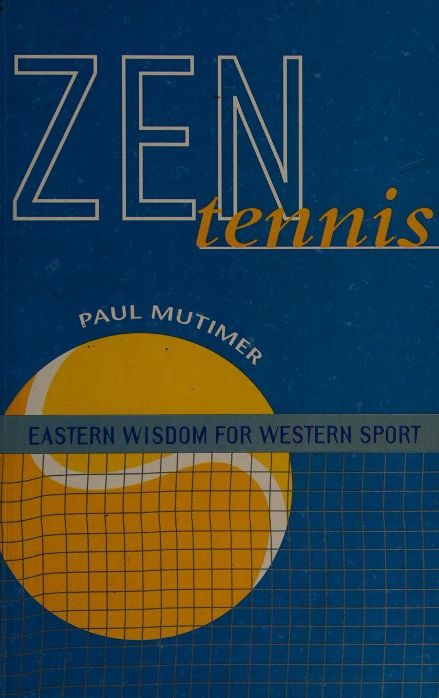
Bản dịch Việt ngữ này chỉ dùng cho mục đích học tập cá nhân, phi thương mại. Bản quyền tác phẩm gốc thuộc về tác giả và nhà xuất bản.
Trí Tuệ Phương Đông Cho Môn Thể Thao Phương Tây (Eastern Wisdom for Western Sport)
LỜI TỰA & LỜI MỞ ĐẦU
1. Lời tựa của Evonne Goolagong Cawley (Foreword by Evonne Goolagong Cawley)
Trong sự nghiệp quần vợt chuyên nghiệp của tôi, đã có nhiều lần tôi đột nhiên chơi cực kỳ xuất sắc. Tôi sẽ cảm nhận được sự “đồng nhất” tuyệt đối với quả bóng, vợt của tôi và chuyển động của đối thủ quanh sân. Trong trận chung kết US Open năm 1974 với Billie Jean King, tôi đã chơi cả trận trong trạng thái kỳ diệu mà các tay vợt mô tả là đang ở trong “trạng thái thăng hoa (The Zone)”. Sách kỷ lục cho thấy tôi đã thua 7-5 trong set cuối cùng nhưng ký ức của tôi về ngày hôm đó của trận chung kết đó không liên quan gì đến kết quả - quả thực sau đó tôi đã viết: "Rất đơn giản, quần vợt của chúng ta đã vượt qua bảng điểm. Các cuộc giao tranh của chúng ta dường như vô tận, tuy nhiên, sau một cuộc trao đổi không thể trả lại khác, tôi cảm thấy nổi da gà khi đám đông hò reo tán thành."
Tôi có cảm giác như mình đang lơ lửng trong hệ thống điều khiển hành trình, như thể những nguồn năng lượng khác đã tiếp quản. Các phản xạ đã hoạt động nhưng cơ thể tôi đã tự chuyển giao cho sự thống nhất hoàn hảo giữa tâm trí, cơ thể và tinh thần.
Tôi đang nhảy theo nhịp điệu nội tâm với mọi thứ.
Có được cảm giác này trong cả trận đấu là điều hiếm có. Tôi hãy tin rằng điều đó chỉ xảy ra hai lần khác trong sự nghiệp của tôi và bạn sẽ rất vui khi biết tôi đã thắng cả hai lần đó! Tuy nhiên, theo thời gian, điều đó sẽ xảy ra trong một khoảng thời gian trong trận đấu, thường là khi tôi ở phía sau và đã quyết định “cố gắng”. Không gì có thể xâm phạm tôi vào những thời điểm đã chọn. Đánh bóng sẽ không tốn nhiều công sức và tôi sẽ siêu ý thức được các dây vợt chạm vào quả bóng đến mức tôi là dây và quả bóng. Nghe có vẻ tuyệt vời phải không, và tôi tin rằng việc đạt được trạng thái đó trong áp lực cao khiến giải quần vợt vô địch trở nên đặc biệt thỏa mãn.
Khi tiếp tục đọc cuốn sách của Paul, bạn sẽ nhận ra rằng đó cũng là một trạng thái thú vị mà bạn đạt được trong cuộc sống hàng ngày. Nhờ phần lớn vào di sản thổ dân của tôi, và chắc chắn là nhờ những gì tôi đã học được từ lời dạy của những người lớn tuổi thổ dân, trải nghiệm rất tự nhiên về sự hài lòng về bản thân này vẫn tiếp tục tồn tại trong cuộc sống của tôi cho đến ngày nay và không kém phần thú vị, dù không liên tục một cách khó chịu. Đó chắc chắn là điều đáng để phấn đấu và khi đọc Zen Tennis, bạn có thể nhận ra rằng chính bạn cũng đã có được trải nghiệm tuyệt vời này. Nếu không, bạn có thể học cách để nó xảy ra. Evonne Goolagong Cawley
2. Sự khám phá Zen Tennis (The Discovery of Zen Tennis)
“Tôi không quan tâm nếu mình chết, tôi sẽ giành được điểm này!” Trong bất kỳ trận đấu quần vợt căng thẳng nào, ý nghĩ này sẽ xuất hiện trong đầu tôi, thúc đẩy tôi đạt đến những tầm cao hơn. Tôi có thể không có nhiều khả năng nhất nhưng tính tâm huyết của tôi sẽ không bao giờ bị nghi ngờ. Bất kỳ sai lầm hoặc mất điểm nào cũng sẽ làm cho quyết tâm của tôi trở nên sắc bén hơn.
Thật ngạc nhiên khi khi còn là một đứa trẻ mười lăm tuổi bất khả chiến bại, tôi bắt đầu dành thời gian trên giường với lưng cong. Lúc đó tôi không có khái niệm về bất kỳ mối liên hệ nào giữa tình trạng thể chất và thái độ của tôi. Sẽ dễ dàng hơn để sống với niềm tin ngây thơ rằng đó chỉ là một vấn đề về thể chất sẽ biến mất theo thời gian. Đây không phải là trường hợp. Đến năm mười bảy tuổi, tôi đã đến gặp các chuyên gia chỉnh hình, vật lý trị liệu và nhân viên mát xa.
Tôi cảm thấy hơi lạc lõng và choáng ngợp trong thế giới y khoa này. Tôi đã không biết rằng có rất nhiều lựa chọn điều trị khác nhau.
Tôi di chuyển giữa các nhóm khác nhau nhưng không ai có cây đũa thần. Mọi người đều nhất trí rằng các cơ ở lưng dưới của tôi đang căng lên và khiến chân tôi bị căng. Tôi được kê một loạt bài tập và một số loại thuốc giãn cơ. Không cần phải nói rằng điều này không hiệu quả đủ nhanh đối với tôi và cam kết của tôi bắt đầu dao động.
Đối mặt với một chẩn đoán không chắc chắn và nỗi thất vọng thường xuyên vì không thể tập luyện, tôi phải đối mặt với điều mà lúc đó tôi nghĩ là lựa chọn duy nhất của mình: chơi và chịu đựng hoặc không chơi chút nào. Nhìn mọi thứ một cách trắng đen như vậy đã khiến tôi ngừng chơi quần vợt và tìm kiếm nguyên nhân hoặc cách chữa trị tình trạng của mình.
Sau khi thử nhiều phương pháp điều trị vật lý thông thường, tôi quyết định đã đến lúc xem liệu tôi có thể thu được lợi ích gì bằng cách khám phá sức mạnh và tác dụng của tâm trí hay không.
Có lẽ chính sự đồng bộ mà lúc này có một số bạn mới học thiền. Sự phấn khích và nhiệt tình của họ rất dễ lây lan. Tôi đã phải học. “Cuộc họp tiếp theo diễn ra khi nào?” Đêm hôm sau, tôi nghe một vị thầy Thiền Siêu Việt giảng về công đức vô hạn của thiền. Tôi không chắc mình có thực sự hiểu được nhiều điều cô ấy đang nói hay không, nhưng một phần trong tôi cảm thấy như thể tôi đã tìm ra câu trả lời cho mọi vấn đề của mình. Trong lòng nhiệt thành duy tâm, tôi nghĩ chỉ cần nhắm mắt lại vài lần là những bí ẩn của vũ trụ sẽ được hé lộ.
Suy cho cùng, nếu tôi không thể trở thành nhà vô địch quần vợt thì lời hứa về sự giác ngộ dường như không phải là một giải thưởng an ủi tồi tệ. Thiền trở thành nỗi ám ảnh mới của tôi. Câu thần chú của tôi đã thay thế quả bóng tennis.
Thời gian trước đây dành cho quần vợt giờ được dành cho việc theo đuổi mới này. Đó là trung tâm cuộc sống của tôi. Tôi đọc sách về huyền học phương Đông, Thiền và võ thuật. Tôi đăng ký các khóa thiền dài hạn được thiết kế để tăng tốc hành trình của mình. Tôi cảm thấy mình đã tình cờ nhận được một món quà tuyệt vời.
Bất kể hoàn cảnh nào, và thường trước sự bối rối và thích thú của nhiều người, tôi sẽ xin lỗi khi đến giờ thiền. Trong nhiều năm, tôi đã thiền định trên tàu hỏa, phía sau xe tải, trong phòng tắm, nhà vệ sinh, gần như bất cứ nơi nào mà bạn có thể ngồi và nhắm mắt lại. Thiền không thể bỏ qua!
Trong bảy năm tiếp theo, tôi sùng đạo nhắm mắt chờ đợi, quan sát và trải nghiệm.
Tôi chìm đắm trong thế giới nội tâm này đến nỗi phải đến khi nhận được cuộc điện thoại từ một người bạn, tôi mới có cơ hội nhận ra mình đã thay đổi như thế nào. Bot FL: eae tức là "Bạn có muốn tham gia quần vợt lần nữa không? Tôi có một khách hàng đang tìm kiếm một người biết một chút về trò chơi này để làm việc tại quần vợt GEMeL của anh ấy
“Được rồi,” tôi nói, “rốt cuộc, tôi đang tìm một số công việc và sẽ rất vui nếu được tham gia quần vợt một lần nữa.”
Tuần tiếp theo, tôi thấy mình đang làm việc ở bàn tiếp tân, xung quanh là khung cảnh và âm thanh của quần vợt. Bánh xe quay như thế nào! '
Không mất quá nhiều ngày trước khi sự tò mò của tôi trỗi dậy. Buổi làm việc của tôi đã Kết thúc cú đánh và tôi chuẩn bị về nhà. Một nhóm người chơi đã đến để chơi trò chơi của họ nhưng chỉ còn một nhóm ngắn.
“Ai đó có thể tạo nên bốn người được không?” Không có ai ở đó ngoại trừ tôi.
“Bạn có chơi không?” họ hỏi.
"Đã lâu không chơi, có lẽ sẽ khá thất vọng."
“Đừng lo lắng, chúng tôi cũng vậy,” họ nói.
Khi bước vào sân, tôi tự hỏi điều gì sẽ xảy ra. Cái lưng của tôi dường như không còn đáng lo ngại nữa nhưng tôi lại không chơi quần vợt nữa.
Tôi bắt đầu hơi ngập ngừng nhưng hài lòng với việc mình đã đánh hợp lý. Chỉ cần ở trên sân tennis thôi là tôi đã có cảm giác như đang quay trở lại một kiếp sống khác. Trò chơi đình đám này là trò chơi đầu tiên trong số một số trò chơi vui nhộn nhẹ nhàng sẽ được ra mắt trong những tuần tới.
Tôi đoán không có gì đáng ngạc nhiên khi sau sáu tháng, tôi được người chủ hỏi liệu tôi có muốn giúp đỡ một số công việc huấn luyện hay không. Họ đã xem tôi chơi và biết rằng trước đây tôi đã chơi khá nhiều. “Sao không thử xem?” Tôi nghĩ. Thế là tôi bắt đầu.
Cho đến nay, việc đánh trở lại của tôi rất bình tĩnh và có kiểm soát. Tôi không bị đặt dưới bất kỳ áp lực nào, nhưng với tư cách là một huấn luyện viên, tôi biết rằng tôi sẽ có những khách hàng muốn có những trận đấu hay và có tính cạnh tranh. Liệu tôi có thể đáp ứng được thử thách không?
Tôi không có nhiều thời gian để tìm hiểu. Một trong những khách hàng của tôi đề nghị chúng tôi chơi một ván cạnh tranh. “Chắc chắn rồi,” tôi nói.
“Tôi không quan tâm nếu tôi chết, tôi sẽ thắng!” Bắt đầu hành động, tôi chiến đấu và chiến đấu theo cách của mình trong trò chơi. Ngày hôm sau tôi khó có thể đi lại được. Chuyện gì đã xảy ra vậy?
Tôi đã không cảm thấy như vậy trong nhiều năm. Tôi đã trở lại hình vuông chưa? Tôi có phải bỏ trò chơi không? Có thể, tôi nghĩ, nhưng một trong những điều hữu ích tôi học được qua thiền định là quan sát bản thân. Và thế là ngày hôm sau khi tập tễnh bước ra sân, tôi quyết định “quan sát” bản thân và xem mình đã chơi như thế nào.
Không lâu trước khi' tôi trải nghiệm được mối liên hệ giữa suy nghĩ và thái độ của tôi cũng như ảnh hưởng của chúng đối với cơ thể và trò chơi của tôi.
“Tôi không quan tâm nếu tôi chết, tôi sẽ thắng.” Và tôi nhận thức được một sự lựa chọn khác. Tôi không phải từ bỏ quần vợt hay đau khổ. Thay vì siết chặt để giành chiến thắng, tôi có thể mạo hiểm và thư giãn. Đây có vẻ là một giải pháp đơn giản. Khi tôi đến gần điểm tiếp theo, tôi có thể nghe thấy những nghi ngờ tràn vào.
“Cách tiếp cận thoải mái này có hiệu quả không?”
“Liệu tôi có tự làm mình xấu hổ không?”
"Tôi có thua không? Sau đó thì sao?"
Tôi có thể cảm thấy mình muốn lấy lại quyền kiểm soát. Tôi nhận thấy tay tôi đang siết chặt vợt. Tôi có thể cảm nhận được sự căng thẳng do sợ hãi và nghi ngờ tạo ra. Tôi có phải là người duy nhất cảm thấy như vậy không? Tôi có thể thư giãn và buông bỏ được không?
Chính từ thử thách nội tâm này mà Zen Tennis đã nổi lên.
Tôi bắt đầu nhận ra kết quả này đã ảnh hưởng đến suy nghĩ của tôi đến mức nào. Hình ảnh bản thân của tôi đã bị đe dọa như thế nào trước viễn cảnh thua cuộc. Tôi nhận thấy tâm trí tôi luôn hướng tới tương lai. Liệu tôi có thắng không? Liệu tôi có thua không? Tôi thấy rằng quần vợt đã bộc lộ phần lớn cách tôi suy nghĩ và cảm nhận.
Trên đường đi, tôi bắt đầu phát hiện ra rằng mình có thể chơi một trận đấu mà không bị đau. Tôi nhận thấy bằng cách đánh bóng theo phong cách thoải mái, trôi chảy, tôi có thể cảm nhận được cảm giác sảng khoái. Tôi nhận ra rằng trí tưởng tượng của tôi có thể trở thành một phần tích cực trong môn quần vợt của tôi và tôi có thể cảm thấy sáng tạo trên sân và thích đánh bóng hoàn toàn vì cảm giác thư giãn mà nó tạo ra.
Dần dần tôi bắt đầu nhận thấy mối liên hệ chặt chẽ giữa triết lý phương Đông và ứng dụng của chúng vào quần vợt. Trải nghiệm ngộ, về việc sống trọn vẹn trong khoảnh khắc, được thể hiện qua việc xem quả bóng. Những chuyển động nhẹ nhàng uyển chuyển của Thái Cực Quyền đã trở nên khả thi trong quần vợt. Nhu cầu về cách tiếp cận cân bằng giữa các kỹ thuật Cứng và Mềm của Kung Fu đã trở nên rõ ràng. Thế giới rõ ràng là khác biệt của quần vợt và thiền bắt đầu hòa hợp với nhau. Tôi bắt đầu nhìn thấy một bức tranh lớn hơn đang diễn ra trong cuộc đời mình, nó đã thu hút những thế giới dường như khác nhau này lại với nhau.
3. Triết lý đằng sau cuốn sách này (The Philosophy Behind This Book)
Khi viết cuốn sách này, tôi đã cố gắng phát triển một triết lý đằng sau môn thể thao quần vợt, một triết lý có tính đến các khía cạnh thể chất, tinh thần và cảm xúc của trò chơi. Khi làm như vậy, tôi đã vận dụng Thiền Nhật Bản, võ thuật Trung Hoa, thiền định Ấn Độ và tâm lý học phương Tây.
Các bài tập trong cuốn sách là sự kết hợp giữa các quy trình trong và ngoài sân được thiết kế để nâng cao nhận thức về bản thân và cải thiện khả năng chơi quần vợt của bạn. Để phù hợp với truyền thống kể chuyện của Thiền, tôi đã đưa vào một số truyện ngụ ngôn và bài thơ của mình để làm nổi bật và củng cố những quan điểm nhất định. Đây là những phương pháp giảng dạy có giá trị vì thay vì viết ra các thông điệp, chúng mời người đọc tự suy nghĩ về các vấn đề.
Lý do cá nhân cho việc đưa vào các bài thơ và truyện ngụ ngôn là vì đối với tôi, chúng là dấu hiệu cho thấy tôi đang thả lỏng đủ để thể hiện khả năng sáng tạo của mình. Tôi coi chúng như một sự thay đổi từ cách tiếp cận quần vợt của tôi trở nên bớt cứng nhắc hơn. Điều này phù hợp với niềm tin của tôi rằng những thay đổi ở một khía cạnh trong cuộc sống của tôi sẽ lan tỏa đến tất cả những khía cạnh khác.
Bằng cách áp dụng cách tiếp cận tổng thể này, tôi tin rằng chúng ta có thể đạt được toàn bộ giá trị từ thời gian chúng ta dành cho trò chơi của mình, bất kể tiêu chuẩn của chúng ta là gì. Tuy nhiên, lợi ích quan trọng nhất được rút ra từ sự phát triển tập hợp các thái độ và phẩm chất mà chúng ta có thể áp dụng trong mọi lĩnh vực của cuộc sống.
Tôi đã học được cách thách thức lối suy nghĩ có điều kiện của mình và tập trung rõ ràng hơn vào hiện tại thay vì lạc lối trong quá khứ.
Tôi đã khám phá lại khả năng sáng tạo, trí tưởng tượng và niềm vui thuần túy khi vui chơi của mình và bắt đầu nhận ra mọi khía cạnh trong cuộc sống của tôi được kết nối với nhau như thế nào.
Theo cách này, thể thao không nên được coi là một cái gì đó tách biệt khỏi các mối quan hệ công việc, mà là sự phản ánh và cơ chế phát triển chúng. Trong môn thể thao này vẫn còn sống động, sáng tạo và tự phát. Tại sao bắt đầu Khi không có sự bắt đầu Tại sao bắt đầu Khi không có Kết thúc cú đánh Cuộc hành trình Là để nhận ra Sự bắt đầu Là sự Kết thúc cú đánh Câu nói hay hơn câu hỏi Bắt đầu!
PHẦN 1: CÂN BẰNG (BALANCE)
4. Thi đấu trong trạng thái 'Zone' (Playing in the 'Zone')
Tất cả những người từng chơi quần vợt đều có lúc rời sân và nhớ lại một cú đánh tuyệt vời. Cho dù đó là một cú giao bóng, trái tay hay vô lê thì nó đều đáng nhớ, bởi vì nó vượt xa những gì họ nghĩ là có thể đối với họ. Nó cho họ cái nhìn thoáng qua về một cõi khác. Sau trận đấu, họ có thể nói, với giọng gần như tôn kính, về Cú trái tay (backhand) tay mà họ đánh dọc biên.
"TI đang chạy ngang, đối thủ của tôi đã tung một cú sút sâu vào góc trái tay và di chuyển vào lưới. Sau đó, một điều kỳ lạ đã xảy ra. Thời gian như đứng yên. Tôi tưởng tượng việc đánh bóng dọc theo vạch. Tôi biết mình có thể làm được. Whack! Chỉ cần nhắm tới vài inch, tôi đã đánh nó. Nó phóng qua cây vợt đang dang rộng của anh ấy để giành chiến thắng. Tôi cũng ngạc nhiên như anh ấy vậy."
Vào một ngày đẹp trời, bạn có thể đã chơi một số cú đánh này và thỉnh thoảng bạn có thể chơi một trận như thế này. Nó giống như thể bạn đang bước vào một “không gian” hay “vùng” nơi nỗi sợ hãi hay nghi ngờ không thể xâm nhập được. Trong cuộc trò chuyện bình thường, chúng ta gọi những thời điểm này là “có một mảng màu tím” hoặc “có quả bóng trên dây”.
5. Satori: Trải nghiệm giác ngộ (Satori: The Enlightenment Experience)
Theo thuật ngữ tâm lý học, trải nghiệm như vậy được mô tả là “trải nghiệm đỉnh cao”. Nó không chỉ là tài sản của những người chơi thể thao mà còn là thuật ngữ dùng để mô tả những lúc một người cảm thấy có cảm hứng. Đó là trải nghiệm được nâng cao hơn hiệu suất bình thường của bạn lên một điều gì đó lớn lao hơn. Trải nghiệm này có những đặc tính đặc biệt khi thời gian dường như đứng yên, nơi tâm trí không bị xao lãng và nơi có cảm giác bình tĩnh nội tâm không thể lay chuyển. Mọi thứ trong khoảnh khắc đó dường như hoàn hảo. Trong truyền thống Thiền, thuật ngữ Satori được dùng để mô tả thời điểm hoặc thời điểm giác ngộ. Trải nghiệm kết nối chúng ta chặt chẽ với bản chất thực sự của chúng ta, hay Bản thân, vốn không bị quá khứ hay tương lai che mờ. Mặc dù điều này nghe có vẻ rất huyền bí nhưng nó thực sự là một trải nghiệm tự nhiên. Ngộ có thể là kết quả của việc thực hành Thiền và xảy ra khi người tập hoàn toàn tập trung vào thời điểm hiện tại. Đó là sự hòa hợp tự nhiên của tâm trí, cơ thể và cảm xúc cùng chảy với nhau. Đó là trạng thái mà nhiều người vấp phải, đạt được trong chốc lát, đánh mất và dành cả đời để tìm kiếm. Chính từ những trạng thái tinh thần này mà các tác phẩm truyền cảm hứng được tạo ra, cho dù đó là một trận đấu quần vợt đáng nhớ, một bức tranh vĩ đại hay một kiệt tác âm nhạc.
Một khi chúng ta thoáng nhìn thấy ngộ, bản thân nó có thể trở thành một mồi nhử. Trải nghiệm này tạo ra cảm giác kỳ diệu trong cuộc sống, có thể biến những điều trần tục thành điều gì đó đặc biệt. Nó có thể tương đương với trải nghiệm khi yêu và tô điểm cho mọi khía cạnh của cuộc sống. Ngộ cảm khắp nơi Sự nhẹ nhàng của sự chuyển động giống như một điệu nhảy Như thể trong một giấc mơ Một đầu ngón tay Hướng dẫn chuyến bay Sự chính xác không thể sai sót Nỗ lực thật nhẹ nhàng Tâm trí và cơ thể Biểu diễn như một Không có quá khứ, không có tương lai Để vượt qua Một nụ cười yếu ớt trên môi Gợi ý bất ngờ Trí tưởng tượng trong hành động Trước mắt Khoảnh khắc này của sự thật Chứa đựng tất cả Không có bóng đổ Giữa người chơi và quả bóng Res. ừ ừ
ALND
LÀ AST OF RoI Khi viết cuốn sách có tựa đề Zen Tennis, đôi khi tôi cảm thấy không thoải mái. Dường như tôi đang được quan sát bên trong bởi một khuôn mặt tươi cười. Tôi thậm chí còn có cảm giác đó có thể là một nhà sư lớn tuổi từ thời xa xưa. Anh ấy ghi nhận một cách hài hước những nỗ lực của tôi khi viết về cách chơi quần vợt như thể có một công thức nào đó để tuân theo. Ngay cả hành động ghi nhiều chữ này ra giấy cũng là đối đầu với câu nói của Thiền:
Người biết thì không nói
Người nói thì không biết.
Thiền được mô tả là một con đường không có lối đi, không cần làm gì để đạt được giác ngộ. Người ta nói rằng sự giác ngộ luôn tồn tại. Chúng ta chỉ cần nhận ra điều đó. Đó là điều gì đó xảy ra với chúng ta chứ không phải là kết quả của những việc chúng ta làm một cách có ý thức. Lý tưởng nhất là trải nghiệm ngộ là hoàn toàn thỏa mãn và không dính mắc vào kết quả. Quan điểm này được thể hiện rõ ràng trong câu nói nổi tiếng của Thiền:
Trước khi ngộ, Chặt củi, Lấy nước.
Sau khi ngộ, Chặt củi, Lấy nước.
Nói như vậy, truyền thống Thiền vẫn rất chú trọng đến kỷ luật và kỹ thuật. Một số trong số này, sẽ được thảo luận chi tiết hơn sau, bao gồm thời gian thiền định dài được gọi là Zazen (tọa thiền), Kinhin (thiền hành) (thiền hành) (thiền hành), nghiên cứu tụng kinh công án (koan). Với nhiều phương pháp thực hành này, người ta đặc biệt chú ý đến chi tiết và nghi thức. Cách một người rời khỏi và vào thiền đường, ăn, ngồi, đứng và đi đều được hướng dẫn bởi nhiều thói quen khác nhau. Vì vậy, mặc dù đích đến vẫn luôn hiện diện nhưng chúng ta có thể cần sự giúp đỡ nào đó để nhận ra nó.
Trong trường hợp quần vợt:
Đích đến là gì?
Liệu có trở thành nhà vô địch Wimbledon không?
Có phải nó đang khám phá ra sự thật rằng có một Nhà vô địch Wimbledon bên trong chúng ta đang bị che mờ bởi những quan niệm sai lầm?
Hay đó là sự xuất hiện của thái độ đối với thời gian chơi?
Có phải là trân trọng từng khoảnh khắc?
Quần vợt có tương đương với câu nói Thiền trên: Trước Wimbledon Giao bóng, Cú thuận tay (forehand). Sau Wimbledon Giao bóng, Cú thuận tay (forehand)?
Câu trả lời duy nhất có vẻ hợp lý là nó có thể là tất cả những điều này. Trong truyền thống Thiền thường không có một câu trả lời đúng. Nó có thể chỉ đơn giản là một trường hợp khám phá điều gì phù hợp với bạn, vào bất kỳ thời điểm cụ thể nào. Nếu lý do chơi của bạn là để trở thành nhà vô địch thì cũng vậy, hoặc nếu chỉ để chơi để trải nghiệm thì cũng không sao. Mỗi khoảnh khắc đều làm tăng thêm cảm giác về con người thật của bạn.
NGÀY CỦA CHÚNG TÔI)
OS CECE Sẽ rất có giá trị nếu điền vào bản Satori ở trang 19 để giúp bạn nhận ra rằng có thể bạn đã trải qua trạng thái này. Mặc dù chúng ta không muốn sống trong quá khứ hoặc chìm đắm trong quá khứ nhưng nhiều người trong chúng ta lại quá bận tâm với những cam kết hàng ngày đến mức dễ dàng quên đi một số khoảnh khắc đầy cảm hứng trong cuộc đời. Việc nhớ lại những trải nghiệm này có thể có giá trị rất lớn.
Bằng cách dành thời gian xem lại những khoảnh khắc này, chúng ta có thể nhận ra rằng những khía cạnh quan trọng trong cuộc sống của chúng ta đã bị lãng quên mà chúng ta không hề nhận ra. Chúng ta có thể đã ngừng dành thời gian để tập thể dục, có thể chúng ta đã ngừng thiền định, v.v. Khôi phục những hoạt động này có thể mang lại niềm say mê mới cho cuộc sống.
Khi nó
đến
quần vợt, nếu bạn
có
mất niềm tin vào trò chơi của mình, có thể bạn đã tập trung vào một số khía cạnh tiêu cực. Những lúc này rất dễ bị xẹp và mất đi cảm giác thích thú khi chơi. Việc xem lại và nhắc nhở bản thân về những khoảng thời gian thăng hoa này có thể giúp bạn thoát khỏi những nghi ngờ và làm mới niềm tin vào bản thân. Miễn là bạn sử dụng trí nhớ như một lời nhắc nhở về khả năng của mình, thay vì so sánh với cách bạn đang chơi vào lúc này, thì bài tập này có thể rất có lợi.
Khi điền vào bảng này, điều quan trọng cần nhớ là trải nghiệm ngộ không nhất thiết phải liên quan đến những thành tựu to lớn. Thường thì chúng có thể xảy ra ở những khoảnh khắc tự nhiên rất đơn giản. Tôi cho rằng mình đã trải qua một số khoảnh khắc rất đặc biệt khi đánh bóng tennis vào những buổi sáng sớm mùa xuân. Không khí trong lành và tràn đầy sinh lực, cơ thể tôi thư giãn, tỉnh táo và tôi cảm thấy một cảm giác sảng khoái tuyệt vời.
BẢNG SATORI
• Nhớ lại và mô tả thời điểm bạn chơi quần vợt hay nhất. Bạn đã ở đâu? Bạn đang chơi ai vậy? Bạn có làm gì khác để chuẩn bị không? Bạn đã làm điều gì đó một cách có ý thức để tạo ra nó?
• Trải nghiệm đó như thế nào? Bạn có thư giãn không? Bạn thở thế nào? _ Cảm nhận về thời gian của bạn thế nào? Bạn có nhìn rõ quả bóng không? Sự tập trung của bạn như thế nào?
• Bạn có để ý những gì đang xảy ra xung quanh mình không?
• Cảm giác đó có còn kéo dài sau trận đấu không?
• Bạn có trải nghiệm này thường xuyên không?
• Bạn có thể lặp lại nó một cách có ý thức được không?
• Bạn có gặp trải nghiệm tương tự khi làm việc khác không? JoHN
NEWCOMBE
SACK ORT EAE ees Es oe Sau đây là mô tả của John Newcombe về trải nghiệm ngộ. Nó cũng cung cấp một số hiểu biết có giá trị về cách anh ấy đạt được điều này.
Tôi có
được quản lý
đạt được
ngộ
“đỉnh cao
trải nghiệm” nhiều lần, mà
trong giáo dân của tôi
thuật ngữ mà tôi gọi là “đặt mình vào trạng thái thăng hoa (The Zone)”. các
đáng chú ý và bổ ích nhất đối với cá nhân tôi là
Chung kết Wimbledon 1970 với Ken Rosewall. Lúc chín tuổi, tôi đã nghe đài
trận chung kết Davis Cup 1953 ở Melbourne giữa
Úc và Mỹ với những cậu thiếu niên thần đồng
Rosewall và Hoad đại diện cho Úc. Năm 1954
họ lại chơi ở Sydney và lần này tôi ngồi ở
đứng bên bố tôi và mơ về ngày tôi
sẽ đủ tốt để có mặt tại tòa. Bây giờ, tôi đang ở trong trận chung kết Wimbledon với
Tường hồng. Tôi đã mong đợi đám đông sẽ ở bên Ken như anh ấy
đã lớn tuổi hơn và họ cảm thấy đây có thể là cơ hội chiến thắng cuối cùng của anh ấy. Sau set đầu tiên sát nút với Ken, tôi thắng set tiếp theo
hai bàn một cách thoải mái và dẫn trước 3-1 ở hiệp thứ tư tôi
dường như đang hướng tới giải Wimbledon thứ hai của tôi
danh hiệu đĩa đơn. Đám đông có những ý tưởng khác khi họ
bắt đầu cổ vũ mọi lỗi lầm của tôi và cổ vũ
một cách cuồng nhiệt cho mỗi chiến thắng mà Ken thực hiện. Tôi đã cho phép cảm xúc lấn át mình và
trở nên đầy tức giận, thất vọng và năng lượng tiêu cực
khi Ken chơi hết năm ván để san bằng tất cả hai set. Về việc thay đổi mục đích, tôi đã có một cuộc nói chuyện nghiêm túc với
bản thân tôi đã đi đại loại như thế này: Làm thế nào tệ quá
bạn muốn giành chiến thắng? Vâng, tôi rất muốn giành chiến thắng!
Được rồi, vậy bạn
cần
để thanh lọc bản thân khỏi tất cả
năng lượng tiêu cực, và bước vào sân với một tầm nhìn
chỉ có một quả bóng tennis và một người chơi ở đầu kia của
sân đấu. Mọi thứ khác phải trở nên không còn phù hợp nữa, chẳng hạn như trọng tài, người xếp hàng, người nhặt bóng, đám đông, bạn bè, gia đình và thực tế là như vậy.
Chung kết Wimbledon.
Tôi thực sự cảm thấy mình đi vào bên trong cơ thể và thổi
loại bỏ mọi cảm giác tiêu cực. Tôi nhớ rõ một
điểm ở tỷ số 15-30 trong ván giao bóng đầu tiên của tôi. Tôi đã Giao bóng / Cú giao bóng một
và Ken đang cố gắng áp dụng
áp lực ở cú giao bóng thứ hai của tôi. Thực sự không bao giờ
tranh luận về điều đó, tôi bình tĩnh đánh bại anh ta ở đường giữa.
Từ thời điểm đó trở đi trận đấu là của tôi như tôi cảm thấy
Tôi biết Ken sẽ làm gì trước khi anh ấy chạm vào
bóng, và tôi Kết thúc cú đánh set 6–1. Sau đó, khi tôi hồi tưởng lại trận đấu, tôi
rất tự hào về cách tôi có thể đặt mình
thành một vùng trong khoảng thời gian ngắn sáu mươi giây
sự thay đổi, khi ‘cơ thể và tâm trí của tôi đã
vượt qua phiền não. Đó là một bài học tuyệt vời mà
bạn có thể vượt qua những con quái vật như sợ hãi, lo lắng, tức giận và thất vọng. Tôi đã có thể lặp lại trải nghiệm này nhưng tôi
sẽ không bao giờ phải chịu áp lực như trong
cái vạc của Sân đấu Trung tâm Wimbledon.
Mặc dù tôi sẽ phân tích trải nghiệm này chi tiết hơn ở phần sau của cuốn sách, nhưng tôi tin rằng bây giờ tôi cần đề cập đến một số điểm quan trọng. Lời kể của John Newcombe mô tả khả năng của anh ấy trong việc tập trung lại sự chú ý của mình trở lại đây và bây giờ, bằng cách thanh lọc năng lượng tiêu cực của bản thân. Kết quả là anh ấy có được cảm giác bình tĩnh khi biết điều đó sẽ duy trì trong suốt phần còn lại của trận đấu. Cuối cùng, anh ấy có được niềm tin vào khả năng vượt qua những con quái vật bên trong mình. Những điểm này phù hợp với sự mô tả trước đó về ngộ.
Trước đó tôi đã đề cập rằng trong quá trình trải nghiệm chứng ngộ, tâm thoát khỏi ảnh hưởng xao lãng của tư tưởng. Tuy nhiên, một khi trải nghiệm thoáng qua, một số câu hỏi như sau chắc chắn sẽ nảy sinh trong tâm trí chúng ta.
Trải nghiệm này có thể lặp lại được không?
Đây có phải là một sự kiện ngẫu nhiên có cơ hội?
Tôi có thể làm gì để khuyến khích điều này xảy ra thường xuyên hơn không?
Đó là may mắn, chỉ là khoảnh khắc định mệnh hay là do ham muốn?
Phải chăng trạng thái tâm lý này chỉ thuộc về nhà vô địch?
Những cái này
tự nhiên
câu hỏi
cung cấp
hướng tinh thần để đạt được sự hiểu biết lớn hơn về những thời điểm này. Việc trả lời chúng có thể đưa bạn vào nhiều cuộc hành trình thú vị. Bạn có thể gặp gỡ mọi người hoặc đọc sách để tìm ra những mảnh ghép hoặc bạn có thể may mắn có được trải nghiệm đó lặp lại mà không cần nỗ lực nhiều. Miễn là bạn không quá quan tâm đến việc hiểu trải nghiệm một cách trí tuệ mà phải trả giá bằng việc “có được trải nghiệm” thì những câu hỏi này đều có giá trị.
Tôi viết truyện ngụ ngôn “Chiếc kèn saxophone bằng sứ” trong khi vật lộn với những vấn đề liên quan đến sự thích thú, kỳ vọng và kết quả. Nó cho ta một cái nhìn thoáng qua về ngộ, sự mất mát và sự tái khám phá của nó. Thre yo 7 Oe saxophone Ngay từ khi còn nhỏ, anh đã yêu thích âm nhạc. Anh ấy sẽ chọn bất kỳ nhạc cụ nào và chơi với nó hàng giờ. Khi lớn lên, anh chọn chuyên chơi saxophone vì anh nhận thấy những nốt nhạc có hồn của nó thể hiện rõ nhất cảm xúc của anh.
Không lâu sau, mọi người tụ tập xung quanh để lắng nghe những âm thanh tuyệt vời mà anh ấy tạo ra. Khuôn mặt anh rạng rỡ niềm vui khi chơi.
Để đền đáp niềm vui mà anh ấy đã mang lại cho họ, người dân trong thị trấn của anh ấy đã đặt một món quà đặc biệt. Họ thuê một nghệ nhân để làm ra một chiếc kèn saxophone vẽ tay bằng sứ độc đáo. Loại nhạc cụ mỏng manh này không chỉ đẹp về hình thức mà còn có âm thanh huyền diệu. Nhạc sĩ trẻ yêu thích nó.
Anh ấy ngày càng nổi tiếng hơn và bất cứ nơi nào anh ấy biểu diễn, khán giả đều bị mê hoặc bởi âm nhạc của anh ấy. Sau mỗi buổi biểu diễn, tất cả họ đều nhận xét về vẻ đẹp của loại nhạc cụ quý giá này và âm thanh vượt trội của nó. Thời gian trôi qua, chàng trai trẻ bắt đầu thích thú với sự chú ý mà anh có được khi biểu diễn nhưng anh cũng thầm tự hỏi liệu khán giả có yêu thích buổi hòa nhạc của mình nếu anh không có nhạc cụ tuyệt vời này hay không. Anh bắt đầu nghi ngờ khả năng của mình và lo lắng về màn trình diễn của mình.
Rồi một đêm nọ, khi anh cẩn thận mở chiếc saxophone của mình, nỗi sợ hãi tồi tệ nhất đã xảy ra. Dụng cụ trượt tay rơi xuống sàn, vỡ thành từng mảnh.
Anh ấy không thể biểu diễn nếu không có nó. Khán giả sẽ thất vọng. Anh ấy không thể tiếp tục.
Chàng trai ngừng chơi hoàn toàn. Lúc đầu, anh cố gắng quan tâm đến các hoạt động khác nhưng trái tim anh không dành cho chúng. Anh trở nên bồn chồn và muốn thoát khỏi những ký ức và những người luôn hỏi anh khi nào anh sẽ thi đấu trở lại. Anh bắt đầu đi du lịch và lang thang xa nhà.
Nhiều năm trôi qua. Anh đã có nhiều trải nghiệm và thời gian làm mờ ký ức về những ngày thi đấu nhưng vẫn chưa thỏa mãn, anh quyết định trở về nhà. Khi anh đến làng vào ban đêm và vì không còn nơi nào để ở, anh đi đến một con đường nhỏ rải sỏi cũ, nơi anh biết mình có thể trú ẩn.
Đến nơi, anh bắt đầu dọn chỗ để trải chăn. Khi anh đẩy đống rác sang một bên, anh nghe thấy tiếng kim loại cọ xát trên đá. Nhìn kỹ hơn, anh ngạc nhiên thấy một chiếc kèn saxophone cũ kỹ. Khi lau chùi nó, anh nhận ra rằng nó đã bị móp và chắc chắn đã qua những ngày đẹp nhất. Nó thậm chí có thể chơi một nốt nhạc? Nhấc nó lên, anh nhận ra cảm giác cầm trên tay thật thoải mái. Đây là lần đầu tiên anh chạm vào một nhạc cụ kể từ khoảnh khắc khủng khiếp đó trong quá khứ. Anh đưa nó lên môi.
Chẳng mong chờ gì, anh bắt đầu chơi. Lúc đầu còn ngập ngừng. Anh thấy mình như đứa trẻ của một kiếp trước, cho đến khi anh quên mất chính mình, lạc vào thứ âm thanh rung động, có hồn. Trong khi đó, âm nhạc đầy mê hoặc của anh đã khiến người qua đường phải dừng lại và thu hút sự chú ý của những cư dân tò mò. Một số mở cửa sổ, số khác lang thang bên ngoài để lắng nghe.
Với đôi mắt nhắm nghiền và khuôn mặt rạng rỡ, anh ấy tiếp tục.
6. Khái niệm Âm và Dương (The Concept of Yin and Yang)
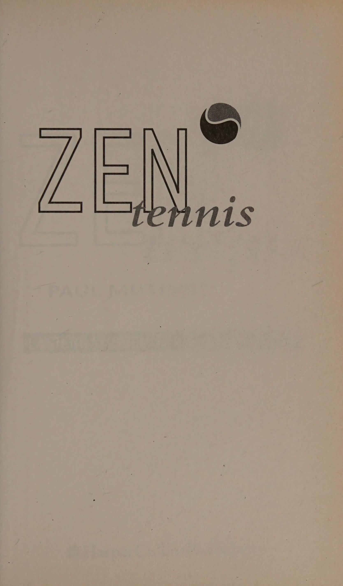
Hai nhân vật chính của quần vợt từng đánh nhiều trận trong những năm 1980 là John McEnroe và Bjorn Borg. Một khía cạnh hấp dẫn trong các trận đấu của họ là sự tương phản trong phong cách và khí chất. McEnroe thể hiện cách tiếp cận đầy nhiệt huyết, “cứ để mọi việc diễn ra” trong khi Borg luôn tỏ ra lạnh lùng và kiểm soát. Trò chơi của McEnroe đầy tinh tế và sáng tạo trong khi trò chơi của Borg lại nhất quán một cách đáng kinh ngạc. Điểm chung của họ là khát vọng cạnh tranh lớn lao, cùng với Sự tập trung cao độ khi cần thiết. Cả hai đều là những tay vợt cừ khôi. Dựa trên ví dụ của hai tay vợt này, rõ ràng là không có một cá tính “đúng” nào cho môn quần vợt.
Mặc dù tất cả chúng ta đều có khuynh hướng có một tính khí nhất định, nhưng đôi khi việc có thể vận dụng những khía cạnh quen thuộc khác trong tính cách của chúng ta là cần thiết hoặc hữu ích. Tôi tự hỏi liệu có lúc nào điều đó có thể giúp Borg hoặc McEnroe trở nên giống người kia một chút không. Thật khó để tưởng tượng Borg nổ súng và cản phá hay McEnroe chơi một trận đấu chặt chẽ một cách bình tĩnh, nhưng có lẽ có những lúc điều đó sẽ có lợi. Khả năng thích ứng đủ để phát huy khía cạnh đối lập trong tính cách của chính bạn mang lại sự linh hoạt trong việc xử lý các tình huống khác nhau. Nhận thức được những điều đối lập này và sử dụng chúng một cách thích hợp sẽ mang lại cảm giác cân bằng hơn.
Trong triết học Trung Quốc, khái niệm cân bằng được mô tả dưới góc độ Âm và Dương. Âm và Dương được coi là đối lập bổ sung, phụ thuộc vào nhau để xác định. Không có gì tuyệt đối là cái này hay cái kia. Mỗi phần của biểu tượng có một vòng tròn nhỏ tương phản minh họa thực tế rằng trong Âm có một số Dương và ngược lại.
Một số ví dụ rõ ràng về những điều đối lập này là:
YANG
nữ tính
nam tính
mềm mại
khó
đêm
tiếp thu
đang hoạt động
hướng nội
hướng ngoại
Việc nhấn mạnh vào sự cân bằng là một khía cạnh không thể thiếu trong đời sống của người Trung Quốc. Ví dụ: nếu ai đó bị ốm, việc điều trị của họ thường xoay quanh việc chẩn đoán sự mất cân bằng liên quan đến việc quá chú trọng hoặc không chú trọng đến Âm hoặc Dương.
Một ví dụ đơn giản về cách điều này có thể xảy ra là thông qua cách tiếp cận tập thể dục của một người. Tập thể dục là yếu tố Dương và nghỉ ngơi là yếu tố Âm. Tập thể dục quá nhiều khiến một người mệt mỏi và giảm khả năng đối phó về thể chất, tinh thần và cảm xúc. Trong trường hợp nghiêm trọng, nó có thể dẫn đến tình trạng khuyết tật như mất nước và giảm chức năng của hệ thống tự miễn dịch. Mặt khác, tập thể dục quá ít sẽ dẫn đến các vấn đề về thể chất như tuần hoàn kém, mất sức mạnh và tính linh hoạt. Tìm sự cân bằng phù hợp là chìa khóa để tối đa hóa sức khỏe tốt. Trqenr, Grant
HOẶC °DWA BÒ? Một lĩnh vực khác mà khái niệm này được nêu bật mạnh mẽ là hệ thống võ thuật Kung Fu. Trong hệ thống Wu Shu, sự cân bằng đạt được bằng cách kết hợp các động tác Âm (mềm) và Dương (cứng), trong khi các loại võ thuật khác có thể tập trung nhiều hơn vào lực Âm hoặc Dương. Karate phần lớn là môn nghệ thuật Dương vì nó nhấn mạnh vào sức mạnh và sức mạnh. Một cú đấm mạnh, mạnh sẽ bị phản đòn bằng một đòn chặn mạnh, mạnh. Các môn võ thuật như Aikido dựa vào khía cạnh Âm bằng cách Đổi hướng bóng hoặc né tránh lực tấn công của đối thủ.
Các nguyên tắc của Kung Fu bắt nguồn từ việc quan sát các loài động vật khác nhau trong bối cảnh tự nhiên của chúng. Người ta cho rằng vào thế kỷ XIII, Pai Yu-feng, một chuyên gia Wu Shu, đã dàn dựng hệ thống Thiếu Lâm nổi tiếng được đặt theo tên của năm con vật.
Hệ thống Thiếu Lâm là sự kết hợp của các kỹ thuật thở được sử dụng kết hợp với võ thuật vật lý, bắt chước chuyển động và tinh thần của các loài động vật được chọn. Vũ đạo nhằm mục đích kết hợp các chuyển động của các loài động vật khác nhau thành một thói quen cố định, thể hiện Âm và Dương dưới nhiều hình thức khác nhau. Khi chuyển từ thế Hạc sang thế Hổ, cần phải thể hiện sự thay đổi trong cách thực hiện từ mềm mại, kiềm chế sang cứng rắn và hung hãn. Điều này cho phép người tập bắt chước chính xác hơn các chuyển động của con vật và thể hiện tinh thần hoặc tính cách của con vật cụ thể đó.
Vũ đạo còn cho phép thể hiện Âm và Dương bằng cách xen kẽ giữa các kỹ thuật cao (Dương) và thấp (Âm), kỹ thuật cứng (Dương) và mềm (Âm) và bằng cách thay đổi cách thực hiện các động tác giữa nhanh (Dương) và chậm (Âm). Những nguyên tắc tương tự này có thể được áp dụng cho môn quần vợt, nơi các cú đánh có thể khác nhau giữa cứng và mềm, ngắn (Dương) và dài (Âm).
kỷ luật
cam kết
cần thiết phải làm chủ các động tác được coi là một khía cạnh thiết yếu trong sự phát triển của mỗi tu sĩ. Quá trình luyện tập chủ yếu bao gồm các bài tập thở, giãn cơ kết hợp với chế độ ăn uống được kiểm soát chặt chẽ. Quá trình đào tạo nghiêm ngặt buộc các nhà sư phải vượt qua những giới hạn tự đặt ra và giúp họ đạt được những hiểu biết sâu sắc về bản chất thực sự của mình. Việc đạt được một quan điểm mới và giải phóng khỏi những khái niệm ảo tưởng về bản thân có thể được coi là những trải nghiệm ngộ.
Các loài động vật tuân theo hệ thống là:
HỔ: sức mạnh, lòng dũng cảm, tinh thần
L EO PAR
D: Lén lút, tốc độ, hung hãn
C RANE:
cân bằng, duyên dáng, bình tĩnh, tập trung
RẮN: tính thời gian, sự linh hoạt, nhanh nhẹn
Trong số các con vật kể trên, Hạc và Rắn tượng trưng cho Âm, Hổ và Báo tượng trưng cho Dương. Các loài động vật được phân loại là Âm hoặc Dương tùy theo tính khí và hành vi của chúng. Rắn và Hạc đều là những loài động vật khá điềm tĩnh (Âm), thích chạy trốn (Âm) hơn là chiến đấu (Dương). Sếu nổi tiếng vì có tuổi thọ cao nhờ vào lực Âm mạnh mẽ. Tương tự, Rắn sử dụng sức mạnh Âm của mình để duy trì sự sống trong thời gian ngủ đông vào mùa đông. Hổ và Báo thể hiện bản chất Dương của chúng bằng sự hung hãn và thể chất mạnh mẽ.
Con vật thứ năm, được cho là kết hợp Âm và Dương, là Rồng thần thoại. Con thú siêu nhiên này được nhiều người Trung Quốc coi là một loài động vật thần bí và thần thánh và được đưa vào hệ thống này như một lý tưởng có thể không ngừng phấn đấu. Người ta nói rằng Rồng có thể dao động nhanh chóng giữa trạng thái không trọng lượng và cực kỳ nặng (Dương). Nó như ở nhà trên bầu trời, trên mặt đất hay dưới nước. Khả năng của nó được xác định một cách có ý thức tùy theo tình hình hiện tại của nó.
SỰ LIÊN QUAN
JANG
"ACNPED
YOTOHTE
ĐỘNG VẬT
TENNIS Để phát triển một trò chơi hoàn chỉnh và cân bằng, bạn cần phải nhận thức được điểm mạnh và điểm yếu của mình. Có một cú thuận tay tuyệt vời là chưa đủ nếu Cú trái tay (backhand) tay của bạn yếu.
Tương tự như vậy, không phải lúc nào bạn cũng có lợi khi đánh bóng mạnh mẽ hoặc ngược lại, chỉ chơi những cú đánh “chạm”. Bạn cần có sự linh hoạt để có thể lựa chọn kiểu chơi phù hợp với hoàn cảnh và đối thủ. Để có thể thực hiện được cú đánh cần thiết hoặc cách tiếp cận tinh thần có nghĩa là cảm thấy thoải mái với cả Âm và Dương của quần vợt.
Một số phẩm chất Âm Dương của quần vợt sẽ là gì?
YANG
Hạc, Rắn
Hổ, Báo
Có thể đợi và đánh
Đánh bóng
quả bóng muộn
đang gia tăng
Chơi bằng cách chạm
Đánh bóng '
và sự tinh tế
mạnh mẽ
Dòng chuyển động
Chuyển động ngắn
với ít nỗ lực
và sắc bén với sức mạnh thể chất
Hoạt động được một điểm
Nhận được các cuộc biểu tình
với sự kiên nhẫn
qua nhanh đi
Phản hồi đối phương
Ra lệnh chơi
Tận hưởng bề mặt chậm
Tận hưởng bề mặt nhanh chóng
Trước đây khi tôi mô tả ý nghĩa của Âm và Dương, tôi đã nói rằng không có gì hoàn toàn là Âm hay Dương. Luôn luôn có một số khía cạnh của cái này trong cái kia. Danh sách người chơi này dựa trên trò chơi của họ chủ yếu thuộc một danh mục hơn danh mục khác.
YANG
Alex Corretja
Jim Courier
Martina Hingis
Steffi Graf
Conchita Martinez
Aranxta Sanchez Vaccario
Mark Woodforde
Mary Pierce
Evonne Cawley
Thomas Muster
John McEnroe
Monica Seles
Stefan Edberg
Andre Agassi Pete Sampras
Khi lập danh sách, tôi thấy khó khăn hơn khi xếp những người chơi đương đại vào loại Âm. Điều này có thể là do sức mạnh được tạo ra bởi các cây vợt hiện đại. Trước đây, những tay vợt như Ilie Nastase và Ken Rosewall thể hiện phong cách nhấn mạnh vào sự khéo léo và cảm giác chạm.
Nếu chúng ta tiếp tục làm theo cách tương tự với hệ thống của Trung Quốc thì người chơi lý tưởng, Rồng, sẽ có sự kết hợp của các phẩm chất sau: hung hãn, quyết tâm, kiên trì (Dương) cùng với sự cân bằng, trôi chảy và nhanh nhẹn (Âm). Họ sẽ có thể lựa chọn và điều chỉnh lối chơi của mình theo yêu cầu. Người chơi này sẽ là người có trò chơi có thể thích ứng với cả bề mặt nhanh và chậm và sẽ đưa họ vào cuộc đua giành một Grand Slam. Vì rất ít người chơi giành được nó, điều đó cho thấy việc thành thạo mọi khía cạnh của quần vợt khó đến mức nào. Trong những năm gần đây ở môn quần vợt nữ, Steffi Graf đã giành được một chiến thắng, trong khi Monica Seles đã tiến rất gần vào năm 1992. Tôi tự hỏi liệu họ sẽ coi mình là những tay vợt hoàn thiện hay những chú Rồng.
Ở môn quần vợt nam, Jim Courier, Andre Agassi và Pete Sampras đều đã tiến gần đến chức vô địch bốn giải đấu lớn trong những năm khác nhau.
Người chơi có lối chơi mà tôi tin là hoàn thiện nhất và do đó gần với lý tưởng nhất của Rồng là Pete Sampras. Mặc dù không thể nghi ngờ gì về lòng dũng cảm, tinh thần hay sức mạnh (tất cả các phẩm chất Dương), nhưng anh ấy vẫn thể hiện những đặc điểm Âm mạnh mẽ. Chuyển động của anh ấy xung quanh sân giữa các điểm chậm và uyển chuyển, khi vô lê, tay anh ấy thoải mái và chứa nhiều va chạm và những biểu hiện cảm xúc gần đây của anh ấy trên sân đều có thể được mô tả là đặc điểm Âm.
Mặc dù tính cách của chúng ta có thể khiến chúng ta thiên về Âm hoặc Dương một cách tự nhiên hơn trong cách tiếp cận của mình, nhưng để phát triển một trò chơi “tổng thể”, chúng ta cần phải thực hành cả hai.
Giả sử có hai đối thủ là Rắn thích di chuyển bóng quanh sân. Sau một thời gian, nó trở nên rõ ràng rằng người này có khả năng tiếp xúc nhiều hơn người kia. Lựa chọn của người chơi khác là gì? Nếu họ bị mắc kẹt trong bản chất Rắn thì có thể họ sẽ tìm đến những góc độ lớn hơn và tìm kiếm sự tiếp xúc nhiều hơn nữa. Trò chơi của họ sẽ bị đẩy đến cực điểm. Tuy nhiên, nếu họ bước ra khỏi thời điểm trận chiến để đánh giá tình hình, họ có thể quyết định thay đổi cách tiếp cận và thử nghiệm sử dụng một số thuộc tính của Hổ/Báo. Đây có thể là lúc để tấn công nhiều hơn và giới thiệu sức mạnh lớn hơn.
Nếu bạn gặp khó khăn trong việc cảm nhận chơi theo một cách khác thì bạn có thể thử sử dụng trí tưởng tượng của mình và để mình “trở thành” một trong những con vật theo phong cách đó.
Thường là quá muộn để bắt đầu thử nghiệm này trong một trận đấu. Điều quan trọng là bạn phải phân bổ thời gian luyện tập để đánh bóng theo nhiều cách khác nhau. Nếu bạn là người luôn chờ đợi quả bóng, hãy xem điều gì sẽ xảy ra nếu bạn đưa bóng lên cao. Ngược lại, nếu bạn không đủ kiên nhẫn trong một pha giao bóng, hãy thử thách bản thân giữ bóng trong cuộc và điều khiển đối thủ vòng quanh sân trước khi đánh người chiến thắng.
Nếu bạn gặp khó khăn trong việc cảm nhận cách chơi khác thì bạn có thể thử sử dụng trí tưởng tượng của mình và để mình trở thành một con Hổ trên sân.
Cho phép bản thân cảm nhận
sức mạnh và lòng dũng cảm của hổ, hãy để ý những khoảnh khắc quyết định mạnh mẽ của bạn, rình mò với khả năng tàng hình của báo hoa mai, hãy tưởng tượng đối thủ là con mồi của bạn. Hoặc ngược lại, hãy hình dung những chuyển động linh hoạt của chính bạn. Trở thành Hạc với phong cách uyển chuyển dễ dàng hoặc lướt đi như Rắn quanh sân. Cách đây nhiều năm duy nhất có hai tu viện nép mình vào chân núi ở hai bên. Một nhóm tu sĩ đi theo con đường của kỹ thuật Âm trong khi nhóm kia đi theo con đường Dương. Giữa họ đã có nhiều tranh luận về phong cách nào vượt trội hơn. Cuối cùng, người ta quyết định rằng nhà vô địch của mỗi tu viện sẽ thi đấu để xác định xem đâu là cách tiếp cận tốt hơn.
Ngày diễn ra trận đấu đã đến. Một đám đông lớn đã tụ tập. Các vận động viên Tivo rất giỏi đối đầu nhau. Một người có dáng người cao, gân guốc, di chuyển uyển chuyển và thực hiện mọi cú đánh một cách dễ dàng. Người còn lại là một người rắn chắc, cơ bắp, hung hãn rình mò trên sân và đánh từng cú đánh như thể đó là lần cuối cùng của anh ta.
Trận đấu bắt đầu. Bóng được giao và sau đó được đưa trở lại cuộc chơi. Tiger thực hiện cú sút tiếp theo đầy uy lực, vào sâu trong góc, đám đông đứng dậy vỗ tay, nhưng Crane di chuyển dễ dàng vào vị trí và chạm bóng tuyệt vời, thực hiện một cú sút hoàn hảo ngay trên lưới. Đây chắc chắn phải là người chiến thắng. Không chịu thua kém, Hổ lao vào lưới nhặt lên. Hết cú đánh này đến cú đấm khác hoặc bị phản đòn vào cuộc. Ai sẽ yếu đi? Sau tất cả, đây vẫn là điểm đầu tiên. Khán giả bị mê hoặc khi cả hai tay vợt tiếp tục trao đổi các cú đánh. Nhiều giờ trôi qua mà vẫn không có điểm.
Các tay vợt đã kiệt sức. Sau đó nó đã xảy ra. Khi một người đánh quả bóng lên cao, cả hai đều ngã xuống. Đám đông nín thở. Tùy thuộc vào nơi nó hạ cánh sẽ có kết quả. Quả bóng vừa ở trên lưới thì trước sự kinh ngạc của tất cả những người đang theo dõi, nó bị tách làm đôi. Cả hai hiệp đều rơi xuống đất, một phần tiếp đất ở một bên sân và phần còn lại tiếp đất bên kia.
Đám đông choáng váng. Trước mắt họ là hai tay vợt không thể di chuyển với nửa quả bóng ở mỗi bên.
Trong im lặng, mỗi người chơi được các tu sĩ của mình đón và mang về tu viện riêng của họ, vẫn chưa chắc chắn phong cách nào là tốt nhất. Ex TS NOUN GP ee
KONG's ¥9T EM Mặc dù hệ thống Kung Fu xoay quanh các chuyển động của Hạc, Rắn, Hổ, Báo và Rồng, bạn có thể cảm thấy rằng có một loài động vật khác mang lại cho bạn cảm giác về sức mạnh, sức mạnh hoặc sự duyên dáng. Hãy thử nghiệm ý tưởng này. Danh sách sau đây có thể cung cấp cho bạn một vài ý tưởng.
CON CON:
sức mạnh to lớn, sự ổn định và cân bằng
ĐẠI BÀNG:
thị lực và sức mạnh nhạy bén
NHÀ Ở CÂY
KHỈ:
tính linh hoạt
SƯ TỬ:
vương giả, niềm tự hào, sức mạnh, quyền lực
KANGAROO:
khả năng nhảy xa
Vua
BƯỚM: khả năng
đi du lịch
khoảng cách lớn, sức bền, sức chịu đựng, sự nhẹ nhàng
CHEETAH: tốc độ tuyệt vời
SĂN SĂN
khả năng tự điều chỉnh tốc độ, đuổi theo cho đến khi con mồi kiệt sức rồi tấn công
Nhiều nền văn hóa cổ đại thực sự đã sử dụng các điệu múa và nghi lễ để giúp tiếp xúc với những phẩm chất được cho là của một số loài động vật. Những người da đỏ châu Mỹ tin chắc đến mức họ thậm chí còn lấy tên của một số loài thú. Mặc dù ban đầu bạn có thể cảm thấy hơi tự ti, nhưng trước tiên hãy quyết định xem con vật nào có những phẩm chất hoặc đặc điểm mà bạn cần hoặc ngưỡng mộ. Hãy nghĩ về những thứ sẽ có lợi cho trò chơi của bạn. Đó có phải là sức mạnh và sự ổn định của Voi? Đó có phải là tầm nhìn tinh tường của Đại bàng? Khi bạn đã hoàn thành việc này, hãy dành vài phút để tưởng tượng con vật được chọn bằng cách sử dụng các thuộc tính này. Tiếp theo hãy thấy mình được phú cho những phẩm chất này. Bạn sẽ cảm thấy thế nào khi di chuyển với tốc độ của Cheetah hoặc di chuyển quanh sân với sự nhẹ nhàng của Butterfly. Ai có thể quên được câu khẩu hiệu nổi tiếng của Muhammad Ali, “Bay như bướm, chích như ong,” để chế nhạo đối thủ của mình. Khi nói những lời đó, anh ấy thường nhảy múa nhẹ nhàng trong khi tung ra những cú đấm. Bí quyết để đạt được lợi ích từ loại bài tập này là cho phép bản thân buông bỏ đủ để tưởng tượng và cảm nhận.
7. Trực quan hóa: Sử dụng hình ảnh tâm trí trong quần vợt (Visualization: The Use of Imagery in Tennis)
Khi tôi gợi ý với nhiều khách hàng hoặc học sinh khác nhau rằng họ hình dung ra một phong cách chơi nhất định hoặc tưởng tượng việc đạt được một mục tiêu cụ thể, họ thường trả lời rằng họ không thể làm được. Họ cảm thấy chắc chắn rằng họ không “nhìn thấy” bất cứ thứ gì khi nhắm mắt lại. Tuy nhiên, trong hầu hết các trường hợp, sau một chút nhắc nhở, họ nhận ra rằng không phải vậy. Những hình ảnh trong tâm trí của họ đang hình thành một cách tự nhiên và nhanh chóng đến mức họ không nhận ra nó.
Hình dung liên quan đến việc sử dụng trí tưởng tượng từ tất cả các giác quan để tạo ra hình ảnh và hiệu ứng trong tâm trí và cơ thể. Nếu bạn cảm thấy không chắc chắn về khả năng hình dung của mình thì hãy thử bài tập nhỏ này.
Hãy nghĩ về căn phòng mà bạn thường xuyên lui tới. Đó có thể là phòng ngủ, văn phòng của bạn hoặc một căn phòng khác. Nhớ lại một số đồ vật trong phòng.
Chúng có màu gì?
Kích thước và hình dạng thế nào?
Bạn có liên tưởng đến một số mùi hương nhất định với căn phòng này không?
Nói chung là ấm hay lạnh?
Phòng này có nhiều ánh sáng không?
Bắt đầu bằng cách sử dụng các tình huống quen thuộc để có được Sự Sự tự tin vào khả năng hình thành hình ảnh tinh thần của bạn. Nếu bạn có thể trả lời thành công những câu hỏi này thì gần như chắc chắn rằng bạn đã “nhìn thấy” những hình ảnh này trong tâm trí mình.
NV One VES oA beee)
Bs Grea Hãy thử và sử dụng tất cả các giác quan của bạn khi tạo ra hình ảnh trong đầu bạn. Một ví dụ về điều này có thể là: Bạn nhìn thấy chính mình trên sân quần vợt mà bạn thường xuyên chơi. Đó là một ngày nắng ấm áp và bạn cảm nhận được làn da ấm áp nhẹ nhàng. Bạn di chuyển nhẹ nhàng quanh sân, đôi chân khỏe khoắn và hơi thở nhịp nhàng, đều đặn. Bạn nghe thấy âm thanh của bàn chân trượt trên bề Mặt sân và tác động dễ dàng của quả bóng lên vợt của bạn. Chỉ cần siết chặt tay ở mức tối thiểu, cú đánh mà bạn tưởng tượng sẽ diễn ra trước mắt bạn. LS. 50 S204Ms Bat HN G RxE Aubal Yo eH ALP -P ByN iN Ged Luôn luôn sử dụng hình ảnh trong đầu khi làm việc với khách hàng, họ sẽ hỏi, "Tất cả những điều này nghe thật hay nhưng tôi chỉ đang đùa thôi à? Có chuyện gì đó thực sự đang xảy ra à? Cơ thể tôi có phản ứng với những hình ảnh này không?"
Đây là những câu hỏi hay và đã được Tom Kubistant giải đáp cặn kẽ trong cuốn sách Performance Your Best của ông.
Hiệu quả của việc diễn tập trong tâm trí dựa trên
hai sự kiện sinh lý. Đầu tiên ... những phần cơ bản của
não và hệ thần kinh trung ương không thể
phân biệt giữa điều gì đó thực sự là
đang xảy ra, so với cái đang tồn tại , một cách sống động
được hiển thị. Những phần cao hơn của não thực hiện điều này
sự khác biệt. Thứ hai...
khi
sống động
hình dung một khoảnh khắc, tất cả những dây thần kinh kích thích
các cơ được sử dụng trong chuyển động đang được truyền điện
bị kích thích ở cường độ thấp hơn nhưng đáng kể.
Đối với những người nghi ngờ trong số chúng ta, thật yên tâm khi biết rằng cơ thể chúng ta phản ứng ở mức độ sinh lý đối với những hình ảnh hình thành trong tâm trí chúng ta. Có điều gì đó đang thực sự xảy ra! Đó không phải là vấn đề của niềm tin mù quáng.
Điều này hữu ích như thế nào đối với môn quần vợt của bạn? Nếu chúng ta coi cơ thể mình như một chiếc ô tô thì hình ảnh trong đầu là một phần của quá trình điều chỉnh để chuẩn bị cho nó chuyển động. Động cơ đã nổ máy nhưng xe vẫn đứng yên. Nó đã sẵn sàng để di chuyển. Theo cách tương tự, bằng cách áp dụng hình ảnh tinh thần vào môn quần vợt của mình, bạn đang kích hoạt các trụ hoặc sợi cơ cần thiết sẽ được sử dụng trong chuyển động của mình. Bằng cách xóa các kết nối, bạn đã sẵn sàng hành động.
TRUYỀN HÌNH
HÌNH ẢNH Trong thời gian truyền hình đưa tin nhiều về quần vợt, các trận đấu của nhiều học sinh của tôi (đặc biệt là trẻ em) dường như đang trải qua những thay đổi. Phong cách của họ dường như tiếp thu phong cách và cách tiếp cận của bất kỳ người chơi nào khơi dậy trí tưởng tượng của họ. Điều này thường được thực hiện một cách vô thức và có thể khá thú vị khi đoán xem ai là tay vợt yêu thích của họ. Sự bắt chước này rất rõ ràng khi Bjorn Borg truyền cảm hứng cho một nhóm người Thụy Điển chơi quần vợt cơ bản bằng cú Cú trái tay (backhand) hai tay đặc trưng của anh ấy.
Một khi chúng ta nhận ra rằng mình có thể bị ảnh hưởng bởi những hình ảnh nhìn thấy trên màn hình tivi (đây là cơ sở của bất kỳ chiến dịch quảng cáo nào), chúng ta có thể tận dụng thời gian này một cách hiệu quả. Chọn một người chơi có trò chơi kích thích trí tưởng tượng của bạn. Bạn có thể ngưỡng mộ cách tiếp cận tinh thần của họ, đó có thể là lực đánh bóng của họ hoặc bạn có thể thích phong cách của họ. Hãy dành chút thời gian xem họ chơi. Bạn không cần phải tập trung cao độ vào việc họ đang làm. Chỉ cần ngồi lại, thư giãn và hòa mình vào trò chơi của họ.
Lần tới khi bạn ra sân, hãy cho phép bản thân sao chép phong cách kỳ quặc trong trò chơi của họ. Mặc dù bạn không muốn trở thành một bản sao của người chơi đó và đánh mất cách tiếp cận cá nhân của mình, nhưng bạn có thể thấy rằng mình đạt được một chút phẩm chất mà bạn ngưỡng mộ.
lưu ý hơi khác một chút: Tôi thường muốn ghép một video về những tay vợt hàng đầu mắc những sai lầm tồi tệ. Điều này sẽ hữu ích để thể hiện những người chơi là người cầu toàn và luôn cố gắng khắc phục mọi sai sót.
NEGA TAYE
FMA GER Y
SOUN
TT HEE ChOCURT Trong các buổi huấn luyện, có thể thấy rõ có bao nhiêu tay vợt củng cố và nhớ lại những sai lầm của mình. Trong nhiều trường hợp, tôi đang thực hiện một cảnh quay cụ thể với ai đó và cảm thấy rằng chúng tôi đang đạt được tiến bộ tốt. Họ có thể đã tung ra 9 cú sút tốt liên tiếp. Sau đó, họ phạm sai lầm. Khoảnh khắc tiếp theo đầy rẫy những lời tục tĩu, giận dữ và tuyên bố: "Tôi không thể chơi cú đánh như thế này". Niềm tin này và hình ảnh thất bại đi kèm là những thứ trở nên mạnh mẽ hơn. Hãy nhớ cố gắng tập trung vào những khía cạnh tích cực trong quá trình luyện tập của bạn. Lời cảnh báo: hãy cẩn thận với những hình ảnh mà bạn tập trung tâm trí vào!
GIẤC MƠ
BÀI TẬP Để khuyến khích trí tưởng tượng của bạn, hãy thử bài tập sau.
• Dành vài phút thư giãn. Theo dõi hơi thở của bạn. Hãy lắng nghe nhịp điệu của nó. Hãy nghe âm thanh của nó. Cho phép tâm trí phân tích và niềm tin của bạn được đặt sang một bên. Cho phép bản thân có một chút không thực tế. Cố gắng đừng dừng trí tưởng tượng của bạn trước khi nó bắt đầu.
• Bây giờ hãy quay trở lại tuổi thơ của bạn. Hãy dành một chút thời gian. Hãy tự hỏi liệu bạn có thể nhớ lại giấc mơ đầu tiên của mình không. Bạn đã tưởng tượng ra điều gì? Đó có phải là một giấc mơ thể thao? Hãy xem liệu bạn có thể cảm nhận được nó không.
• Cho phép bản thân trải nghiệm sự phấn khích và nhiệt tình trong trí tưởng tượng của bạn.
• Hãy cho bản thân một chút thời gian. Hãy chuẩn bị để tâm trí bạn nghiền ngẫm điều này một thời gian. Đừng lo lắng nếu ban đầu bạn không nghĩ đến điều gì. Hãy kiên nhẫn và sẵn sàng thử nó một vài lần. « Nếu ký ức về quá khứ hiện về trong đầu, hãy tự hỏi bản thân những câu hỏi sau: Bạn có đạt được ước mơ của mình không? Nếu không thì chuyện gì đã xảy ra? Có phải nó quá phi thực tế? Có ai đó nói với bạn rằng điều đó không thể thực hiện được phải không? Có trải nghiệm nào đó mang lại cảm giác nghi ngờ bản thân không? _ Điều đó đã tạo cho bạn niềm tin gì?
PHẦN 2: NIỀM TIN (BELIEF)
8. Ba yếu tố cốt tử của Thiền (The Three Essential Elements of Zen)
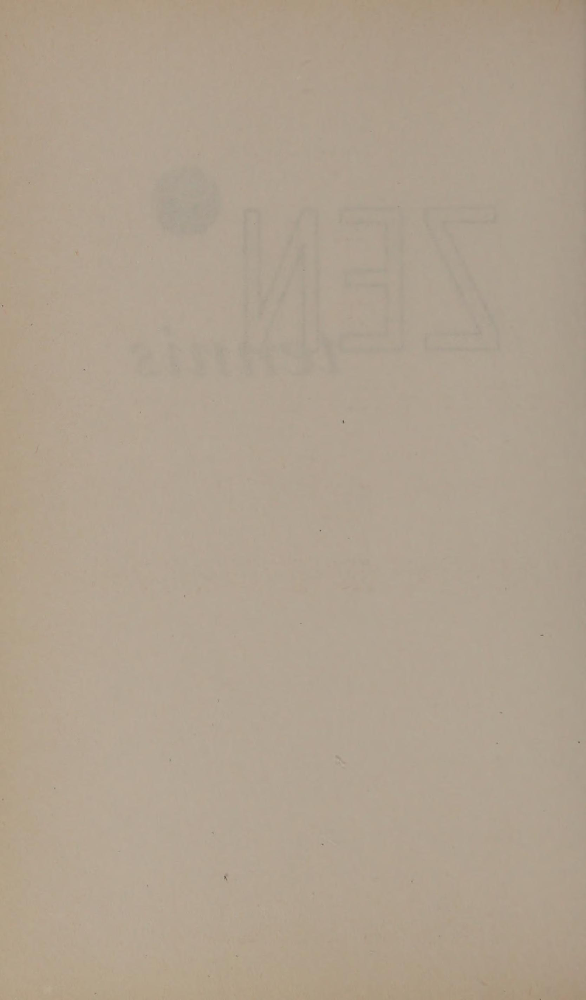
Người ta nói trong các vòng tròn thể thao rằng 90% trận đấu của anh ấy được chơi trên vai. Khi hai tay vợt có năng lực thể chất ngang nhau thi đấu, người có tâm lý mạnh nhất sẽ quyết định kết quả. Nhiều người chơi thể thao tự đặt mình vào Đà tâm lý trận đấu (momentum) nhưng lại thua vì sự nghi ngờ của chính mình. Những suy nghĩ như “Tôi không đủ giỏi” hay “Chắc chắn là tôi không thể đánh bại được người này người kia” xâm nhập vào tâm trí họ và tạo ra những hình ảnh cũng như cảm giác làm suy yếu hiệu quả công việc.
Kiểu suy nghĩ này là thách thức chính để chứng ngộ. Cảm giác về dòng chảy tiêu biểu cho trải nghiệm bị gián đoạn và khả năng hoặc tiềm năng thực sự của chúng ta không được thể hiện. Thể hiện ở mức độ thấp hơn mức chúng ta biết có lẽ là nguyên nhân lớn nhất khiến chúng ta thất vọng trong môn thể thao của mình.
Những thông điệp tiêu cực này bắt nguồn từ đâu?
Có thể làm gì để thay đổi chúng?
Khi trả lời những câu hỏi này, tôi đã rút ra ba yếu tố thiết yếu cho việc thực hành Thiền. Đây là nói đại nghi, đại tín tâm đại quyết. Cả ba đều được kết nối với nhau và củng cố hoặc ảnh hưởng lẫn nhau. Thay đổi một cái và chúng ta sẽ tự động ảnh hưởng đến những cái khác. 7
NGHI NGỜ Nghe có vẻ bất thường khi liệt kê điều này như một khía cạnh tích cực của việc thực hành trong bất kỳ lĩnh vực nào, cho đến khi chúng tôi kiểm tra xem chúng tôi đang nghi ngờ điều gì.
Sự nghi ngờ ở đây đề cập đến những niềm tin có điều kiện mà chúng ta cho là đúng về bản thân, cuộc sống của chúng ta và trong trường hợp này là quần vợt của chúng ta. Có thể nghi ngờ tính xác thực của những tuyên bố hạn chế nhận thức của chúng ta về bản thân và trò chơi của chúng ta là một tài sản to lớn. Khi chúng ta tự nói với bản thân rằng “Bạn không đủ giỏi” hoặc “Bạn sẽ không bao giờ đạt được nhiều thành tựu”, sự nghi ngờ đột nhiên trở nên có giá trị.
Đại nghi đặt câu hỏi:
Ai nói bạn không tốt?
Tại sao bạn lại tin vào tuyên bố này?
Làm sao bạn biết đó là sự thật?
Bạn có chắc không?
Tại sao bạn không thể thành công?
Khi khám phá những câu hỏi này, chúng ta thường phải thừa nhận với bản thân rằng chúng ta không biết tại sao mình lại nghĩ như vậy. Có thể đúng là “chúng ta chưa đủ giỏi” nhưng chúng ta đã thực sự tự đánh giá được điều đó chưa? Sự nghi ngờ lớn thách thức chúng ta đặt định kiến của mình sang một bên và đánh giá lại niềm tin của mình một cách trung thực. Quá trình này có thể mất thời gian và trong thời gian ngắn khiến chúng ta cảm thấy bối rối. Tuy nhiên, sự khó chịu tạm thời này có thể dẫn đến cảm nhận sâu sắc hơn nhiều về bản chất thực sự của chúng ta vì niềm tin của chúng ta trở thành kết quả từ suy nghĩ của chính chúng ta. Trong giai đoạn thử thách này, thật hữu ích khi có niềm tin lớn lao.
Điều cần thiết là chúng ta phải nhận thức được sự giao tiếp bên trong của mình vì đang tự hủy hoại bản thân mà không hề hay biết. Ý kiến, niềm tin hoặc phán đoán của chúng ta bị ảnh hưởng bởi quá trình giáo dục và điều kiện ban đầu cũng như những trải nghiệm liên tục của chúng ta. Những ý kiến hoặc phán xét này có thể mang lại sức mạnh hoặc hạn chế.
Hình thức “nghi ngờ” này dẫn đến
sự đánh giá trung thực về sự thật của chính mình, không phải là sự chấp nhận thụ động ý kiến của người khác.
NIỀM TIN Để bước vào thế giới bất định của sự nghi ngờ, việc có niềm tin vào những khả năng khác là điều quý giá. Chúng ta cần có khả năng tưởng tượng cho bản thân nhiều hơn những gì mà những thông điệp giới hạn của chúng ta gợi ý.
Niềm tin là tiếng nói bên trong trấn an chúng ta rằng tất cả đều ổn, rằng việc có sự không chắc chắn trong cuộc sống cũng không sao, đặc biệt nếu điều đó dẫn đến sự hiểu biết sâu sắc hơn về bản thân của chúng ta. Đức tin khuyến khích sự tìm tòi nhưng dạy chúng ta ngừng bám víu vào câu trả lời. Niềm tin cho chúng ta sức mạnh để chờ đợi cho đến khi chúng ta biết. Phần thưởng của đức tin là sự tin tưởng: tin tưởng vào bản thân và tin tưởng vào khả năng kỳ lạ của cuộc sống trong việc hướng dẫn đúng người, đúng tình huống và hoàn cảnh cho chúng ta.
Vào những lúc đức tin của chúng ta bị lung lay do căng thẳng do sự nghi ngờ lớn lao tạo ra, điều hữu ích là chúng ta phải kêu gọi ý chí và quyết tâm cao cả của mình.
QUYẾT TÂM Đối với một người có đức tin đang dao động như tôi, quyết tâm cao độ là điều cần thiết. Nếu sự nghi ngờ bắt đầu cuộc hành trình và niềm tin trấn an chúng ta trên đường đi, thì quyết tâm sẽ đưa chúng ta vượt qua ranh giới. Quyết tâm lớn lao củng cố quyết tâm của chúng ta để tìm ra câu trả lời cho câu hỏi của chúng ta. Nó mang lại niềm đam mê và sẽ thay đổi.
Sự quyết tâm cao độ ủng hộ câu nói rằng hầu hết những đột phá trong nỗ lực của con người đều đòi hỏi “‘chín mươi phần trăm mồ hôi và mười phần trăm cảm hứng.” Tren aN UG 1B Nghi ngờ lớn xuất phát từ tâm trí, niềm tin lớn dẫn đến trái tim và quyết tâm lớn mang lại mong muốn và ý chí để hoàn thành cuộc hành trình. Sự kết hợp các yếu tố này cung cấp một mô hình để mô tả sự thay đổi: một cánh cửa để nhìn qua bản thân đã bị quy định của chúng ta và đạt được cái nhìn sâu sắc mới về tâm lý của chúng ta.
Những khoảnh khắc thay đổi trong cuộc đời chúng ta có thể được nhìn qua lăng kính “tam đại”. Một ví dụ về cách hoạt động của sự tương tác này có thể được rút ra từ trải nghiệm ngộ của John Newcombe. (Tôi đã phân tích kinh nghiệm của John Newcombe. Anh ấy không tự điền vào phần này.) Quyết tâm lớn lao Nghi ngờ lớn Niềm tin lớn Cửa sổ của sự thay đổi
9. Cửa sổ thay đổi (The Window of Change)
Sự quyết tâm cao độ ủng hộ câu nói rằng hầu hết những đột phá trong nỗ lực của con người đều đòi hỏi “‘90% mồ hôi và 10% cảm hứng.” Tren aN UG 1B Nghi ngờ lớn xuất phát từ tâm trí, niềm tin lớn dẫn đến trái tim và quyết tâm lớn mang lại mong muốn và ý chí để hoàn thành cuộc hành trình. Sự kết hợp các yếu tố này cung cấp một mô hình để mô tả sự thay đổi: một cánh cửa để nhìn qua bản thân đã bị quy định của chúng ta và đạt được cái nhìn sâu sắc mới về tâm lý của chúng ta.
Những khoảnh khắc thay đổi trong cuộc đời chúng ta có thể được nhìn qua lăng kính “tam đại”. Một ví dụ về cách hoạt động của sự tương tác này có thể được rút ra từ trải nghiệm ngộ của John Newcombe. (Tôi đã phân tích kinh nghiệm của John Newcombe. Anh ấy không tự điền vào phần này.) Quyết tâm lớn lao Nghi ngờ lớn Niềm tin lớn Cửa sổ của sự thay đổi
CỬA SỔ CỦA JOHN NEWCOMBE
THAY ĐỔI: CUỐI CÙNG WIMBLEDON 1970
Nghi ngờ lớn
Niềm tin có điều kiện: đám đông có quyền kiểm soát anh ta, kết quả). Kết quả niềm tin
những cảm giác như thất vọng, tức giận, v.v.
Thách thức niềm tin này.
Phương pháp: tự nói: “... bạn cần thanh lọc bản thân khỏi mọi năng lượng tiêu cực.”
Niềm tin lớn lao
Cần có niềm tin
cái đó
một khả năng khác
đã tồn tại. Cần phải nghi ngờ sự thật về niềm tin có điều kiện của mình.
Niềm tin vào khả năng anh có thể kiểm soát bản thân trong những hoàn cảnh này.
Quyết tâm lớn
Được cung cấp bởi ý chí và mong muốn đạt được mục tiêu của mình. Thể hiện trong lời tự nói của anh ấy: "Bạn muốn thắng đến mức nào? Vâng, tôi rất muốn thắng! Được rồi."
Kết quả: Thổi bay mọi cảm giác tiêu cực.
Thông tin chi tiết mới
Có khả năng kiểm soát cảm xúc của chính mình.
Có thể vượt qua những con quái vật như sợ hãi, lo lắng và
thất vọng.
Khi xem xét quá trình này, có thể thấy rõ ban đầu John Newcombe đã cho phép đám đông ảnh hưởng đến cảm xúc của anh ấy và đe dọa mục tiêu vô địch Wimbledon của anh ấy như thế nào. Khi anh ấy thử thách bản thân bằng cách tự nói chuyện một cách mạnh mẽ, anh ấy đã có thể chuyển hóa những cảm xúc tiêu cực của mình và đạt được kết quả mong muốn. Điều quan trọng là anh ấy đã hiểu rõ hơn về thực tế rằng anh ấy có thể kiểm soát những con quái vật như sợ hãi, lo lắng, tức giận và thất vọng.
Trong phần tiếp theo, chúng ta sẽ xem xét kỹ hơn một chút về cách chúng ta tự nói chuyện và những phản ứng có thể có của chúng ta đối với nó. Tại sao không phải là bạn? Tại sao không phải là tôi? Thành công thuộc về ai đó Tại sao bạn lại không? Tại sao không phải là tôi? Đó là vấn đề May mắn, mong muốn hay định mệnh? Quả bóng nảy tung Xúc xắc Ý chí và cảm xúc Là nơi con đường nằm Tại sao không phải là bạn? Tại sao không phải là tôi? Có lẽ đó là May mắn, khát khao Và định mệnh Tại sao không?
10. Hội thoại nội tâm (The Internal Dialog)
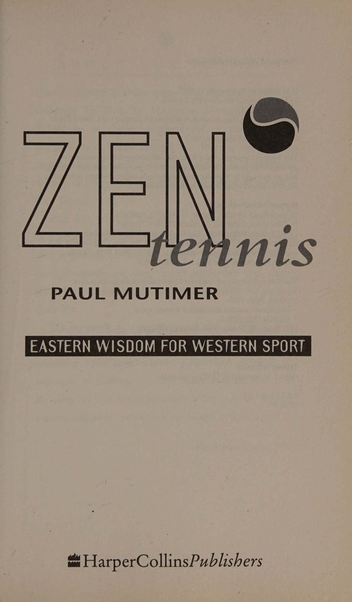
Yoda: Luke. Bạn phải học lại những gì bạn đã học được.
Luke: Không được, nó lớn quá...
Yoda: Đó là lý do tại sao cậu thất bại. (Từ The Empire Strikes Back) Phần lớn cách chúng ta giao tiếp với chính mình đều được học từ cha mẹ hoặc các thành viên trong gia đình. Quá trình này bắt đầu từ rất sớm trong cuộc sống của chúng ta để động lực, giá trị và đạo đức của chúng ta được hình thành trước khi chúng ta nhận ra điều đó. Nó giống như thể chúng ta nhìn cuộc sống qua một cặp kính màu làm nổi bật những sự kiện nhất định và loại bỏ những sự kiện khác. Điều này có thể diễn ra dưới dạng cuộc đối thoại mà chúng ta có trong chính mình. Thể thao là một phương tiện tuyệt vời để nhận thức được cuộc trò chuyện nội tâm này.
Trước đó chúng ta đã xem xét cách chúng ta có thể sử dụng sự nghi ngờ lớn như một phương tiện để thách thức những niềm tin có điều kiện này. Nó đặt câu hỏi về cuộc hội thoại nội tâm của chúng ta để nhận ra thông điệp nội tâm nào có lợi. Ví dụ, bạn có thể tự nhủ: “Nếu bạn đủ cố gắng, bạn có thể làm bất cứ điều gì bạn muốn” hoặc “Đừng bao giờ nhượng bộ”. Bạn có thể nghi ngờ bản thân dưới dạng “Tôi không đủ tốt” hoặc “Tôi không bao giờ làm được gì cả”. Một số thông điệp truyền qua tâm trí chúng ta rất to, như thể chúng đang được phát qua loa, trong khi những thông điệp khác phát ra lặng lẽ ở chế độ nền, gần như không được chú ý.
Khi chúng ta chịu áp lực cạnh tranh, cuộc hội thoại nội tâm này, một số trong đó là vô thức, được nêu bật và đưa ra bề mặt. Nếu các thông điệp tích cực và hữu ích thì chúng tôi sẽ thực hiện chúng. Tuy nhiên, bất kỳ “thông điệp nội tâm” nào mà chúng ta không thấy thoải mái sẽ phải được xử lý và sửa đổi.
Điều có thể khiến chúng ta chú ý đến họ là một trải nghiệm không thoải mái, giống như thua một trận đấu mà chúng ta dự kiến sẽ thắng. Khi suy ngẫm kỹ hơn, chúng tôi nhận ra rằng khi trận đấu đang ở thế cân bằng, cuộc hội thoại nội tâm của chúng tôi là “Bạn sẽ chẳng có ích gì nếu thua”.
Một số phản ứng có thể xảy ra đối với tình huống này là gì?
1. Tôi cảm thấy tệ nhưng quyết tâm luyện tập chăm chỉ hơn để không thua.
2. Tôi cảm thấy tồi tệ, sợ thua cuộc và bắt đầu mất động lực cũng như hứng thú với môn thể thao của mình.
3. Tôi cảm thấy tệ hại và xem xét lại suy nghĩ của mình xem có cần thay đổi không.
Chúng ta hãy xem xét ba phản ứng tiềm ẩn này khi thua một trận đấu và khám phá hộp thoại nội tâm đi kèm, “Bạn sẽ chẳng ổn nếu thua”.
1. Nếu chúng ta sử dụng cảm giác thất vọng khi thua cuộc và nỗi sợ bị phán xét khi nghe “Bạn thật tệ,” làm động lực để cải thiện trò chơi của mình, thì chúng ta sẽ thu được một số lợi ích từ trận thua. Tuy nhiên, chúng ta có thể vẫn ẩn giấu bên trong mình một sự căng thẳng nổi lên và làm suy yếu trò chơi của chúng ta khi trận đấu Kết thúc cú đánh. Chúng ta có thể cảm nhận được tiếng nói phán xét đang rình rập và cố gắng quá mức, hoặc bị thắt chặt dưới áp lực bên trong.
2. Trong kịch bản thứ hai, niềm vui và niềm vui bị lấy đi khỏi trò chơi của chúng ta và chúng ta trở nên chán nản và bỏ cuộc. Chúng ta có thể cảm thấy rằng đây là tất cả những gì chúng ta có thể làm; tuy nhiên, tại một số thời điểm, những thách thức tương tự có thể xuất hiện trong những hoàn cảnh khác nhau. Chúng ta có thể chỉ đang trì hoãn cuộc đối đầu không thể tránh khỏi.
3. Đây là lúc mà sự nghi ngờ lớn lao có thể phát huy tác dụng. Nó đặt ra các câu hỏi: - Ai nói điều này là đúng? - Tuyên bố này đến từ đâu? - Tại sao bạn nên tin vào tuyên bố này? Điều này dẫn đến quá trình được mô tả trước đó, trong đó ba “người vĩ đại” hoạt động, tạo ra cơ hội thay đổi để có thể đạt được một quan điểm mới.
lý do
cái này
lối suy nghĩ đã cố thủ và khó thay đổi là do được học từ khi còn nhỏ như vậy. Nó đã ở đó lâu đến nỗi nó cảm thấy như một phần của chúng ta. Thật khó để nhớ lại thời điểm nó không có ở đó. Chúng ta học cách phản ứng với các tình huống theo một cách nhất định trong thời gian dài đến mức hành vi của chúng ta trở nên tự động.
Hãy tiếp tục sử dụng tình huống trên làm ví dụ vì vấn đề thắng bại là trọng tâm của tình hình thể thao.
Hội thoại nội tâm: “Nếu tôi thua thì tôi không ổn.” Khi xem xét rõ ràng tuyên bố này, chúng ta cần xem xét:
Ai nói điều này là đúng?
Nó đến từ đâu?
Bạn dựa trên cơ sở nào để chấp nhận “Nếu tôi
thua tôi không ổn”?
Đã có ai nói như thế này chưa? Khi còn nhỏ, chúng ta tiếp thu những cảm xúc và suy nghĩ của những người xung quanh. Chúng ta sẽ sớm biết được loại hành vi nào mang lại phản ứng gì. Điều này sau đó củng cố trong tâm trí chúng ta những gì phải làm. Sau một thời gian, trong một số tình huống nhất định, chúng ta suy nghĩ một cách tự động đến mức chúng ta không còn cân nhắc xem liệu có lựa chọn thay thế nào hay không. Phản ứng có điều kiện này là hiển nhiên trong thế giới động vật. Ở Ấn Độ, khi voi còn nhỏ, một đầu của sợi dây được buộc vào chân nó và đầu kia vào một cái cây chắc chắn. Con voi con cố gắng thoát ra nhưng không được. Nó cảm nhận được sự cản trở đối với những nỗ lực của mình và cuối cùng liên kết cảm giác sợi dây ở chân với việc không thể di chuyển. Sau một thời gian củng cố tình trạng này, sợi dây có thể nhẹ hơn và có thể sử dụng một cây nhỏ hơn. Mặc dù lúc này con voi có thể dễ dàng làm đứt dây hoặc bẻ cây, nhưng nó vẫn nhận ra cảm giác bị kéo ở chân và không cử động.
May mắn thay, là con người, chúng ta không bị giới hạn trong việc sống với điều kiện của mình. Vào thời điểm tìm hiểu những câu trả lời này, chúng ta có thể cảm thấy như có rất ít sự lựa chọn, nhưng bây giờ khi đã trưởng thành, mọi thứ có thể khác. Bằng cách thách thức niềm tin của mình, việc chúng ta thay đổi chỉ là vấn đề thời gian.
Hãy kiên nhẫn với chính mình. Khía cạnh cảm xúc của những niềm tin này có thể mất thời gian để buông bỏ.
Khẳng định
OME AE
SDOCR INE Nếu bạn nhận thức được một thái độ cần điều chỉnh thì bạn có quyền bắt tay vào thực hiện. Đôi khi sự thay đổi tinh thần xảy ra gần như ngay lập tức trong khi những lúc khác thì cần phải luyện tập hàng giờ. Sự phát triển các kỹ năng tinh thần trong quần vợt hoạt động tương tự như các kỹ năng thể chất. Hãy tiếp cận họ như thể đó là một cú đột phá khác, gọi là “động lực tinh thần”.
Một khía cạnh của động lực tinh thần này là việc sử dụng các lời khẳng định. Đây là những câu nói tích cực mà chúng ta sử dụng để củng cố những thông điệp nhất định mà chúng ta cần nghe. Bằng cách lặp lại chúng với chính mình, dù ở bên trong hay bên ngoài, chúng ta thách thức mọi ý tưởng ngược lại nằm trong tiềm thức của mình. Sự lặp lại sẽ đẩy suy nghĩ tiêu cực lên bề mặt và cuối cùng ra khỏi hệ thống của chúng ta. Ví dụ, nếu bạn có niềm tin “Tôi không giỏi thể thao”, được chôn sâu bên trong để tạo ra sự khẳng định, “Tôi giỏi thể thao”, sẽ đẩy thông điệp tiêu cực lên bề mặt để được xem xét. Cuối cùng thì bạn có thể thấy rằng niềm tin cũ không còn đúng nữa.
Nếu bạn nhận thức được sự cần thiết phải xây dựng một niềm tin mới thì bạn sẽ làm gì? Bạn đã nhận thức được rằng bạn cần củng cố một niềm tin mới. Bạn đã rõ cái cũ là gì, vậy làm cách nào để chúng ta phát triển và sử dụng cái mới để đạt được lợi ích tối đa?
Bắt đầu bằng việc viết ra niềm tin mới. Đó có thể là: - Tôi thoải mái trước áp lực - Tôi kiểm soát được bản thân - Tôi là một người có giá trị - Tôi tập trung vào “ở đây và bây giờ” Tâm là một tay vợt xuất sắc - Tôi có một cú Cú trái tay (backhand) tuyệt vời
Khi viết nó viết ở thì hiện tại, như thể
bạn đã có thái độ này rồi. Ví dụ: tôi Sự tự tin” hoặc “Tôi thư giãn trước áp lực”.
Viết nó lên một tấm thẻ và đặt nó ở nơi bạn thường xuyên nhìn thấy. Cũng giống như cách quảng cáo củng cố thông điệp bằng cách liên tục hiển thị chúng trên màn hình, chúng ta có thể tiếp thu thông điệp chỉ bằng cách để nó ở xung quanh mình. Mang theo tấm thiệp có thông điệp của bạn lên sân tennis. Hãy để nó trong túi của bạn để bạn có thể đọc nó khi đổi sân. Điều này có thể giúp tập trung tâm trí của bạn. Bạn thậm chí có thể thử viết niềm tin mới của mình dưới dạng thơ. Tôi viết “Giấc mơ lửa” khi đang vật lộn với ý tưởng rằng mình có thể thành công. Lửa đỏ Lửa trong bụng Lửa trong tâm trí Tiếp nhiên liệu cho trí tưởng tượng Thắp sáng tâm hồn kẻ mộng mơ Đôi khi Mặt trời rực rỡ Sống động trong chiến thắng, Ở người khác Một tia lửa trong tro tàn Của thất bại và tổn thương Dù đứng trên bục Cho cả thế giới nhìn thấy Hay nhìn vào Cảm giác lạc lõng Cô đơn và trống rỗng Một điều chắc chắn Một khi tầm nhìn đã thắp sáng Ngọn lửa sẽ không bao giờ tắt Giấc mơ đập mãi mãi trong trái tim Bạn và tôi Đốt cháy trong bụng Lửa trong tâm trí Tiếp nhiên liệu cho Trí tưởng tượng đốt cháy tâm hồn của người mơ mộng
11. Sử dụng ước mơ và trí tưởng tượng (The Use of Dreams and Imagination)
Điều gì sẽ xảy ra nếu bạn ngủ, và nếu trong giấc ngủ bạn mơ, và điều gì sẽ xảy ra nếu trong giấc mơ bạn lên thiên đường
và bạn đã hái một bông hoa đẹp và lạ
và điều gì sẽ xảy ra nếu khi bạn thức dậy bạn có
bông hoa trên tay bạn?
Ồ, thế thì sao? Samuel Taylor Coleridge Quần vợt, giống như tất cả các lĩnh vực thành tích hoặc thể hiện bản thân, có những khía cạnh lặp đi lặp lại và có tính kỷ luật. Cần phải dành nhiều giờ để lặp lại các khía cạnh kỹ thuật của nét vẽ để tạo ra chúng một cách tự động. Nó đòi hỏi sự cống hiến và cam kết để đạt được trình độ thành thạo cao.
Nhiều người đặt ra mục tiêu để thành công. Họ thường vạch ra các bước hợp lý, mạch lạc để đạt được kết quả mong muốn. Tuy nhiên, nếu mục tiêu họ đặt ra không kích thích họ, nếu nó không kích thích trí tưởng tượng của họ thì việc đạt được mục tiêu đó sẽ là một bài tập vô hồn máy móc. Những người khác bắt đầu nhiệt tình nhưng vì nhiều lý do khác nhau lại mất đi niềm vui ban đầu. Trong quần vợt, áp lực thi đấu từ khi còn nhỏ đã làm giảm hứng thú của nhiều tay vợt trẻ. (Để ngăn chặn tình trạng kiệt sức xảy ra, Giải đấu dành cho nữ gần đây đã ra phán quyết rằng không một tay vợt nào có thể trở thành tay vợt chuyên nghiệp toàn thời gian cho đến khi họ đủ mười sáu tuổi.)
Tại sao một số người lại thấy việc không ngừng phấn đấu là trở ngại cho sự tiến bộ của họ trong khi những người khác lại tỏ ra thích thú với điều đó? Tôi tin rằng đây là lúc điều quan trọng là phải có khả năng mơ ước, tưởng tượng và giữ liên lạc với sự phấn khích mà họ tạo ra.
Đến
thấm nhuần
niềm đam mê, sự nhiệt tình, sự sáng tạo tự phát trong việc đặt ra mục tiêu, chúng ta cần “mơ” và tưởng tượng mình đạt được và trải nghiệm những kết quả trong tương lai này. Bằng cách kết hợp trí óc phân tích với quá trình tưởng tượng, chúng ta đang huy động cả hai bán cầu não và do đó đạt được một cách tiếp cận tổng thể.
TL pH gE AUP
Av GAlST Nok Ook CUM dske DUR EON eT xOs bleMeAcGoliN Chúng ta chỉ cần quan sát trẻ em chơi để nhận ra trí tưởng tượng của chúng hoạt động mạnh mẽ như thế nào. Khả năng sáng tạo và tham gia vào thế giới tưởng tượng dường như là một khía cạnh cố hữu của tuổi thơ.
Khả năng tưởng tượng của trẻ em đã được tôi bộc lộ rõ ràng khi một trong những khách hàng của tôi yêu cầu tôi huấn luyện cậu con trai năm tuổi của anh ấy. Đây là một thử thách mới đối với tôi vì tôi đã huấn luyện chủ yếu cho người lớn trong mười năm trước. Không muốn tạo gánh nặng cho cậu bé về việc hướng dẫn kỹ thuật, tôi cố gắng làm cho bài học trở nên thú vị, nhưng sau một thời gian, tôi nhận ra rằng cậu bé đã mất tập trung không phải vì xem bóng.
Tôi gợi ý với anh ấy rằng khi quả bóng nảy lên, anh ấy có thể hét lên “Có”. Ngay từ đầu, cậu ấy đã làm điều này một cách vui vẻ, có lẽ thích thú khi một người lớn yêu cầu cậu ấy gọi ra điều gì đó thay vì cố gắng khiến cậu ấy im lặng.
Sau vài tiếng đồng ý cực kỳ ồn ào, tôi nghĩ sẽ rất vui nếu anh ấy tự mình nghĩ ra điều gì đó để gọi. Tôi hỏi anh ấy liệu anh ấy có muốn làm điều đó không. “Chắc chắn rồi,” anh ấy nói, “tôi đã nghĩ đến điều gì đó rồi.” Không cần hỏi anh ấy đang nghĩ gì, tôi chuẩn bị đánh quả bóng tiếp theo. Anh ta định hét lên điều gì? Tôi chỉ hy vọng anh ấy sẽ không chửi thề bằng sức lực của mình.
Tôi đánh bóng và hồi hộp chờ đợi cú nảy. Tôi không thể tin được khi câu “Tôi là một vận động viên quần vợt cừ khôi” được đáp lại ở nốt cao nhất. Đó là sự thể hiện không hề xấu hổ về cách anh ấy nhìn nhận bản thân và là một lời khẳng định cực kỳ mạnh mẽ. Lúc đó trong tâm trí anh không còn nghi ngờ gì nữa rằng anh đã tưởng tượng mình là một tay vợt cừ khôi. Hình ảnh như vậy của bản thân đã tạo nên niềm tin lớn lao vào bản thân.
Có bao nhiêu người lớn sẽ thích thú với hình ảnh này, nhìn nhận bản thân theo cách này và cho phép mình thể hiện nó một cách cởi mở? Ngay cả những người đã cho phép suy nghĩ này có thể loại bỏ nó rất nhanh bằng một câu khác như, 'Đừng lố bịch! hoặc “Hãy thực tế!” Sự nghi ngờ của chúng tôi sẽ không cho phép chúng tôi có được sự xa hoa của những hình ảnh này. Mặc dù không muốn lừa dối bản thân về khả năng của mình nhưng điều quan trọng không kém là cho phép bản thân tận hưởng những khả năng mà chúng ta tưởng tượng. Ô Re DDT Sy 190
S$ ESO TNE
NHƯ. eePerrye
—D LÀ ESAGM Chúng ta có ngừng mơ ước vì ký ức về việc không đạt được mục tiêu ban đầu rất đau đớn và khiến chúng ta không dám mạo hiểm để thử lại không? Trí tưởng tượng và những giấc mơ phóng đại và làm nổi bật cảm xúc của chúng ta và do đó, vốn có trong việc sử dụng trí tưởng tượng là khả năng gây hưng phấn tột độ và thất vọng sâu sắc.
Bằng cách để tâm trí trôi về tương lai và tưởng tượng điều gì đó lớn lao hơn và tốt đẹp hơn cho bản thân, chúng ta đồng thời nạo vét những trải nghiệm trong quá khứ của mình. Nếu chúng ta cho phép mình nuôi dưỡng hình ảnh một tay vợt vĩ đại thì chúng ta sẽ cần phải đối mặt với những nỗi sợ hãi và nghi ngờ rằng hình ảnh này có thể gây khó chịu. Đây thường là kết quả của những trải nghiệm và ký ức trong quá khứ và chứa đựng cảm xúc tiêu cực mạnh mẽ. Để mơ ước thành công về tương lai, chúng ta cần phải đối mặt với quá khứ, buông bỏ gánh nặng cảm xúc gắn liền với nó và thay thế những hình ảnh không mong muốn.
12. Tâm trí tạo nên bản đồ (The Mind Creates the Map)
Để giữ liên lạc với những giấc mơ của chúng ta, điều hữu ích là phải có những bước đi rõ ràng, có thể đạt được và những biển chỉ dẫn trên đường đi. Hãy nhớ giấc mơ cung cấp nhiên liệu cảm xúc cho cuộc hành trình, tâm trí tạo ra bản đồ. Khi đặt ra những mục tiêu này, việc chia chúng thành những phần có thể quản lý được sẽ rất hữu ích. Tôi đã thực hiện điều này trong Bản đồ giấc mơ (xem trang 73). Đầu tiên, hãy mơ về mục tiêu lớn của bạn; đừng đạp phanh. Cho phép trí tưởng tượng của bạn được tự do phát huy. Nếu có điều gì đó chợt đến trong đầu bạn, hãy đặt nó xuống và lo lắng về tính thực tế của nó sau.
Nếu bạn đang thực hiện giấc mơ quần vợt của mình, một ví dụ rõ ràng là giấc mơ" sẽ vô địch Wimbledon. Tuy nhiên, đối với hầu hết chúng ta, giấc mơ lớn có thể là giành chức vô địch câu lạc bộ. Điều này có thể giống với Wimbledon đối với chúng ta. Vì lợi ích của bài tập, chúng ta sẽ coi việc giành chức vô địch câu lạc bộ là giấc mơ của mình và làm theo các bước cần thiết làm ví dụ.
Sau khi đã quyết định về ước mơ của mình, hãy vẽ một biểu tượng hoặc hình ảnh đại diện cho ước mơ đó. Hãy thử và làm cho điều này thú vị. Khi tôi đề nghị làm điều này, nhiều người co rúm người lại và nói rằng họ không thể vẽ. Hãy nhớ để đứa trẻ sáng tạo bên trong của bạn ra ngoài chơi. Hình ảnh có thể là thứ gì đó hiển nhiên như một chiếc cúp hoặc bạn có thể thể hiện giấc mơ này bằng một biểu tượng trừu tượng. Nếu bạn đang gặp khó khăn trong việc nảy ra ý tưởng, bạn có thể tìm thấy điều gì đó phù hợp trên tạp chí. Khi bạn đã quyết định chọn hình ảnh, hãy đặt nó ở nơi bạn có thể nhìn thấy thường xuyên. Nó có thể ở gần gương phòng tắm, trên tủ lạnh hoặc thậm chí là bảng điều khiển ô tô của bạn. Việc nhìn thấy nó thường xuyên sẽ giúp bạn kết nối với ước mơ của mình.
Bây giờ hãy tưởng tượng một số lợi ích của việc đạt được điều này. Hãy cảm nhận sự phấn khích mà những thay đổi này sẽ mang lại!
Trước khi tiếp tục, hãy tưởng tượng lợi ích của việc đạt được nó.
• Nó có nghĩa là gì?
• Điều đó có nghĩa là bạn đã chinh phục được nhiều nỗi sợ hãi và nghi ngờ?
Liệu nó có giúp bạn Sự tự tin hơn trong mọi lĩnh vực của cuộc sống không?
• Điều đó có nghĩa là bạn đã đạt được mức thể lực mà trước đây bạn chưa từng đạt được phải không?
Đây có phải là cơ hội để thể hiện ý thức cam kết sâu sắc hơn đối với mục tiêu không?
Tiếp theo, hãy tạo cho mình một biển chỉ dẫn cho biết bạn đang trên đường đến. Hãy tưởng tượng hoặc nghĩ về điều gì đó mà bạn có thể đạt được trong một tháng, điều đó cho thấy rằng bạn đang thực sự đi đúng hướng.
Đi ngược lại, sử dụng ví dụ của chúng tôi về việc giành chức vô địch câu lạc bộ, điều gì sẽ là dấu hiệu trong một năm nữa cho thấy bạn đang trên đường đạt được ước mơ của mình? Phải chăng tại giải vô địch câu lạc bộ năm nay, bạn sẽ tiến được một chặng xa hơn trước? Đó có thể là đánh bại một người chơi mà bạn chưa từng đánh bại? Chúng tôi giả định rằng ước mơ/mục tiêu của bạn sẽ mất hơn một năm để đạt được nhưng bạn có thể đạt được điều đó nhanh hơn bạn mong đợi. Nếu điều này xảy ra rõ ràng bạn sẽ cần phải mơ lại mục tiêu của mình. Dấu hiệu sáu tháng của bạn có thể là gì? Nếu bạn đã chơi quần vợt cạnh tranh, bạn có thể chơi tốt hơn. Nếu trước đây bạn chưa từng chơi cùng một đội nào thì đây sẽ là một mục tiêu tuyệt vời để hướng tới.
Của bạn
một tháng
ký hiệu
đạt được bước đột phá về chuyên môn kỹ thuật của bạn. Bạn có thể cải thiện cú giao bóng thứ hai của mình hoặc có được Cú trái tay (backhand) tay Xoáy lên mà bạn luôn mơ ước. Bạn có thể thử thách bản thân để cảm thấy thoải mái hơn trên lưới.
Bây giờ đến phần chi tiết nhất để đạt được ước mơ của bạn!
HÀNH ĐỘNG
BƯỚC Đây là một phần cực kỳ quan trọng của quy trình. Bạn có thể làm gì trong tuần này để góp phần đạt được mục tiêu hàng tháng của mình? Làm cho các bước này có thể đạt được. Nếu bạn tạo ra điều gì đó quá khó khăn, bạn có thể mất đi Sự Sự tự tin hoặc động lực. Điều quan trọng là phải ghi ngày, ký tên và nhờ người chứng kiến tờ này. Việc lập hợp đồng với chính mình sẽ củng cố cam kết của bạn với mục tiêu của mình. Khi chọn ai đó làm chứng cho những mục tiêu và bước hành động này, hãy xem liệu bạn có thể tìm được ai đó quan tâm đến việc theo dõi quá trình này trong ít nhất sáu tháng hay không. Bạn cần loại người nào? Ai đó hành động như một cơ quan giám sát? Ai đó khuyến khích và hỗ trợ bạn?
Khi mới bắt đầu viết, tôi đã tổ chức một cuộc gặp thường xuyên với một người bạn, người đã thách thức tôi theo kịp các bước hành động mà tôi đã đặt ra.-Việc có một thời gian xác định mỗi tuần đã cho tôi một cơ cấu để làm việc. Làm quen với việc đánh dấu các bước khi bạn thực hiện. Giữ nó ở nơi thuận tiện để bạn nhắc nhở bản thân về mục tiêu của mình. Rõ ràng là khi bạn đang thiết lập các bước hành động hàng tuần, bạn sẽ cần dành thời gian cho nó hàng tuần. Giữ các tờ giấy cũ của bạn trong một thư mục để có thể xem lại tiến trình của bạn. Vào cuối mỗi tháng, hãy đặt lại mục tiêu hàng tháng của bạn và kiểm tra xem bạn có cảm thấy mình đang đạt mục tiêu để đạt được mục tiêu sáu tháng hay không. Nếu không sửa đổi nó.
Mặc dù bản thân việc đạt được mục tiêu của mình là một cảm giác tốt nhưng nó có thể hữu ích và đóng vai trò như một động lực để khen thưởng. bản thân để đạt được các bước của bạn trên đường đi. Hợp đồng này với chính bạn có thể giúp củng cố các mục tiêu của bạn. Bằng cách dành thời gian và công sức để viết nó ra và nhờ ai đó chứng kiến, bạn sẽ bắt đầu tạo cho giấc mơ một hình dạng hoặc hình thức. Những gì trước đây là một ý tưởng hay đã chuyển từ tâm trí bạn ra thế giới bên ngoài
Khía cạnh phần thưởng là tùy chọn. Mặc dù việc đạt được các mục tiêu có thể là phần thưởng xứng đáng đối với một số người, nhưng những người khác có thể tự thúc đẩy bản thân bằng cách quyết định rằng việc đạt được các mục tiêu nhất định xứng đáng được ghi nhận đặc biệt. Điều này vẫn có thể liên quan đến các mục tiêu chính đã đặt ra. Ví dụ, phần thưởng có thể là một cây vợt tennis mới, một bài học tennis hoặc thậm chí là một kỳ nghỉ dưỡng tennis hoặc cuối tuần.
DREAM Trạng thái thăng hoa (The Zone) của giấc mơ Giấc mơ Vẽ một biểu tượng để tượng trưng cho nó Hãy tưởng tượng một số lợi ích của việc đạt được Danh sách giấc mơ này: 1 2 Một tháng Sáu tháng Mười hai tháng Các bước hành động 1 2 3 Ngày Đánh giá nhân chứng đã ký: Phần thưởng (nếu cần):
13. Ước mơ không bao giờ tắt (Dreams Don't Die)
Khi đặt ra các mục tiêu thể thao, chúng ta có thể đạt đến độ tuổi mà chúng ta thực sự phải đối mặt với sự thật rằng chúng ta có thể không phải là nhà vô địch Wimbledon. Tuy nhiên, chúng ta vẫn có thể chọn những ước mơ và mục tiêu thách thức những quá trình tương tự. Chúng ta có thể làm điều đó trong một lĩnh vực thể thao hoặc chúng ta có thể đặt cho mình ước mơ đạt được sự xuất sắc trong một lĩnh vực hoàn toàn khác. Không thể tránh khỏi, chúng ta phát hiện ra rằng những thái độ và suy nghĩ tương tự đã ngăn cản chúng ta đạt được mục tiêu thể thao lại được khơi dậy. Không bao giờ là quá muộn để tham gia vào trải nghiệm của giấc mơ.
Khi tôi có ý tưởng viết cuốn sách này, tôi biết rằng sẽ cần rất nhiều sự kiên trì, trước hết là để thực sự viết nó và thứ hai là được nhà xuất bản đồng ý. Vì vậy, để theo dõi quả bóng, tôi quyết định làm bìa cho cuốn sách. Một điều sẽ làm tôi phấn khích. May mắn thay, qua một cuộc gặp gỡ tình cờ, chuyện đó đã xảy ra. Sau khi có được bức ảnh ưng ý, tôi đã đóng khung nó. Tôi treo nó lên tường văn phòng của mình để mỗi ngày tôi củng cố sự thật rằng điều này sắp xảy ra. Hai năm sau đó nó đã làm được.
Tuy nhiên, vì nhà xuất bản có hình ảnh và mục tiêu khác nên trang bìa mà tôi hình dung cần phải thay đổi. Ai có thể tranh luận với một nhà xuất bản? Nhưng, yếu tố quan trọng là quá trình gắn bó với ước mơ đã giúp nó trở thành hiện thực. Hành trình Tưởng tượng Buông bỏ dây buộc Đi theo dòng chảy Hành trình bắt đầu Đích đến ở đâu? Một mình cầm lái Của sự phấn khích và sợ hãi Thủy triều, dòng chảy, gió Bạn bè và kẻ thù của thiên nhiên Sao và mặt trăng Mang đi Dù lạc trên biển Hay đất liền ho! Cưỡi từng con sóng Trên cao hay dưới thấp Nhắm mắt lại để nhường chỗ Nơi nào đó để đi Cạnh đôi của trí tưởng tượng Chính là điều khiến nó trở nên như vậy.
PHẦN 3: THÂN THỂ (BODY)
14. Nhận biết và kiểm soát (Awareness and Control)
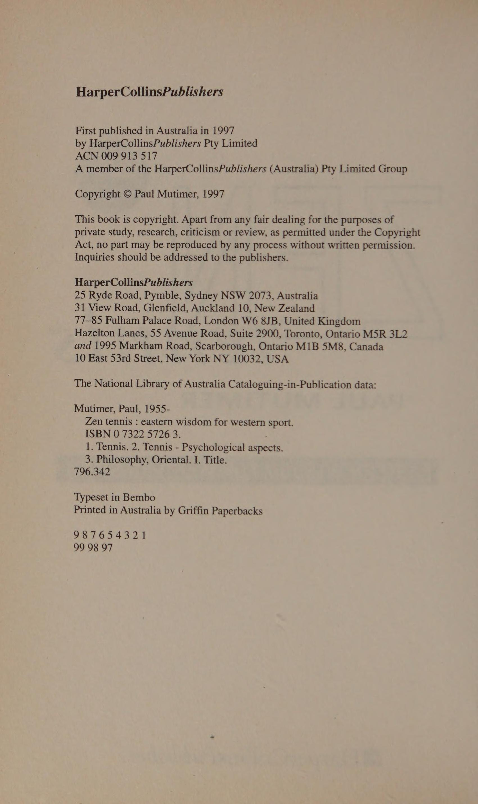
Trong thể thao, trải nghiệm ngộ thường được đặc trưng bởi cảm giác thư giãn về thể chất. Các chuyển động được mô tả là trôi chảy, trôi chảy, có kiểm soát và tự nhiên.
Nếu đúng như vậy thì việc có thể theo dõi và điều chỉnh độ căng trong cơ thể khi chơi là điều cần thiết. Các bài tập trong chương này được thiết kế để nâng cao nhận thức về trạng thái cơ thể của bạn và có nhiều lựa chọn hơn trong việc kiểm soát nó.
THỨC THỨC
ES S° A ND Cl ON Khi chơi thể thao rất dễ bị siết chặt mà không nhận ra. Vì vậy, điều quan trọng là phải thường xuyên kiểm tra xem điều này có xảy ra hay không. Nói với cơ thể bạn thư giãn là có lợi. Tuy nhiên, đó là hướng dẫn chung chung nên bạn có thể không đạt được bất kỳ kết quả rõ ràng nào. Đây là lúc bạn nên tận dụng vùng cơ thể tiếp xúc với vợt: bàn tay của bạn.
Hãy nghĩ về những lần bạn chơi một “cú đánh tốt”, nghĩa là nó đã mang về chiến thắng và có vẻ ổn đối với người quan sát. Tuy nhiên, bản thân bạn lại không cảm thấy hài lòng về điều đó. Thông thường lý do là bạn không cảm thấy có sự kết nối với cảnh quay. Bạn có thể phát hiện ra, nếu bạn theo dõi chặt chẽ lối chơi của mình, rằng có lực căng nào đó ở cánh tay, vai hoặc bàn tay khiến bạn không thể cảm nhận được bóng đang chạm vào vợt của mình.
Khi bóng chạm vào vợt của bạn, nó sẽ rung lên và cảm giác này rất quan trọng. Nói chung, nó không được ghi nhận là một cảm giác có ý thức, theo sau là suy nghĩ, "Ồ, quả bóng đang chạm vào vợt của mình". Tuy nhiên, nếu tay cầm bị siết quá chặt thì bạn sẽ chặn mọi cảm giác và không cảm thấy có liên quan đến cú đánh. Do đó, bạn không cảm thấy kiểm soát được cú đánh hoặc cảm thấy hài lòng về cú đánh.
GIÁM SÁT
CĂNG THẲNG Hãy bắt đầu khóa huấn luyện nhận thức về cơ thể này trong các buổi luyện tập của bạn. Nhờ ai đó đánh Bóng ngon ăn (sitter) dàng vào bạn để bạn có thể bắt đầu theo dõi độ căng ở tay cầm mà không chịu quá nhiều áp lực. Hãy chú ý đến sự căng thẳng ở các giai đoạn khác nhau của cú swing và đợt phục hồi. Quan sát xem bàn tay của bạn đang làm gì khi Kết thúc cú đánh cú Vung vợt ra sau (lấy đà), khi bạn tiếp xúc với bóng và khi bóng ở đầu bên kia.
Thử nghiệm khoảnh khắc đánh bóng bằng cách sử dụng các mức độ căng khác nhau ở tay. Nếu bạn không chắc mình có căng thẳng hay không, hãy tạo sự tương phản cho bản thân bằng cách siết chặt tay vào vợt rồi thả ra. Bài tập này thường giúp bạn có thể tìm được độ căng chính xác. Bằng cách giữ một số nhận thức về khả năng nắm bắt, bạn có thể ngăn trò chơi của mình “vượt quá tầm kiểm soát”.
Hãy thử và phát triển thói quen thả lỏng tay cầm vợt một cách có ý thức sau mỗi lần đánh để bạn hạn chế khả năng căng thẳng dần dần tích tụ. Khi luyện tập, bạn sẽ bắt đầu nhận ra nhanh hơn những thời điểm bạn bắt đầu phản ứng với một số suy nghĩ hoặc cảm giác bằng cách nắm chặt vợt của mình.
Một lần
có
đã đạt được
cái này
nhận thức, trải nghiệm kết quả của việc thắt chặt, rất có thể bạn sẽ có động lực để thay đổi. Ít nhất bây giờ bạn có một sự lựa chọn. Bạn có thể tiếp tục đánh với lực căng hoặc xem điều gì sẽ xảy ra nếu bạn thả lỏng tay cầm. Đừng mong đợi bản thân lúc nào cũng “buông bỏ”. Có thể mất thời gian để có được Sự Sự tự tin để tin tưởng vào quá trình này. Đừng phán xét bản thân nếu bạn thắt chặt. Sử dụng thông tin và phản hồi để trợ giúp lần sau. Hãy kiên nhẫn.
Đôi khi bạn có thể cảm thấy rằng ngay cả khi tay bạn được thư giãn nhưng bạn vẫn căng thẳng. Điều này là có thể. Tôi đã đưa vào các bài tập khác trong chương này để giúp giải quyết vấn đề này. Tuy nhiên, nhận được phản hồi về độ căng của tay là một khởi đầu tuyệt vời để bạn đạt được nhận thức và kiểm soát cơ thể. S) HD WiAO NSD ede Bak Khi người chơi nhận thức được liệu họ có căng thẳng hay không, họ có thể bắt đầu đánh giá lỗi của mình về việc liệu chúng có trôi chảy hay không hoặc liệu chúng có trở nên quá cứng nhắc hay không. Nếu họ nhận ra rằng một sai lầm nào đó là do căng thẳng cơ thể, phản ứng thông thường là tự nhủ trong đầu “thư giãn và đánh xuyên qua quả bóng”. Bản thân điều này đã là một lời khuyên hữu ích. Tuy nhiên, hướng dẫn này có thể được tiến thêm một bước nữa và đó là bằng cách thực sự thực hiện một cú vung thực hành giống hệt như cái mà bạn đang gợi ý.
Khi
lấy
cái này
cú vung vợt
(rõ ràng
giữa các điểm), nó sẽ ghi nhớ mạnh mẽ hơn trong trí nhớ của bạn nếu nó có thể được thực hiện với sự chú ý hoàn toàn của bạn vào cảm giác. Vì vậy, khi được yêu cầu, nhiều khả năng nó sẽ giống với kiểu đánh mà bạn mong muốn. Thậm chí hãy thử làm điều này khi nhắm mắt lại để loại bỏ những kích thích không cần thiết. Học cách đăng ký và tin tưởng cảm giác này là vô cùng có lợi. Thay vì tiếp cận quả bóng với tâm trạng bối rối, chúng ta có thể cho phép một cảm giác cụ thể nào đó xuất hiện.
Trong truyền thống Thiền, thầy thường thể hiện một kỹ năng mà đệ tử quan sát và cố gắng lặp lại. Sai lầm được coi là một khía cạnh cần thiết của việc học và việc dạy bằng lời nói được giữ ở mức tối thiểu.
Tôi có thể nhớ lại một bài học quần vợt mà người mà tôi huấn luyện là một người cầu toàn. Sau mỗi lần mắc lỗi, cô ấy lại hỏi: “Tôi đã làm gì sai?” Lúc đầu, tôi gợi ý với cô ấy rằng cô ấy đang làm tốt và cô ấy chỉ cần thư giãn và đánh bóng. Nhưng cô không thể kiềm chế được và không lâu sau cô đã hỏi: “Sau đó thì sao?”
Tôi hít một hơi, cưỡng lại ý muốn cung cấp thêm thông tin cho cô ấy và nói, “Quả bóng đã đi ra ngoài vạch.”
"Vậy à? Đây có phải là thứ tôi trả cho bạn không?" cô ấy nói.
đã trả lời:
Cô ấy nhìn tôi hơi khó chịu cho đến khi nở một nụ cười yếu ớt khi cô ấy nhận ra rằng tôi đang chống lại sự thôi thúc làm cô ấy bối rối.
NỘI BỘ
RE: EVER EON Cre? Pee Pes Một khía cạnh quan trọng khác của nhận thức về cơ thể là cảm thấy rằng các kích thước của sân là một phần của bạn hơn là trải nghiệm chúng như một thứ gì đó bên ngoài. Ý tôi muốn nói ở đây là nhiều người chơi, chẳng hạn, đánh bóng ngắn: mọi lúc, như thể đường biên bằng cách nào đó đang kiểm soát hành vi của họ. Nó giống như đang nói "Đừng đánh bóng gần tôi hoặc người khác.' Vì vậy, chúng ta tiếp tục đánh bóng ngắn. Nếu đôi khi chúng ta mạo hiểm đánh bóng dài, chúng ta sẽ có một điểm tham chiếu bên trong cho chúng ta biết cảm giác như thế nào khi đánh bóng sâu. Khi có cảm giác đó bên trong, chúng ta có thể tham khảo nó để định hướng thay vì bị các yếu tố bên ngoài đe dọa. Cần phải đánh bóng lâu để có kinh nghiệm và kiến thức về cảm giác đó.
15. Bạn có thực sự gác lại công việc văn phòng? (Are You Really Leaving the Office Behind?)
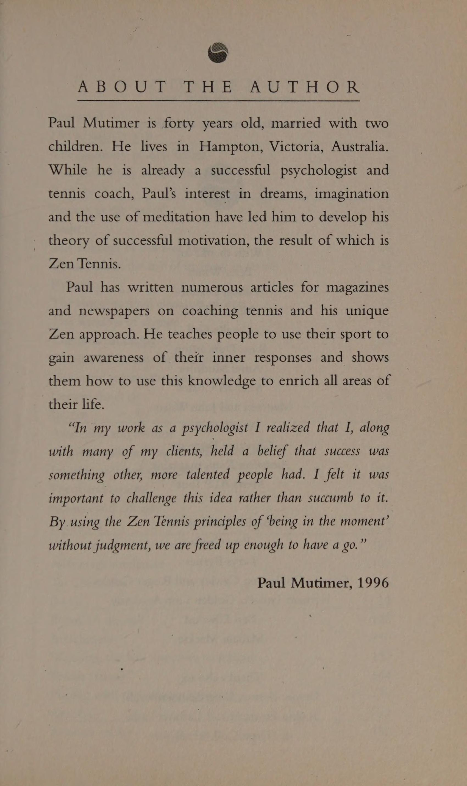
Trong thế giới kinh doanh có rất nhiều áp lực để giành chiến thắng và không phạm sai lầm. Mọi người luôn thúc ép bản thân. Cuộc sống của họ thường thấm nhuần cảm giác cấp bách lan tỏa theo năm tháng cho đến khi cơ thể họ trở nên căng thẳng dưới áp lực không ngừng nghỉ đó.
Nhiều doanh nhân chuyển sang chơi quần vợt như một phương tiện để giải tỏa căng thẳng và có một mục tiêu khác. Tuy nhiên, khi ra sân, họ có thể cư xử giống như khi ở văn phòng: nóng nảy, tức giận và căng thẳng. Môn thể thao của họ trở thành một phần mở rộng thái độ của họ đối với công việc.
Điều này được chứng minh khi tôi đang huấn luyện một doanh nhân bốn mươi tuổi, người chưa bao giờ chơi quần vợt trước đây. Trong bài học đầu tiên của anh ấy, tôi đã cho anh ấy một bài tập đơn giản - tôi đánh một quả bóng chậm về phía sân của anh ấy và anh ấy phải trả lại nó. Anh ấy đánh bóng với một cú đánh hợp lý. Tôi nghĩ, “Điều đó không quá tệ.” Nhưng bóng đã đi ra ngoài. Anh ta phát ra một tiếng hét khủng khiếp. Tôi nghĩ anh ấy đã bị căng cơ. Tôi lao tới chỗ anh ấy và nói, "Anh đã làm gì vậy?" Quay lưng về phía tôi, anh ấy trả lời: "Bạn không thấy bóng đã ra ngoài rồi sao!"
Tôi mất khoảng một phút để trả lời. “Anh hét lên vì cú đánh nổ à?” Tôi hỏi.
“Có,” anh ấy nói. “Những gì bạn chỉ cho tôi quá đơn giản và tôi không thể làm được.”
Tôi đánh anh ta thêm vài quả bóng nữa và anh ta coi mỗi quả bóng như một quả lựu đạn sống. Tôi bắt đầu đổ mồ hôi. Tôi nghĩ: “Nếu anh ấy không lên cơn đau tim trong vài phút tới thì tôi sẽ làm vậy”. Cuối cùng, tôi dừng bài học, bước đến chỗ anh ấy và nói: “Nào, chúng ta đi dạo nhé.” Khi chúng tôi đi bộ, tôi hỏi anh ấy cảm thấy thế nào vào lúc này. Anh ấy trả lời rằng anh ấy cảm thấy căng thẳng và thất vọng. “Đây có phải là điều bạn muốn trong thời gian rảnh rỗi không?” Tôi hỏi.
Mặc dù không thể nghi ngờ mong muốn chơi quần vợt giỏi của người này, nhưng điều đáng nghi ngờ là giá trị bắt nguồn từ việc phải chịu áp lực liên tục không được phạm sai lầm.
Ở mức độ sinh lý, liên tục bị kích thích là không tốt cho bạn. Tất cả chúng ta đều tiến hóa để đối phó với những giai đoạn hưng phấn ngắn ngủi, chẳng hạn như khi ai đó đe dọa chúng ta. Nhưng trong thế giới hiện đại, rất nhiều căng thẳng do sản sinh ra adrenaline vẫn tiếp diễn ngày này qua ngày khác. Nếu bạn thường xuyên ở trong tình trạng đấu tranh, bạn có thể thấy mình thường xuyên cảm thấy tức giận hoặc cáu kỉnh. Điều quan trọng là hãy tự hỏi bản thân: “Tại sao ngay từ đầu bạn lại muốn chơi quần vợt?” Lập danh sách những điều bạn muốn trong thời gian giải trí này.
Danh sách
tôi
được thực hiện bằng
doanh nhân đã làm như thế này:
1. Tôi cần tập thể dục thường xuyên. Tôi ngồi ở bàn làm việc cả tuần.
2. Quần vợt là một trò chơi xã hội hay và tôi có thể chơi nó với một vài người bạn.
3. Tôi cần thư giãn sau một tuần liên tục phải đối mặt với deadline và thử thách.
4. Tôi cần vui vẻ một chút.
Nếu một trong những lợi ích mà bạn muốn từ môn quần vợt 1 của mình là thư giãn về thể chất và tinh thần thì điều quan trọng là phải học một số kỹ thuật để đạt được điều đó.
Hai lĩnh vực trọng tâm chính có thể được sử dụng để đạt được cách tiếp cận trò chơi thoải mái hơn và bỏ lại văn phòng phía sau.
1. Học cách quét cơ thể của bạn xem có bất kỳ căng thẳng nào trong trò chơi của bạn không. Trước khi bạn giao bóng hoặc nhận giao bóng, hãy quét nhanh cơ thể của bạn. Chú ý xem bạn có đang nghiến chặt hàm hay không, vai bạn có cảm thấy căng cứng hay không và hơi thở của bạn có cảm thấy bị hạn chế hay không. Nếu vậy thì bạn chỉ cần hướng dẫn bản thân thả lỏng vai, thả lỏng hàm và hít thở sâu vài lần. Điều này sẽ giúp bạn lưu thông nhiều hơn một chút và giảm bớt căng thẳng cho cơ thể. Như đã đề cập trước đó, hãy theo dõi cách bạn cầm vợt tennis. Thông qua phương pháp này, bạn sẽ nhận được phản hồi tức thì về cơ thể và trạng thái tinh thần của mình.
. Hãy tạo cho mình một Sự tập trung để giữ sự chú ý của bạn vào hiện tại. Trong thời gian giải trí, bạn có thể nhận thấy tâm trí mình liên tục quay về văn phòng. Bạn có thể thấy mình đang suy nghĩ về các chi tiết của các cuộc họp, hợp đồng, v.v. Nếu bạn nhận ra điều này, thì một cách tuyệt vời để tái tập trung bản thân là thử thách bản thân xem và quan sát từng quả bóng trong suốt trận đấu. Quả bóng có thể hoạt động như một “công cụ ngắt mạch” tâm lý để phá vỡ vòng lặp của những suy nghĩ liên quan đến công việc. Bet N:E-FeETS Một giám đốc công ty mà tôi huấn luyện luôn nghiến răng chơi đùa. Điều này cực kỳ rõ ràng khi anh ấy Giao bóng / Cú giao bóng. Anh ta sẽ bước đến hàng để giao bóng, hít một hơi, nín thở, nhanh chóng đỏ mặt và nghiến răng lại. Tôi tự hỏi liệu anh ấy có nhận ra mình đang làm điều này hay không nên tôi yêu cầu anh ấy quan sát trong lần giao bóng tiếp theo điều gì đang xảy ra với hàm của anh ấy. “Chà,” anh ấy nói, “Tôi chắc chắn khóa chặt như vậy!” Trong lần giao bóng tiếp theo, anh ấy cố gắng giữ cho nó thoải mái khi đánh bóng. Anh cho biết ban đầu cảm thấy hơi lạ nhưng khi quen dần thì bắt đầu cảm thấy thoải mái. Tuy nhiên, điều thực sự làm anh ngạc nhiên là cú giao bóng của anh dường như trở nên đáng tin cậy hơn.
Bây giờ anh ấy đã nhận thức được điều này, anh ấy đã sử dụng khoảnh khắc này như một điểm kiểm tra để thả lỏng hàm và hít một vài hơi. Một tuần nọ, anh ấy báo cáo lại cho tôi về cuộc họp bán hàng hàng tuần của mình. "Tôi thường tức giận và cuối cùng nổi cáu với ai đó hoặc điều gì đó. Tuy nhiên, ngay từ đầu cuộc họp, hôm nay tôi đã nhận thấy rằng tôi đang nghiến răng và nín thở. Tôi cũng làm như trên sân tennis, tôi thư giãn và hít một vài hơi thật sâu. Cuộc họp diễn ra suôn sẻ. Tôi nghĩ mọi người trong cuộc họp đều trở nên lo lắng, họ đang tự hỏi có chuyện gì xảy ra với tôi vậy!"
Để thu được lợi ích tối đa từ trận đấu quần vợt của bạn, điều quan trọng là bạn rời sân với tâm trạng sảng khoái, cả về tinh thần và thể chất. Ngược lại, điều này sẽ dẫn đến sự hài lòng và năng suất cao hơn ở nơi làm việc. Khi ở nơi làm việc Bé tại nơi làm việc Khi chơi tennis Hãy chơi tennis
16. Chấn thương: Tai nạn hay thái độ? (Injuries: Accident or Attitude?)
Tất cả chúng ta đều đã nghe nói về những người tài năng trong thể thao đã có
khả năng tuyệt vời nhưng liên tục bị chấn thương
điểm
ở đâu
bị ép buộc
họ
nghỉ hưu
sớm. Thay vì chỉ chấp nhận một cách thụ động, có
không thể làm gì để chữa lành vấn đề (mà
có thể đúng) Tôi tin rằng điều quan trọng là phải khám phá xem thái độ của tay vợt có thể góp phần gây ra chấn thương theo một cách nào đó hay không.
Một trong những khách hàng của tôi bị chấn thương khuỷu tay quần vợt rất nặng. Việc điều trị ban đầu hoàn toàn là về thể chất. Đó là sự kết hợp giữa vật lý trị liệu và nghỉ ngơi, sau đó là một chương trình tập thể dục để tăng cường và tăng khả năng vận động ở các cơ và khớp thích hợp.
Sau khi làm xong việc này, anh ấy được phép quay lại thi đấu. Trong vòng ba tuần, khuỷu tay quần vợt của anh ấy đã trở lại. Điều đó vô cùng thất vọng khi anh ấy mới bắt đầu tìm lại phong độ và đang mong chờ chức vô địch cấp câu lạc bộ.
Lựa chọn của anh ấy dường như là tiếp tục chơi và chịu đựng hoặc không chơi chút nào. Liệu việc trải qua quá trình phục hồi chức năng và tất cả công việc đòi hỏi phải thực hiện có đáng giá không nếu tình trạng bệnh tiếp tục tái phát? Rốt cuộc chẳng phải anh ấy đã thử mọi cách rồi sao? Khi chúng tôi nói về điều đó, tôi cho rằng có khả năng có sự lựa chọn thứ ba. Có phải cơ thể anh ấy đang cố gắng gửi một thông điệp tới anh ấy rằng anh ấy cần xem xét kỹ thuật hoặc cách tiếp cận trận đấu về mặt tinh thần của mình? Tin nhắn đó có thể là gì? Chẳng hạn, có thể là anh ta đã quá phấn khích, quá thúc đẩy và kết quả là cơ thể anh ta bị căng thẳng quá mức. Lượng adrenaline và động lực dư thừa này có thể xuất phát từ những suy nghĩ như “Tôi không đủ tốt” hoặc đơn giản là do sợ thua cuộc và điều đó có ý nghĩa gì đối với hình ảnh bản thân của anh ấy. Phải đến khi thái độ hoặc sự nghi ngờ này bị thách thức thì cơ thể mới hồi phục hoàn toàn. Anh ta có thể quá nhấn mạnh vào yếu tố Dương cứng hơn và cần phải cân bằng nó. Sự phục hồi hoàn toàn có thể phụ thuộc vào sự kết hợp giữa vật lý trị liệu và thay đổi cách tiếp cận tinh thần. Anh ấy có vẻ rất muốn khám phá lựa chọn này và nhận thấy rằng có nhiều lúc cơ thể anh ấy phải chịu sự căng thẳng không cần thiết. Theo thời gian, bằng cách sửa đổi trò chơi và tiếp tục các bài tập của mình, anh ấy đã bình phục hoàn toàn. Ngày nay, có lẽ hơn bất kỳ thời điểm nào khác, người ta đã chấp nhận rằng cách tiếp cận tinh thần đúng đắn có tác dụng phục hồi sau bệnh tật. Chấn thương thể thao cũng không ngoại lệ. Vì vậy, lần tới khi bạn gặp chấn thương, như một phần của quá trình phục hồi, hãy dành thời gian để khám phá xem liệu chấn thương có phải là cách cơ thể bạn cố gắng nói với bạn điều gì đó về cách bạn tiếp cận trận đấu hay không. Đó có thể là trường hợp bạn phải chấp nhận rằng bạn không thể làm gì để ngăn chặn vết thương tái phát, nếu không, bạn có thể tránh cho mình rất nhiều “sự xui xẻo”. Một trong những lĩnh vực bị bỏ quên trong quần vợt là việc sử dụng thời gian giữa các điểm. Rất dễ dàng để lao vào giữa các điểm mà không hề nhận ra. Đây là lúc có thể rất hữu ích nếu bạn dành cho mình một phần cơ thể để tập trung vào để bạn có thể kiểm soát được điều này.
Bộ phận cơ thể mà tôi thấy hữu ích nhất để tập trung vào là bàn chân. Bắt đầu bằng cách lắng nghe âm thanh mà bàn chân bạn tạo ra khi bạn quay trở lại vị trí. Chỉ cần đặt sự chú ý của bạn vào âm thanh này, bạn sẽ bắt đầu điều chỉnh tốc độ của mình. Nếu bạn cảm thấy mình đang vội vã, hãy thử đi bộ chậm hơn một cách có ý thức. Tiếp tục lắng nghe tiếng chân của bạn chạm sân khi bạn làm điều này.
Một lý do khác khiến việc điều chỉnh đôi chân của bạn có thể hữu ích là nếu bạn đang suy nghĩ quá nhiều. Nếu bạn có quá nhiều suy nghĩ chạy quanh đầu đến nỗi bạn trở nên mất tập trung hoặc bối rối thì bằng cách lắng nghe âm thanh của bàn chân, bạn đang “tiếp đất” cho năng lượng của mình và lấy đi năng lượng tinh thần dư thừa.
Điều này sẽ mang lại một tâm trí yên tĩnh, có thể tự do tập trung các yếu tố quan trọng thích hợp của trò chơi.
17. Tập trung và kiểm soát (Focus and Control)
Một trong những lĩnh vực bị bỏ quên nhiều nhất trong quần vợt là việc sử dụng thời gian giữa các điểm. Rất dễ dàng để lao vào giữa các điểm mà không hề nhận ra. Đây là lúc có thể rất hữu ích nếu bạn dành cho mình một phần cơ thể để tập trung vào để bạn có thể kiểm soát được điều này.
Bộ phận cơ thể tôi thấy hữu ích nhất để tập trung vào là bàn chân. Bắt đầu bằng cách lắng nghe âm thanh mà bàn chân bạn tạo ra khi bạn quay trở lại vị trí. Chỉ cần đặt sự chú ý của bạn vào âm thanh này, bạn sẽ bắt đầu điều chỉnh tốc độ của mình. Nếu bạn cảm thấy mình đang vội vã, hãy thử đi bộ chậm hơn một cách có ý thức. Tiếp tục lắng nghe tiếng chân của bạn chạm sân khi bạn làm điều này.
Một lý do khác khiến việc điều chỉnh đôi chân của bạn có thể hữu ích là nếu bạn đang suy nghĩ quá nhiều. Nếu bạn có quá nhiều suy nghĩ chạy quanh đầu đến nỗi bạn trở nên mất tập trung hoặc bối rối thì bằng cách lắng nghe âm thanh của bàn chân, bạn đang “tiếp đất” cho năng lượng của mình và lấy đi năng lượng tinh thần dư thừa.
Điều này sẽ mang lại một tâm trí yên tĩnh, có thể tự do tập trung các yếu tố quan trọng thích hợp của trò chơi.
TIẾN BỘ SEVE “THƯ GIÃN
A TP O°'N Kỹ thuật này liên quan đến việc bạn chú ý đến từng bộ phận trên cơ thể để xác định vị trí căng thẳng của bạn. Mục tiêu đầu tiên là tìm ra những gì đang có mà không cố gắng thay đổi nó. Một khi đã đạt được điều này, thì bằng cách siết chặt và thả lỏng các nhóm cơ khác nhau, chúng ta có thể mang lại cảm giác thư giãn và dễ chịu hơn. Để thực hiện bài tập này, sẽ rất hữu ích nếu nhờ ai đó đọc văn bản cho bạn (xem trang 92) thay vì cố gắng đóng vai “người thư giãn và thư giãn”. Hãy thử ghi lại nó để bạn có thể sử dụng sau này. Nếu khó có thể nhờ ai đó làm việc này thì hãy tự đọc nó vào băng. Hãy luyện tập đọc nó một vài lần trước khi ghi âm để bạn cảm nhận được thời điểm thích hợp để tạm dừng. Hãy thoải mái thêm hoặc xóa các phần khi bạn đã quen với quy trình hơn. Một điểm quan trọng cần ghi nhớ là khi bạn nghe cuốn băng này, đừng ép mình phải làm theo trình tự. Nếu ở bất kỳ giai đoạn nào bạn thấy tâm trí mình lang thang, hãy để nó đi. Khi sự chú ý của bạn quay trở lại, chỉ cần nhấc cuộn băng lên ở điểm 1. Nếu bạn cố gắng bắt mình lắng nghe và dán chặt vào cuốn băng, bạn sẽ tạo ra nhiều căng thẳng hơn là thư giãn. Bây giờ bạn đã có cuộn băng hoặc bạn bè của mình, đã đến lúc thử. Tìm một nơi yên tĩnh, nơi bạn có thể nằm thoải mái và không bị quấy rầy.
BĂNG THƯ GIÃN
Nhắm mắt lại. Hãy cho bản thân một vài phút để thích nghi
thực tế là bạn đang nằm xuống và bắt đầu thư giãn.
Bây giờ hãy nhận biết cơ thể của bạn theo nghĩa chung. Có
cảm giác nặng hay nhẹ? Nó có cảm thấy mệt mỏi hay tràn đầy năng lượng không? là
có cảm giác mạnh nào không? Quan sát chúng mà không cần cố gắng
để hiểu chúng hoặc giải quyết chúng.
Bây giờ hãy quan sát hơi thở của bạn. Nó nhanh hay chậm? Nó sâu hay
nông cạn? Nó có nhịp nhàng hay vất vả? Nghe âm thanh
nó phát ra khi bạn thở ra. Làm điều này trong một vài
phút. Nếu bạn nhận thức được tâm trí mình đang lang thang
đưa sự chú ý của bạn trở lại việc nghe hơi thở của bạn.
Bây giờ chúng ta sẽ bắt đầu nhận thức qua cơ thể
một cách dần dần và có hệ thống.
Bắt đầu từ khuôn mặt và đầu của bạn, hãy nhận biết bất kỳ
căng cứng hoặc căng quanh hàm của bạn. Nếu bạn tìm thấy bất kỳ, cho phép
há hàm ra một chút và thư giãn. Kiểm tra phía sau của bạn
mắt, má, cằm và da đầu xem có bị căng hơn nữa không và có ý tưởng để nó đi. Hãy nhớ rằng, sự thư giãn thường bắt đầu từ một ý tưởng và sau đó trở thành một cảm giác hoặc trải nghiệm. Chuyển sự chú ý của bạn xuống cổ. Chú ý cảm giác của nó. Nếu bạn nhận biết được sự căng thẳng thì hãy nhẹ nhàng nảy ra ý tưởng thư giãn nó. Di chuyển nhận thức của bạn xuống bên trái cổ, rồi sang bên phải. Tiếp tục đến vai và từ từ xuống cánh tay. Hãy tưởng tượng rằng một dòng nước ấm êm dịu đang chảy qua các cơ và nhẹ nhàng làm tan đi sự căng thẳng. Khi bạn đã thực hiện xong việc này, hãy dùng tay phải từ từ nắm tay lại, giữ căng trong khi đếm đến bảy, sau đó thả ra. Bây giờ hãy chuyển sự chú ý của bạn sang tay trái. Từ từ nắm tay lại, giữ nó đếm đến bảy rồi thả ra. Nhận thức được chuyển động của ngực và bụng khi bạn thở. Chú ý tốc độ khi nó di chuyển lên xuống. Khi bạn đã thực hiện xong điều này, trong ba hơi thở tiếp theo, hãy cho phép bản thân thở dài ra. Hãy tưởng tượng hơi thở của bạn giống như van xả trên nồi áp suất. Với mỗi tiếng thở dài, bạn đang giải phóng mọi căng thẳng tích tụ. Di chuyển nhận thức của bạn xuống lưng dưới và hông. Quan sát bất kỳ độ kín. Hãy tưởng tượng tất cả các cơ đều thư giãn và mềm mại. Cảm thấy cơ thể bạn chìm sâu hơn vào ghế dài hoặc sàn nhà. Di chuyển từ từ xuống chân phải của bạn. Từ đùi trên di chuyển đến trạng thái thăng hoa (The Zone) phía sau đầu gối. Hãy chú ý đến bắp chân, mắt cá chân, bàn chân và các ngón chân. Chuyển sự chú ý của bạn sang chân trái. Từ đùi trên di chuyển từ từ xuống đầu gối. Thư giãn vùng phía sau đầu gối. Hãy chú ý đến bắp chân, mắt cá chân, bàn chân và các ngón chân. Sau khi di chuyển khắp cơ thể, hãy dành một chút thời gian để bản thân trôi dạt mà không cần bất kỳ sự hướng dẫn nào. Vào cuối thời gian này, hãy nhẹ nhàng đưa sự chú ý của bạn trở lại hơi thở. Hãy vận động nó mà không cố gắng thay đổi nó. Quan sát những âm thanh bạn có thể nghe thấy xung quanh bạn. Từ từ bắt đầu di chuyển tay và chân của bạn. Sau đó mở mắt ra. Chú ý cảm giác của cơ thể bạn. Bắt đầu di chuyển bàn tay của bạn một cách chậm rãi và
chân. Không cần phải vội vàng. Cho phép bản thân có nhiều thời gian nhất có thể
bạn cần. Hãy mở mắt khi bạn cảm thấy sẵn sàng. Nằm đó cho
một lúc để có sự chuyển tiếp suôn sẻ trở lại hoạt động.
Bằng cách thực hành điều này, bạn sẽ nhận thức rõ hơn về
cơ thể và nơi nó chịu lực căng. Điều này sẽ cho phép bạn
xác định nhanh hơn khi bạn bắt đầu trở thành
căng thẳng trên tòa, và do đó có thể trả lời trước tòa
“ngựa đã phóng đi.”
KIỂM SOÁT
SỰ LO LẮNG Trong cuốn sách Tận dụng tối đa khả năng tốt nhất của bạn, Dorothy Sarnoff đưa ra một mẹo về cách kiểm soát sự lo lắng trước khi thuyết trình trước công chúng. Cô ấy đề nghị thắt chặt các cơ trong Tam giác quan trọng của bạn. Vùng này của cơ thể được hình thành bằng cách vạch đường viền của các xương sườn từ điểm ở đám rối thái dương, xuống mỗi bên của lồng ngực khi nó xòe ra và sau đó vẽ một đường thẳng ngang ở khoảng cách rộng nhất. Bằng cách thở ra và kéo các cơ về phía sau hết sức có thể, bạn có thể kiềm chế mọi lo lắng mất kiểm soát. Nếu bạn là người quá lo lắng trước một trận đấu quần vợt, hãy thử luyện tập điều này trước khi ra sân. Việc thử thay đổi sân cuối cũng có thể hữu ích. Các thiền sư thường nổi tiếng với những phương pháp thách thức quyết tâm bám chặt vào những niềm tin lỗi thời của đệ tử. Để giúp họ thoát khỏi tình trạng bị quy định, một kỹ thuật liên quan đến việc đưa cho các tu sĩ trẻ những câu đố, hay công án (koan), để giải.
18. Bậc thầy và đệ tử (Masters and Disciples)
Các Thiền sư thường nổi tiếng với những phương pháp thách thức quyết tâm bám chặt vào những niềm tin lỗi thời của đệ tử. Để giúp họ thoát khỏi tình trạng bị quy định, một kỹ thuật liên quan đến việc đưa cho các tu sĩ trẻ những câu đố, hay công án (koan), để giải.
Một ví dụ nổi tiếng về công án (koan) là câu “Tiếng vỗ tay của một bàn tay là gì?” của Bạch Ẩn. Người đệ tử có ý định giải quyết câu hỏi hóc búa này.
Học sinh thường bị đưa đến mức cảm thấy mình ngu ngốc, như thể mình không biết gì cả. Khi tìm kiếm câu trả lời, anh ấy nhận ra rằng suy nghĩ của mình bị quy định nhiều hơn là được biết đến.
Các thiền sư thường là những người có kỷ luật nghiêm khắc, nổi tiếng là hay đánh vào vai các nhà sư vì di chuyển không cần thiết trong khi thiền định. Người đệ tử phải đặt niềm tin và niềm tin lớn lao vào thầy của mình. “Cái chạm vai” này được cho là như vậy. là cần thiết khi sự chú ý của học sinh bị mất đi hoặc khi họ đang chìm vào giấc ngủ. Người học trò cần phải tin rằng bậc thầy hoặc Roshi đang đánh thức họ vì lợi ích của họ.
Vai trò của huấn luyện viên quần vợt có thể song song với vai trò của thiền sư, mặc dù tôi không chắc kỷ luật của thiền sư sẽ tác động như thế nào giữa huấn luyện viên quần vợt và học trò. Hãy tưởng tượng bạn yêu cầu một vận động viên quần vợt trẻ đưa ra câu trả lời cho câu hỏi “Quả bóng tennis tạo ra âm thanh gì khi nó di chuyển trong không khí?” hoặc dùng vợt tennis đánh mạnh vào anh ta khi phạm lỗi! Thật thú vị khi lưu ý rằng nhiều nhân vật hàng đầu trong làng quần vợt đã tranh thủ sự trợ giúp của một người lớn tuổi để chỉ đạo, khuyến khích và lèo lái sự nghiệp của họ. Các tay vợt, dưới áp lực liên tục của trận chiến, có tìm kiếm và thay thế cha mẹ ruột của mình bằng người đại diện, huấn luyện viên của họ không?
NGƯỜI CHƠI
COACH Anna Kounikova Nick Bollitieri Pam Shriver Don Candy Stefan Edberg Tony Pickard Andre Agassi Nick Bollitieri Pat Cash lan Barclay Hướng dẫn này từ một “cha mẹ” lớn tuổi không phải là điều gì mới mẻ đối với quần vợt ưu tú. Trước đây, Harry Hopman đã định hướng sự nghiệp của nhiều thanh niên Úc (Laver, Hoad, Rosewall, et al.). Sự chỉ đạo của ông đòi hỏi kỷ luật và quyền hạn thường được coi là lĩnh vực nuôi dạy con cái. Ông dường như có một số phẩm chất gắn liền với các thiền sư nổi tiếng với tính cách hung dữ, hung hãn. Thậm chí ngày nay, các tay vợt Australia vẫn đang tìm kiếm sự chỉ đạo từ các “bố lão bộ lạc” với Ray Ruffels, Bob Carmichael, John Newcombe và Tony Roche vẫn tích cực tham gia vào cuộc sống của các tay vợt. ReO hoặc R! OsF Tee eA Huấn luyện viên có thể cung cấp những hiểu biết mới và tăng cường âm lượng cho cuộc giao tiếp mới mà chúng ta cần nghe. Phần quan trọng của quá trình này xảy ra khi thông điệp mới cuối cùng được tiếp thu và trở thành một phần của giao tiếp nội tâm của học sinh. Quá trình tiếp thu này thường xảy ra trong một khoảng thời gian sau khi học sinh nghe huấn luyện viên nhắc lại. hướng dẫn nhiều lần. Một lúc sau, giọng của huấn luyện viên trở thành giọng của học trò. Điều này dẫn đến sự tự do và tự chủ của cá nhân, tạo nên mối quan hệ thành công lành mạnh giữa huấn luyện viên và tay vợt. Sau đó, huấn luyện viên sẽ đóng vai trò cung cấp cái nhìn sâu sắc, hỗ trợ và động lực mà không kèm theo sự ràng buộc nào.
Khi chúng ta chịu trách nhiệm về cuộc hội thoại nội tâm của mình, chúng ta đang trên đường trở thành người làm chủ vận mệnh của chính mình. Niềm tin của chúng ta đã được lựa chọn và chấp nhận một cách có ý thức. Tại thời điểm này, chúng ta đã trở thành con người của chính mình và có trong mình Huấn luyện viên bậc thầy của riêng mình.
TÔI ET) TOME
IENGN BARC On Aa Cou Mặc dù việc có một huấn luyện viên hoặc người mà chúng ta tin tưởng để xin lời khuyên là rất hữu ích, nhưng điều quan trọng là chúng ta có thể tin vào bản năng và trực giác của chính mình. Bằng cách phát triển ý thức bên trong hoặc hình ảnh về trí tuệ của chính mình, chúng ta sẽ cảm thấy Sự tự tin hơn khi đưa ra những quyết định quan trọng. Việc tưởng tượng hoặc hình dung này được thiết kế để giúp bạn tiếp cận với khả năng giải quyết vấn đề cũng như phát triển hơn nữa khả năng tưởng tượng của bạn. Bắt đầu hình dung bằng cách dành thời gian cần thiết để thư giãn. Hãy nhớ rằng bất kỳ bài tập hình dung nào cũng có tác dụng tốt hơn khi bạn cảm thấy thư giãn. Đầu thế kỷ này, nhà tâm lý học hàng đầu, Carl Jung, đã đặt ra thuật ngữ “nguyên mẫu”. Nguyên mẫu là những hình mẫu phát triển của con người, có tính phổ quát và tồn tại ở mọi người, ở mọi nền văn hóa ở mọi giai đoạn lịch sử. Đó là những hình ảnh vĩnh cửu thu hút, thuyết phục và mê hoặc con người. Một số ví dụ là Anh hùng, Phù thủy, Vua hoặc Hoàng hậu và người là trọng tâm của bài tập này, Người đàn ông hoặc Người phụ nữ thông thái.
HÌNH ẢNH
BÀI TẬP Hãy tưởng tượng bạn đang ở trên một sân tennis ở nông thôn. Sân đấu nằm ẩn mình dưới chân núi. Hãy dành chút thời gian cho việc đánh bóng trên sân. Hãy tận hưởng thời gian này. Đừng làm cho nó cạnh tranh. Tạo hoàn cảnh rất thoải mái. Hãy biến nó thành điều kiện lý tưởng của bạn. Chú ý cách bạn đánh bóng. Xoay dễ dàng mà không cần ép buộc bất cứ điều gì. Sau khi chơi xong, hãy ngồi bên cạnh sân và kiểm tra xem có khía cạnh nào trong trò chơi mà bạn không hài lòng hay không. Nếu bạn nhận thấy có điều gì đó đang làm phiền mình và không có giải pháp thì đã đến lúc tìm đến Huấn luyện viên quần vợt Wise Old. Bạn đã nghe nói rằng trong một hang động bên sườn núi có một huấn luyện viên già thông thái. Vì vậy, bạn bắt đầu tìm kiếm anh ấy hoặc cô ấy. Bạn leo đều đặn lên con đường uốn lượn men theo mép núi. Thỉnh thoảng hãy dừng lại để quan sát xung quanh. Bạn di chuyển tiếp và vòng một góc. Từ xa bạn có thể nhìn thấy đường viền của một hang động. Bạn đến lối vào. Bạn vào. Bên trong bạn, bạn tìm thấy một người mà bạn tin tưởng theo bản năng và là người mà bạn cảm thấy thoải mái khi ở bên. Bạn giới thiệu bản thân và thông báo cho người này lý do bạn ghé thăm. Bạn nói lên vấn đề của mình. Bây giờ hãy lắng nghe cẩn thận câu trả lời của họ. Khi bạn cảm thấy rõ ràng rằng bạn đã hiểu thông điệp, hãy cảm ơn họ và quay trở lại sân đấu. Nếu câu hỏi của bạn có liên quan cụ thể đến trò chơi của bạn và bạn cảm thấy muốn thực hành tưởng tượng hơn thì có thể hữu ích nếu bạn bước ra sân và diễn tập bất kỳ hướng dẫn nào bạn đã được đưa ra. Nếu không mất một chút thời gian thì hãy mở mắt ra. Bây giờ hãy viết ra một tờ giấy câu trả lời của vị huấn luyện viên già khôn ngoan. Tùy thuộc vào câu hỏi được hỏi và lời khuyên bạn nhận được, kế hoạch tiếp theo của bạn có thể khá khác nhau. Nếu vấn đề của bạn liên quan đến khía cạnh tinh thần nào đó trong trận đấu như “Làm cách nào để tôi có thể vượt qua sự lo lắng trong một trận đấu?” kế hoạch của bạn có thể liên quan đến việc sử dụng các lời khẳng định hoặc hình dung lặp đi lặp lại. Nếu đó là một vấn đề kỹ thuật, hãy lập ra một lịch trình luyện tập để thực hiện những thay đổi cần thiết. Nếu bạn có một huấn luyện viên, bạn có thể thảo luận về câu trả lời mà bạn nhận được cho câu hỏi của mình để có thể cùng nhau nỗ lực thay đổi.
PHẦN 4: HƠI THỞ (BREATH)
19. 'Chuyển động có nhịp điệu' ('Movement with a Beat')
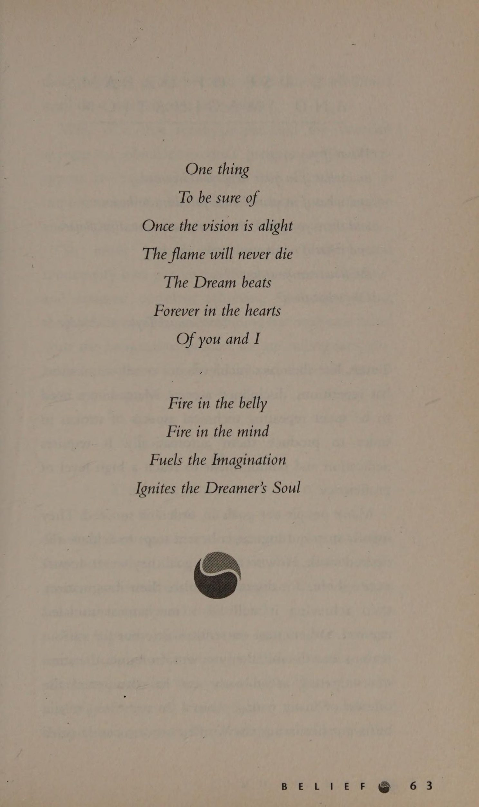
Hầu như không thể chơi một cú đánh nhịp nhàng nếu hơi thở không nhịp. Vâng, nhịp điệu là gì?
Khi chúng tôi
nghe từ “nhịp điệu” suy nghĩ đầu tiên của chúng ta thường là về âm nhạc hoặc khiêu vũ. Không có gì ngạc nhiên khi nó được mô tả là chuyển động có nhịp điệu. Nó thường được trải nghiệm trong cơ thể như một cảm giác thoải mái và trôi chảy khi thời gian của chúng ta “vừa phải”. Tuy nhiên, đối với một điều gì đó nghe có vẻ tự nhiên thì dường như nó có một đặc tính khó nắm bắt. Đã bao lần chúng ta nghe người ta nói rằng họ “vừa mất nhịp điệu” hoặc “nhịp điệu của họ vừa bỏ rơi họ,” như thể họ bất lực để làm bất cứ điều gì vì nó nằm ngoài tầm kiểm soát của họ.
Manh mối cho việc khám phá lại nhịp điệu của chúng ta nằm ở chỗ nó được mô tả là chuyển động theo nhịp. Hầu hết mọi người đều báo cáo rằng họ mất nhịp điệu khi trở nên căng thẳng hoặc mệt mỏi và các chuyển động của họ trở nên căng thẳng. Điều này làm căng các cơ và hạn chế luồng hơi thở của chúng. Hơi thở trở nên không đều và mất đi nhịp điệu đều đặn. Quá trình này có thể xảy ra dần dần trong một khoảng thời gian đến mức nó trôi qua mà không được chú ý và do đó có cảm giác nó biến mất và bị mất. Chìa khóa để khôi phục nhịp điệu trước hết nằm ở khả năng nhận thấy rằng hơi thở của chúng ta đã bị ảnh hưởng và thứ hai là có thể làm điều gì đó để giải quyết vấn đề đó. Ở phần sau của chương này, tôi sẽ xem xét các kỹ thuật cụ thể được thiết kế để đạt được nhận thức và kiểm soát hơi thở tốt hơn. Hơi thở Liếc nhanh qua vai Trước khi tâm trí tiết lộ những bí mật của nó Hơi thở, Nhân chứng vô hình Nghe lén Để lại dấu vết Trên gương Chỉ vào những cuộc trò chuyện nội tâm Nhanh, chậm Sâu, Nông khó nắm bắt, Giữ lại những thay đổi của nó Cung cấp manh mối cho những gì nó nghe được
DANTIAN Việc sử dụng, kiểm soát và nhận thức về hơi thở có tầm quan trọng lớn. trong Kung Fu và các môn phái Thiền. Trong võ thuật, tất cả các kỹ thuật ban đầu đều được luyện tập với nhịp thở bình thường. Tuy nhiên, một khi năng lực kỹ thuật nào đó đã đạt được thì hơi thở được điều khiển từ một nơi trong cơ thể gọi là Đan Điền.
Đan Điền nằm dưới rốn khoảng ba inch (hoặc 7,5 cm). Mục đích của việc rút hơi thở từ đó là để tăng thêm sức mạnh và sức mạnh cho mỗi đòn đánh. Hơi thở và đòn đánh được phối hợp bằng cách hút hơi vào từ Đan Điền, khi nắm đấm được thu lại, sau đó thả hơi thở và nắm đấm lại với nhau.
Quy trình tương tự có thể được sử dụng trên sân quần vợt khi thực hiện cú đánh trên mặt đất. Để bắt đầu, hãy thực hành quy trình sau mà không có bóng.
Rút vợt ra sau và đồng thời hít vào. Sau đó, khi bạn thực hiện theo, hãy thả vợt và thở cùng nhau. Lặp lại quá trình này cho đến khi bạn cảm thấy hơi thở và vợt của mình phối hợp với nhau dễ dàng. Một khi bạn có thể thoải mái phối hợp cả hai, hãy thêm quả bóng vào quá trình.
Khi bạn bắt đầu đánh bóng theo cách này, bạn có thể nhận thấy sức mạnh bổ sung mà bạn có thể tạo ra bằng cách kết hợp thời điểm vung vợt với hơi thở của mình. Nếu bạn đánh mạnh chỉ bằng nỗ lực thể chất thì phương pháp đánh này sẽ giúp giảm căng thẳng cho cơ thể bạn. Bạn có thể nhận thấy rằng bạn đã làm điều này mà không nhận ra. Cứ tiếp tục làm việc đó. Nếu nó mới đối với bạn, thì giống như bất cứ điều gì khác mà bạn luyện tập, theo thời gian, nó sẽ tự động trở thành một phần trong trò chơi của bạn.
20. Lợi thế của người thiền định (Advantage Meditator)
Trong văn hóa phương Đông, thiền được coi là một phần bình thường và thiết yếu của cuộc sống. Tuy nhiên, khi công nghệ giúp thông tin và phong cách sống được trao đổi nhanh chóng trên khắp hành tinh, những thuật ngữ mới như “thiền” đã trở nên dễ nhận biết ở phương Tây.
Thiền là gì?
Lợi ích của nó là gì?
Có những hình thức thiền nào?
Những người chơi thể thao luyện tập nó?
Đến
nghỉ
xuống
huyền bí
từ “thiền” được lưu giữ ở phương Tây, và cảm giác rằng nó chỉ có tác dụng nếu bạn tin vào nó, thiền đã phải trải qua quá trình nghiên cứu khoa học nghiêm ngặt. Một số phát hiện về sức khỏe trong và sau khi thiền là:
Giảm mức tiêu thụ oxy xuống mức lớn hơn phần sâu nhất của giấc ngủ Phản ứng sinh hóa trong cơ thể
trái ngược với các chỉ số căng thẳng Sự kết hợp sóng não Mức độ kích thích thích ứng Tăng Thời gian phản xạ
THIỀN POReARG Ti
CHĂM SÓC)? Một phương pháp thiền thú vị được sử dụng ở phương Đông tương tự như việc “xem quả bóng” là sử dụng mandala. Từ “mandala” có nghĩa là vòng tròn ma thuật hoặc quả cầu trong tiếng Phạn, và việc chiêm ngưỡng một vòng tròn được cho là mang lại cảm giác bình yên sâu sắc trong nội tâm. Những vòng tròn hay mandala đặc trưng trong tranh Thiền và tượng trưng cho sự giác ngộ cũng như nỗ lực hướng tới sự hoàn thiện của con người. Nhìn dưới góc độ này, một quả bóng tennis có thể được sử dụng như một mandala chuyển động và một phương tiện để tự khám phá.
Một hình thức thiền khác bổ sung cho quá trình “xem quả bóng” liên quan đến việc sử dụng một câu thần chú, hoặc âm thanh, như một phương tiện để làm dịu hoạt động tinh thần. Quá trình này tương tự như việc xem quả bóng nảy lên, ngoại trừ thay vì sử dụng một vật thể thị giác (quả bóng) làm tiêu điểm để buông bỏ những suy nghĩ thì một âm thanh (thần chú) sẽ được sử dụng. Câu thần chú được lặp lại nhẹ nhàng trong nội tâm và tạo ra một trạng thái độc đáo khi tâm trí được nghỉ ngơi sâu sắc trong khi vẫn tỉnh táo. Với việc sử dụng thường xuyên, tâm trí sẽ tự nhiên duy trì được trải nghiệm này trong thời gian dài hơn. Lợi ích của một tâm trí thư thái tỉnh táo là điều hiển nhiên đối với bất kỳ vận động viên thể thao nào.
Những nhà vô địch như Martina Navratilova, Billie Jean King và Gigi Fernandez đều đã học thiền và thu được lợi ích từ việc tập luyện. Thiền mang lại lợi ích cho người chơi ở mọi cấp độ. Bất kể tiêu chuẩn nào, như chúng ta đã thảo luận trước đó, sẽ luôn có những phiền nhiễu, suy nghĩ hoặc nỗi sợ hãi phải đối mặt và vì vậy luôn có chỗ cho một kỹ thuật giúp bạn thư giãn và tập trung. Thực sự thiền định trước khi ra sân có nghĩa là bạn đã giải quyết được nhiều suy nghĩ và cảm xúc gây xao lãng.
WADE BYTE. nhợt nhạt
TUME*’
TRUNG BÌNH? Tốt nhất, hãy cố gắng thiền hai lần một ngày, trước bữa sáng và bữa tối. Thư giãn khi bụng no cũng giống như cố gắng ngủ ngay sau khi ăn xong bữa tối. Nó có thể hơi khó chịu một chút.
Lần khác, thiền có thể hữu ích nếu bạn khó ngủ. Nếu bạn khó ngủ hoặc thức dậy vào ban đêm và không thể ngủ lại thì thiền có thể hữu ích để giúp bạn chìm vào giấc ngủ. Điều quan trọng nhất cần nhớ là, giống như mọi việc khác chúng ta làm, bạn càng thực hành thiền thường xuyên thì bạn càng trở nên tốt hơn. Nếu bạn chỉ giải quyết những khoảnh khắc khó khăn, bạn có thể sẽ chỉ đạt được thành công hạn chế. Hãy thử tập thói quen thiền như một biện pháp phòng ngừa hơn là một phản ứng với áp lực, căng thẳng hoặc căng thẳng cấp tính.
GIÀY THỨ TƯ
ME DHSTATE iMoOMoE
DPA T ELL. YB EF O'R-E
COM PET HN G? Tôi không tin có câu trả lời rõ ràng cho câu hỏi này. Mỗi vận động viên tiếp cận cuộc thi với thái độ và khí chất riêng của họ. Một số người thấy cần phải im lặng và tách mình ra khỏi người khác để duy trì sự bình tĩnh và tập trung. Những kiểu người hướng ngoại hơn có thể thấy họ thư giãn hơn khi ở bên người khác.
Bạn có thể cần thử nghiệm một chút để khám phá thời gian thiền lý tưởng trước trận đấu của mình. WP ORrTaAnt
ĐÂU
THIỀN? Nếu bạn ở chung nhà với người khác, điều thường hữu ích là họ biết rằng bạn hãy thực hành thiền định để ít có khả năng bị quấy rầy.
Mặc dù không cần thiết nhưng một số người thấy hữu ích khi thiền định ở cùng một nơi mỗi lần. Hãy cân nhắc việc tháo điện thoại ra hoặc bật máy trả lời tự động. Hãy nhớ rằng, đây là thời gian của bạn. Nếu bạn coi nó là quý giá thì những người khác cũng sẽ sớm có ý tưởng tương tự. TH HS ? o'r TR ED PTR T Nhiều người bắt đầu hành thiền nhưng sau một thời gian lại kết luận: “Tôi không thể làm được, tôi không thể ngăn tâm mình ngừng suy nghĩ!” hoặc “Tôi không thể làm được, tôi không cảm thấy thoải mái sau đó”.
Những cái này
câu lệnh
vạch trần
của
huyền thoại liên quan đến thiền định.
Đầu tiên, nhiều người cho rằng để thiền định thành công họ phải làm trống rỗng mọi ý nghĩ trong đầu. Khi họ nhắm mắt lại và thấy rằng những suy nghĩ vẫn tiếp tục đến, giống như dòng sông vẫn chảy, họ quyết định rằng rất tiếc là họ không thể làm được điều đó. Tuy nhiên, nếu chúng ta chấp nhận rằng suy nghĩ là một phần tự nhiên của chúng ta và đưa chúng vào trải nghiệm thiền định, chúng ta có thể thư giãn dễ dàng hơn. Sự vắng mặt của suy nghĩ có thể liên quan đến mục tiêu của thiền nhưng bản thân suy nghĩ lại được chấp nhận như một phần của cuộc hành trình. Huyền thoại phổ biến thứ hai về thiền là trong hoặc sau thiền, chúng ta sẽ luôn cảm thấy thư giãn và chúng ta sẽ đi lại xung quanh với nụ cười trên môi và không bị quấy rầy bởi bất cứ điều gì. Những kỳ vọng này là không thực tế. Trên thực tế, khi thiền, chúng ta có thể phải đối mặt với nhiều niềm tin trong quá khứ cần được chuyển hóa. Điều này có thể dẫn đến cảm giác căng thẳng hoặc khó chịu trong thời gian ngắn khi chúng ta học cách từ bỏ những niềm tin lỗi thời. Vì vậy, mặc dù nó có thể là một hoạt động thụ động nhưng nó cũng có thể mang tính đối đầu.
Cuối cùng, bạn có thể đã bắt đầu tìm kiếm một phương pháp thiền định để giải quyết một số khó khăn trong trò chơi hoặc cuộc sống của mình. Tại thời điểm này, bạn có thể đang mong muốn có được kết quả ngay lập tức, và bạn có thể làm như vậy. Tuy nhiên, với những kỳ vọng và hy vọng cao như vậy thì rất dễ dẫn đến thất vọng. Hãy cố gắng giữ thái độ kiên nhẫn khi bạn bắt đầu. Có thể phải mất thời gian để xoay chuyển tình trạng căng thẳng kéo dài. Cố gắng tiếp cận các giai đoạn đầu như một thử nghiệm, sử dụng chính bạn làm trường hợp thử nghiệm. Nếu bạn kiên trì, những gì có thể bắt đầu như một kỷ luật để cải thiện hiệu suất hoặc giảm bớt nỗi đau có thể trở thành một cuộc phiêu lưu thú vị để khám phá thêm về cơ thể, tâm trí và cảm xúc của bạn. Bạn thậm chí có thể khám phá lại niềm vui như trẻ thơ đến từ việc cảm thấy dễ chịu mà không có lý do cụ thể nào.
Lần tới khi bắt đầu luyện tập, hãy tự hỏi bản thân xem liệu việc thêm thiền vào kho cảnh quay của bạn có hữu ích hay không.
KINHIN:
ĐI BỘ
THIỀN Nhận thức về hơi thở là một khía cạnh cơ bản của thiền Thiền. Một phương pháp thực hành Thiền kết hợp nhận thức về chuyển động và hơi thở được gọi là Kinhin (thiền hành) (thiền hành). Nó được xen kẽ với tọa thiền để loại bỏ tình trạng uể oải và cứng đơ có thể gặp phải khi ngồi lâu. Nó thường chỉ được sử dụng trong khoảng thời gian năm phút một lần.
Một khía cạnh của Kinhin (thiền hành) (thiền hành) là thúc đẩy nhận thức về hơi thở khi bạn bước đi. Trong khi đi, hơi thở có thể được phối hợp với bước đi, được đếm hoặc chỉ đơn thuần là quan sát. Điều này giúp chúng ta duy trì sự tách biệt tinh thần khỏi suy nghĩ và cảm xúc của mình và có thể được thực hiện trên sân tennis khi đi bộ đến vị trí giữa các điểm. Điều này sẽ hữu ích trong một trận đấu quần vợt vì nó sẽ giúp người chơi không bị cuốn theo trận đấu hoặc bị khuất phục. Hee Tene te oo) ECO KHÔNG
THIỀN Một thời gian cực kỳ quý giá để nhận thức được hơi thở của bạn là lúc chuyển đổi các đầu. Có lẽ trường hợp đáng nhớ nhất về điều này xảy ra trong trận chung kết Wimbledon năm 1975. Arthur Ashe quá cố đã sử dụng thời gian này để giải tỏa và tập trung lại tâm trí của mình. Điều đó rõ ràng đã giúp ích vì anh ấy đã giành chiến thắng trong trận chung kết trước Jimmy Connors.
Đây là một ví dụ về thiền ngắn (hãy nhớ rằng nó có thể được thực hiện tại nhà hoặc văn phòng cũng như trên sân).
1. Ngồi xuống, nhắm mắt lại.
2. Có ý thức đặt chân xuống đất. Sau đó thả lỏng hàm, vai và tay. Bạn có thể làm điều này bằng cách từ từ nắm tay bằng một trong hai tay, giữ nó đếm đến năm rồi thả ra.
3. Bây giờ hãy chú ý đến hơi thở của bạn và lắng nghe âm thanh của mười hơi thở ra. Đếm từng cái một. Đừng nhảy thẳng lên mà hãy dành vài giây trước khi bạn mở mắt và bắt đầu di chuyển. Đừng đánh giá thấp giá trị của thời gian này. Hãy nhớ trong John Newcombe's
ngộ trải nghiệm thế nào ở sự thay đổi Kết thúc cú đánh
anh ấy “thực sự cảm thấy mình đi vào bên trong cơ thể và thổi bay mọi cảm giác tiêu cực.” Bằng cách dành thời gian này để quan sát cơ thể và hơi thở, bạn có thể giải phóng hoặc ngăn chặn sự căng thẳng tích tụ.
ZAZEN: SA Te fb NG OME Dols? AUT trong Một khía cạnh của Zazen (tọa thiền), đó là thiền Zen hay ngồi thiền, trọng tâm của việc thực hành là nhận thức hoặc quan sát hơi thở. Điều này có thể được thực hiện theo nhiều cách khác nhau và các phương pháp rất giống với việc sử dụng thần chú, như được mô tả trong các phần trước.
Tọa thiền được coi là một khía cạnh cực kỳ quan trọng của việc thực hành Thiền thời hiện đại. Tùy theo tu viện và thời gian trong năm, tọa thiền có thể được thực hành cả ngày, chỉ được ngắt quãng bằng bữa ăn, tụng kinh và một số công việc. Ý tưởng của phương pháp thiền này là ngồi mà không kỳ vọng đạt được bất kỳ kết quả nào khác ngoài việc nhận ra bản chất thực sự của mình. Trong nhận thức tĩnh lặng này, người ta chỉ đơn giản quan sát mà không phán xét những suy nghĩ và cảm xúc đang trôi qua. Để giúp tâm trí yên tĩnh và đưa ra một số phương hướng cho việc thực hành, nhận thức có thể được đặt vào chính hơi thở.
Ý tưởng không phải là cố gắng ép hơi thở vào bất kỳ khuôn mẫu hoặc nhịp điệu cụ thể nào, mà chỉ đơn thuần là nhận thức được nó. Trong thời gian này, những suy nghĩ, cảm giác, cảm giác sẽ xuất hiện trong tâm trí chúng ta và đôi khi khiến chúng ta mất tập trung vào hơi thở. Đây được coi là một phần của quá trình và sự chú ý được quay trở lại hơi thở khi người hành thiền nhận thức được sự thật là họ đã “trở lại”. Một ví dụ hàng ngày làm nổi bật điều này là khi chúng ta mệt mỏi và đang đọc sách. Chúng ta có thể nhận ra rằng mình đã đọc được nửa trang và nhận ra rằng sự chú ý của chúng ta đã quay trở lại và chúng ta không biết mình vừa đọc gì. Trong lúc tâm trí lang thang, sự chú ý của chúng ta tập trung vào một suy nghĩ, cảm giác, v.v. và không say mê đọc sách. Phải đến khi nhận thức trở lại, chúng ta mới nhận ra mình đã đi xa. Tại thời điểm này, chúng ta thường quay lại và đọc lại văn bản với ý thức.
Ý thức về hơi thở có thể được duy trì bằng cách:
1. Đếm hơi thở, thường đến mười.
2. Nghe tiếng hơi thở ra.
3. Cảm nhận hơi thở ở lỗ mũi.
21. Quần vợt Thái Cực Quyền (Tai Chi Tennis)
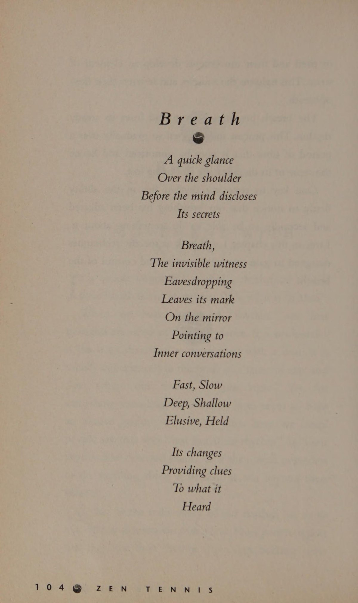
Một phần mở rộng của việc giải phóng hơi thở là việc sử dụng nhiều âm thanh khác nhau. Trong hệ thống Wu Shu, những âm thanh khác nhau được gán cho mỗi con vật để nâng cao những hiệu ứng khác nhau mà chúng ta có thể mong muốn.
Ví dụ: nếu chúng tôi muốn thực hiện một cú đánh mạnh mẽ, hung hãn, chúng tôi sẽ sử dụng âm thanh của Báo và Hổ. Đây sẽ là âm thanh WAH. Ngược lại, nếu chúng ta thực hiện cú đánh “chạm” từ đầu ngón tay thì chúng ta sẽ sử dụng âm thanh của Sếu hoặc Rắn. Đây là WUP và TISS.
Việc sử dụng âm thanh không phải là điều mới mẻ đối với quần vợt: chúng ta chỉ cần nhớ lại những tiếng càu nhàu khét tiếng hiện nay của Monica Seles (có thể là Tiger hoặc Leopard) để đánh giá cao rằng việc sử dụng âm thanh tại thời Điểm tiếp xúc bóng sẽ tăng thêm sức mạnh cho mỗi cú đánh.
TAROT ENN Tai Chi là một hệ thống chuyển động cổ xưa của Trung Quốc, thường được thực hiện theo nhịp điệu rất chậm. Chuỗi bước cân bằng giống như khiêu vũ được thiết kế để khôi phục và duy trì sự cân bằng trong cơ thể.
Hơi thở được đưa lên từ từ từ Đan Điền (nằm ngay dưới rốn) và được giải phóng theo chuyển động của cơ thể. Bằng cách phối hợp hơi thở và cơ thể theo nhịp điệu chậm rãi này, người tập được cho là có thể cảm nhận được dòng năng lượng bên trong gọi là Khí. Một loạt động tác tương tự và hữu ích có thể được luyện tập trên sân quần vợt. Rất ít người chơi, khi đã đạt được trình độ năng lực hợp lý, lại bận tâm đến việc thực hiện một cú vung tập luyện. Nếu họ làm vậy thì việc đó thường được thực hiện với tốc độ rất nhanh mà không có nhiều sự chú ý có ý thức đến những gì họ thực sự đang làm. Sẽ rất có ích nếu thiết lập một thói quen ngắn, như một phần trong quá trình khởi động của họ, để thực hành mỗi động tác chạm đất ở tốc độ chậm, phối hợp chuyển động với hơi thở. Nếu bạn giữ thói quen đơn giản, nó sẽ cho phép bạn theo dõi cả hơi thở và quá trình tạo ra cú đánh. sự kết hợp có thể của cách tiếp cận chuyển động có thể là:
1. Đứng ở đường cuối sân (baseline) tại điểm giữa. Vào Tư thế sẵn sàng và giữ tư thế đó trong vài giây. Hãy lưu ý rằng trọng lượng của bạn được phân bổ đều. Cảm nhận các cơ trong cơ thể bạn
_ chân. Quan sát ở vị trí cố định này chuyển động của hơi thở của bạn. Nó nhanh hay chậm? Nó sâu hay nông? Nó có nhịp nhàng không?
2. Thực hiện cú Cú thuận tay (forehand) với nhận thức về hơi thở. Bây giờ hãy từ từ rút vợt của bạn lại, đồng thời hít thở từ Đan Điền với tốc độ và thời gian tương tự. Sau khi hoàn thành, hãy bắt đầu chuyển động về phía trước và thực hiện với tốc độ tương tự như trước và một lần nữa phối hợp chuyển động cơ thể và hơi thở.
3. Trở lại vị trí sẵn sàng và cân bằng lại. (Lặp lại 1.)
4. Thực hiện cú Cú trái tay (backhand) với nhận thức về hơi thở. (Sử dụng cách tiếp cận tương tự như 2.)
Từ thời điểm này, bạn có thể xây dựng thói quen sử dụng động tác giao bóng, di chuyển lên lưới và đánh bóng. Cố gắng tạo một mẫu có cùng số bước và mất cùng thời gian để hoàn thành mỗi lần. Mặc dù có nguy cơ việc này có thể được thực hiện một cách máy móc, kỷ luật và nghi thức giữ các chuyển động và thời gian cùng nhau sẽ mang lại cơ hội tuyệt vời để bạn cân bằng và tập trung trước khi bắt đầu đánh bóng.
Truyện ngụ ngôn “Cầu vồng làm bằng dây thừng” nêu bật giá trị to lớn có thể đạt được bằng cách duy trì nhận thức về hơi thở. Cầu vồng tạo nên Re hs Bên một cửa sổ lồi lớn nhìn ra bến cảng, một người thợ giày trẻ đang tập sự đang mơ mộng khám phá những chân trời rộng lớn hơn. Anh ta đã thoát khỏi những suy nghĩ lang thang của mình bởi người thợ giày già, người đã lặng lẽ nhắc nhở anh ta về nhiệm vụ trước mắt. Anh quay lại với công việc của mình và biết rằng một ngày nào đó anh sẽ ra đi. Khi ngày đó đến, nó làm anh bất ngờ. Anh ấy đang ở trên lầu nhìn ra cửa sổ thì Cầu vồng xuất hiện ở phía chân trời. Cái này khác với những cái khác. Nó không tạo thành một vòng cung trên bầu trời và nó không thanh tao. Cầu vồng này treo trên bầu trời. và có hình chữ nhật. Nó có chất liệu và dường như được làm từ những sợi dây bện.
Chàng trai trẻ rất phấn khích và biết Cầu vồng này đang gọi mình. Lo lắng muốn đến được chỗ nó trước khi nó biến mất, anh lao đi mà không chào tạm biệt người thợ giày già.
Không dám rời mắt khỏi Rainbow, anh vội vã men theo con đường trên đỉnh vách đá. Sự vội vàng của anh ta đến mức anh ta không nhận ra rằng mình đang hướng thẳng tới một loại trường lực nào đó. Bây giờ anh đã bị cuốn vào đó. Nó dường như trải dài ra mọi hướng và kéo anh đi như một dòng nước mạnh. Anh bắt đầu hoảng sợ. Làm thế nào anh ta có thể thoát khỏi tình trạng lấp lửng này? Huy động từng chút sức lực và ý chí của anh để kéo mình trở lại. ra phía anh đã bước vào. Hoàn toàn kiệt sức, anh nhìn lên khi Cầu vồng của anh biến mất.
Anh ta nằm đó một lúc cho đến khi có đủ sức để quay lại với công việc sửa giày. Khi trở về, ông lão chào đón anh ta một cách nồng nhiệt và thấu hiểu và khiến người học việc trẻ bị sốc khi nói: "Nếu cậu không nhớ gì khác, lần sau khi ở trong trường lực đó, hãy hít một hơi thật mạnh! Hơi thở càng mạnh thì cuộc hành trình càng xa."
"Làm sao anh ta biết được chuyện gì đã xảy ra? Và lời khuyên thật kỳ lạ," chàng trai nghĩ. Nhưng anh nghi ngờ liệu sau nỗi sợ hãi đó, anh có muốn quay lại lần nữa hay không.
Thời gian trôi qua, anh ổn định công việc và bắt đầu tận hưởng sự giản dị của cuộc sống.
Một lần nữa, anh lại ngạc nhiên trước sự xuất hiện trở lại của Cầu Vồng của mình. Anh cố gắng chống cự nhưng sức hút quá mạnh. Lần này anh dừng lại đủ lâu để từ biệt người cũ
Khi khởi hành, anh ấy để một mắt quan sát Cầu vồng và mắt kia nhìn đường đi. Lần này anh muốn chuẩn bị sẵn sàng. Chẳng bao lâu sau anh đã đến được trường lực. Thận trọng tiếp cận, anh có thể cảm nhận được sức hút từ tính của nó. Chỉ cần bước thêm một bước nữa là anh sẽ vào được. Anh dừng lại, nhưng biết rằng mình không có lựa chọn nào khác nếu muốn đến được Cầu vồng.
Trong anh bước. Một lần nữa anh lại mất phương hướng và cảm thấy mình bị kéo đi một cách không thể kiểm soát được. Anh bắt đầu hoảng sợ. Làm sao anh ta có thể sang được bên kia? Đột nhiên, những lời của ông già đến với anh. “Hãy nhớ thở!” “Chắc chắn là tôi vẫn còn thở,” anh nghĩ, “nhưng tôi có gì để mất?” Chú ý đến hơi thở của mình, anh ngạc nhiên phát hiện mình đang nín thở. Anh cố ý hít một hơi thật sâu, chậm rãi qua miệng rồi thở ra. Anh cảm thấy bình tĩnh hơn một chút. Anh lặp lại và nhìn lên thì thấy hơi thở của mình đã thông qua một đường hầm hình trụ trong trường lực. Nắm bắt thời cơ, anh ta nhảy lên. Với cánh tay và chân khua khoắng theo mọi hướng, anh trượt sang phía bên kia. Bây giờ anh nhận ra rằng có điều gì đó đặc biệt ở ông già bình thường đó. Nhìn lên anh thấy Cầu vồng vẫn còn ở khá xa. “Chắc chắn nó sẽ biến mất trước khi tôi chạm tới nó!” anh nghĩ. Rồi anh chợt nảy ra một ý tưởng. “Nếu tôi có thể tự thở… thông qua trường lực, có lẽ tôi có thể thở mình đến Cầu vồng, Rất đáng để thử.” Anh hướng cơ thể về phía Rainbow, nghiêng đầu, hít một hơi thật sâu rồi thở ra. Trước khi nhận ra điều đó, anh ấy đã lao vút qua không gian như một tên lửa của con người. Có lẽ hơi thở này đã quá mạnh! Bang! Anh ta đánh vào Cầu vồng. Anh ta gần như đã vượt qua nó nhưng đã nắm được những sợi dây và bám vào, đu đưa trong không gian một lúc trước khi dừng lại. Từ vị trí này, anh có thể nhìn thấy cả thế giới trải rộng trước mắt mình. Quê hương anh, làng quê và biển cả. Mọi thứ đã quá rõ ràng từ góc nhìn này. Anh tràn đầy biết ơn vì đã có thể giải phóng bản thân khỏi trường lực và có được trải nghiệm tuyệt vời này.
PHẦN 5: BÓNG (BALL)
22. Tập trung vào trái bóng (Focus on the Ball)
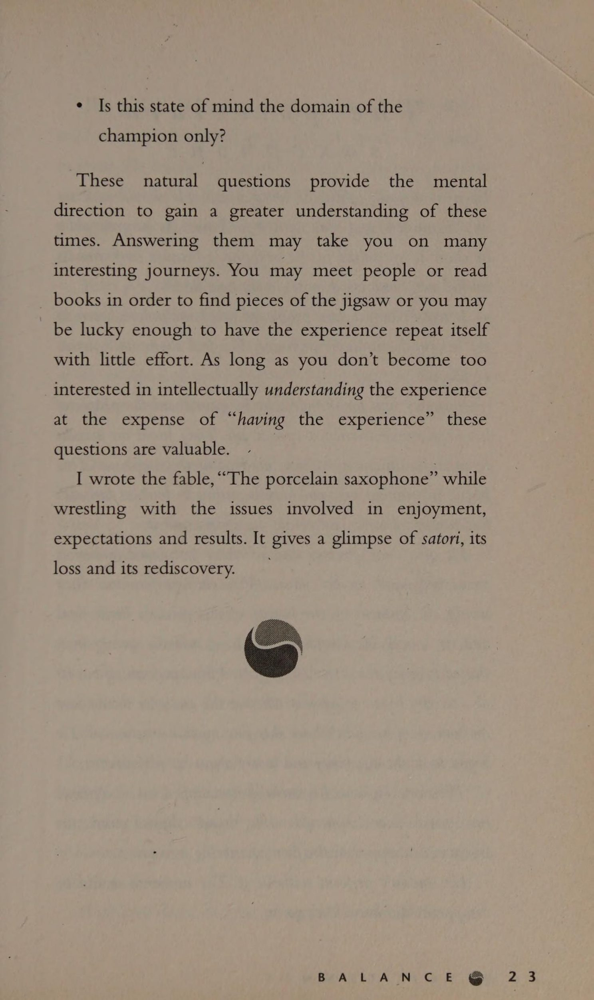
Để tạo ra trạng thái tâm trí được mô tả là ngộ, chúng ta cần tìm một phương tiện để duy trì Sự tập trung hoàn toàn vào thời điểm hiện tại trong khi vẫn cảm thấy thư giãn. Điều này nghe có vẻ là một nhiệm vụ khá đơn giản, nhưng nó có thể là một quá trình khá khó để làm chủ được. Tại sao lại như vậy và làm thế nào để phát triển nhận thức về thời điểm này?
Ở đây quả bóng tennis trở thành một công cụ hữu ích. Nếu chúng ta có thể tập trung vào quả bóng đến mức loại trừ mọi thứ khác thì chúng ta có thể thoáng thấy ngộ trong chốc lát. Nếu chúng ta biết rằng chúng ta đã nhìn thấy quả bóng nảy lên và nhìn thấy nó trên vợt sau khi nảy thì chúng ta đã có thể tạm thời loại bỏ những suy nghĩ khác của mình. Lợi ích của việc có thể làm được điều này là rất lớn.
Nếu chúng ta coi bộ não như một chiếc máy tính và coi nhận thức về quả bóng là thông tin chúng ta đấm vào nó thì bản in (thuận tay, trái tay, v.v.) sẽ phụ thuộc vào chất lượng thông tin được xử lý. Nếu quả bóng bị che mờ bởi những suy nghĩ dưới dạng sợ hãi và nghi ngờ, thì mỗi cú đánh đều có khả năng bị ảnh hưởng. Sự chú ý của chúng ta đối với quả bóng càng rõ ràng thì chúng ta càng có nhiều khả năng nhận được thông tin chất lượng.
LỚN
PRIX TENNIS Một ví dụ hữu ích giải thích việc nhìn một quả Bóng ngon ăn (sitter) dàng như thế nào mà vẫn không nhìn thấy nó là việc lái xe ô tô. Giả sử khi bạn đi làm, bạn lái xe theo cùng một tuyến đường mỗi ngày. Sau một vài năm đi du lịch theo cách tương tự, bạn bắt đầu làm việc và tự nghĩ: “Có phải tôi đã dừng lại ở những ngọn đèn đó không?” hoặc "Tôi cho là tôi đã lái xe ngang qua tòa nhà đó. Tôi vẫn ở đây nguyên vẹn phải không?" Bởi vì đó là một hành động lặp đi lặp lại nên chúng ta sử dụng mức độ chú ý tối thiểu cần thiết để hoàn thành nhiệm vụ của mình một cách thỏa đáng.
Tuy nhiên, nếu một đêm chúng tôi đi ngủ và khi chúng tôi ngủ, một đường đua Grand Prix được lắp đặt trên cùng một tuyến đường, ngày hôm sau khi lái xe đi làm với tốc độ gấp bốn lần, chúng tôi sẽ nhận biết được từng inch vuông của đường lái xe và có thể nhớ lại tất cả.
Đây là cách chúng ta nên nghĩ về việc nhìn thấy quả bóng. Nếu muốn chơi quần vợt Grand Prix, chúng ta phải nhận thức được từng khoảnh khắc và quan sát từng đường bóng để không bị những người chơi khác vượt qua. Đã bao nhiêu lần bạn đi chơi quần vợt, đánh bóng trong vài phút, tập giao bóng vài lần rồi bắt đầu chơi. Năm phút sau, bạn hét lên thất vọng vì những sai lầm mình mắc phải. Bạn có hy vọng gì trong việc tìm ra thời điểm, Sự tập trung và nhịp điệu của mình? Bạn có thể nhìn thấy quả Bóng ngon ăn (sitter) dàng dưới áp lực đó không?
Điều quan trọng cần nhớ là khi bạn đang tìm bóng, đừng ép bạn chú ý vào nó. Nếu làm vậy, bạn sẽ thấy điều đó trở nên căng thẳng và áp lực. Hãy thử và cho phép sự chú ý của bạn “ổn định” dễ dàng vào quả bóng với nỗ lực tối thiểu và giảm thiểu sự thất vọng. Bài tập, kế hoạch sáu giai đoạn mà tôi thường xuyên thực hành với khách hàng của mình, được thiết kế để tạo ra thời gian và cấu trúc để điều này xảy ra.
Nó có một cảm giác trọn vẹn về nó. Nó cho phép chuyển đổi có chủ đích một cách suôn sẻ giữa việc xem bóng trong khi thực hiện các nhiệm vụ ít phức tạp hơn, những nhiệm vụ khó hơn và ngược lại. Nó cho phép chúng ta dần dần tham gia vào quá trình thay vì vội vàng.
Tôi tin rằng cấu trúc sáu giai đoạn là một cấu trúc cần được thực hành thường xuyên. Đây sẽ là một cách lý tưởng để luyện tập trong những ngày trước trận đấu và sẽ có giá trị trong một phiên bản rút gọn để khởi động ngày thi đấu của bạn.
KẾ HOẠCH SÁU GIAI ĐOẠN 1 Ban đầu, hãy đánh bóng qua lại một cách dễ dàng với bạn tập. Mỗi lần quả bóng nảy lên, hãy hỏi nhẹ nhàng xem bạn có nhìn thấy quả bóng nảy lên hay không. Bạn sẽ nhận thấy rằng bạn có thể đánh một quả bóng mà không hề có ý thức về việc nhìn thấy nó nảy lên. Đừng chỉ trích bản thân nếu bạn nhận ra rằng mình chưa nhìn thấy quả bóng. Chỉ cần sử dụng thông tin này để củng cố nhu cầu xem xét lần sau. Hãy cố gắng nhận biết những suy nghĩ đang che mờ nhận thức của bạn. Một số sẽ tái diễn, một số khác chỉ đến và đi.
Sử dụng thông tin này để củng cố sự cần thiết phải xem xét lần sau. Đã hơn một lần trong quá trình huấn luyện, tôi đã hỏi học trò của mình liệu chúng có nhớ đã nhìn thấy quả bóng hay không, nhưng nhận ra rằng chúng đáp lại tôi: “Không, tôi không thấy!” Ở giai đoạn này, tôi nhận ra rằng việc xem bóng đã trở thành một bài kiểm tra mà các em cảm thấy mình phải vượt qua. Họ đã nghe câu hỏi của tôi như một lời chỉ trích có thể xảy ra. Hãy cố gắng biến nó thành một cuộc điều tra hơn là một cuộc điều tra.
Để tạo điều kiện thuận lợi cho quá trình này, hãy thử hét lên “Có” vào thời điểm bóng nảy lên. Hãy vui vẻ với bạn tập của bạn để xem ai là người đầu tiên quên. Đây là một bài tập tập trung có giá trị.
Khi bạn đã thực hành xem bóng theo cách dễ dàng này và cảm thấy rằng bạn đã kiểm soát được nó, đã đến lúc tăng độ khó và chuyển sang Giai đoạn 2. 2.Giai đoạn tiếp theo, sau khi đánh bóng ngược và tiến vào nhau, là tăng cường chuyển động của bạn xung quanh sân.
Khi tăng Nhịp điệu trận đấu, bạn có thể nhận thấy rằng việc giữ bóng trở nên khó khăn hơn. Khi bóng được đánh sang phía đối diện của sân, bạn sẽ có xu hướng lao đi một cách giận dữ. Khi làm như vậy thường có một điểm “trống” mà chúng ta không nhìn thấy bóng cho đến khi chúng ta lại gần. Chúng ta có thể vội vàng một cách không cần thiết và thấy rằng bên trong chúng ta tăng tốc và cuối cùng lại lao vào bắn. Hãy thử và để quả bóng cho bạn biết bạn cần chạy nhanh như thế nào. Giữ tinh thần thoải mái và giữ bóng ở tiêu điểm khi bạn di chuyển về phía nó. 3. Giai đoạn thứ ba trong quá trình luyện tập của bạn là bắt đầu chơi điểm chứ không phải trò chơi. Thông thường, bạn nên thực hiện năm lần giao bóng mỗi lần nhưng KHÔNG ĐƯỢC ĐIỂM. Bây giờ bạn đang tham gia vào việc chơi điểm, trò chơi của bạn sẽ căng thẳng hơn một chút. Bạn sẽ không muốn đánh bóng ra khỏi sân và bạn có thể, mặc dù thực tế là bạn không ghi bàn, hãy cố gắng hơn một chút để giành chiến thắng. Tuy nhiên, hãy xem liệu bạn có thể giữ mục tiêu theo bóng cao nhất trong đầu mình hay không. Điều này có thể khó hơn một chút vì những suy nghĩ và cảm xúc trên có thể bắt đầu che mờ nó. Khi bạn cảm thấy thoải mái với việc này, hãy chuyển sang Giai đoạn 4.
4. Bây giờ là lúc tạo thêm áp lực từ việc ghi bàn. Đừng thực sự chơi trò chơi. Làm cho nó là đầu tiên đến mười hoặc hai mươi. Hãy chú ý đến áp lực tăng thêm do việc chấm điểm gây ra cho quá trình này. Liệu nó có tạo nên sự khác biệt cho khả năng xem bóng của bạn khi có thắng/thua không?
5. Bây giờ là lúc bạn thử chơi một trò chơi luyện tập chính thống với tính điểm bình thường. Bây giờ bạn đang ước tính các điều kiện phù hợp. Lưu ý những thách thức có liên quan.
Mặc dù đây vẫn chỉ là luyện tập, bởi vì bạn đang mô phỏng các điều kiện trận đấu, nó sẽ làm lộ ra nhiều nỗi sợ hãi về thắng thua, không mắc sai lầm, v.v., như một trận đấu có thể xảy ra. Những suy nghĩ và cảm giác này sẽ thách thức việc bạn xem bóng nhiều như khi luyện tập.
6. Sau khi tập xong, điều quan trọng là phải khởi động. Quay lại Giai đoạn 1 và Cú đánh nhẹ (dink) nhàng tới lui một lần nữa. Bây giờ hãy để ý, trái ngược với việc chơi một hiệp, việc xem bóng sẽ như thế nào. Có vẻ dễ dàng hơn lúc đầu? Thói quen luyện tập có hệ thống này rất có lợi vì nó cho phép bạn tăng dần áp lực lên trò chơi của mình. Hãy sẵn sàng chờ đợi cho đến khi bạn cảm thấy thoải mái với một giai đoạn trước khi chuyển sang giai đoạn tiếp theo. Thời gian này có thể thay đổi tùy theo từng buổi tập.
Khi bạn cảm thấy thoải mái với thói quen luyện tập này, đã đến lúc xem bạn xem bóng như thế nào trong các trận đấu cạnh tranh, giải đấu, v.v. Rõ ràng những trường hợp này sẽ làm tăng áp lực nhiều hơn nhưng ít nhất bằng cách tập luyện dần dần cho đến thời điểm này, bạn sẽ chuẩn bị tốt nhất có thể.
Nếu bạn thấy rằng sự chú ý của bạn
liên tục lang thang khi bạn đang tìm kiếm quả bóng, hãy thử cho mình một cái gì đó cụ thể để tìm kiếm. Xem liệu bạn có thể nhìn thấy thương hiệu hoặc sự tham gia của quả bóng hay không. Nếu bạn đang đánh với Xoáy lên, hãy quan sát mặt sau của quả bóng hoặc để ý xem quả bóng đang quay nhanh hay chậm.
Thử thách bản thân bằng cách xem liệu bạn có thể tập trung vào quả bóng trong toàn bộ lượt đánh hay không. Điều này có nghĩa là ghi nhớ nó chạm vào vợt của đối thủ, thời gian nó di chuyển trong không khí giữa bạn và độ nảy khi Kết thúc cú đánh của bạn.
Miloslav Mecir, cựu tuyển thủ top 10, là người mà tôi tin rằng tập trung chính xác. Trong một cuộc phỏng vấn với Nick Place của Melbourne Herald, "anh ấy [Mecir] quan sát quả bóng từ lúc nó được tung lên trời để giao bóng cho đến khi một cậu bé nhặt bóng nhặt nó lên hoặc nó tìm thấy lưới. Mecir hoàn toàn tập trung. Bạn có thể vẫy cờ đỏ phía sau đối thủ của anh ta, bạn có thể bắn một cú đánh - anh ta đang mải mê với tên lửa màu vàng đang bay." Diilss TeRpAy Get (207 NyS Bất kể cấp độ môn thể thao bạn đang chơi, luôn có những suy nghĩ và cảm giác mất tập trung cạnh tranh với quả bóng để thu hút sự chú ý của bạn.
Đối với người mới bắt đầu, có thể có những suy nghĩ như “Hy vọng tôi không tự lừa dối mình” hoặc “Tôi chắc chắn mình sẽ trở thành tay vợt tệ nhất từng đặt chân lên sân đấu.” Những suy nghĩ này rõ ràng mang theo cảm xúc và thường che mờ nhận thức của chúng ta về quả bóng.
Người chơi nâng cao sẽ có một loạt suy nghĩ và cảm xúc khác tranh giành sự chú ý của họ. Họ có thể muốn thắng một giải đấu đến mức nếu họ rơi vào thế khó trong trận đấu, ý nghĩ “Tôi nghĩ mình sắp thua” có thể khiến họ căng thẳng và cản trở khả năng tập trung vào quả bóng. Họ có thể mong đợi một tiêu chuẩn chơi nhất định và cảm thấy thất vọng khi chơi dưới mức này. Mặc dù có thể những cảm giác suy nghĩ này giúp tăng cường khả năng tập trung của con người, nhưng hầu hết người chơi đều bị chúng làm phân tâm.
Lấy quả bóng làm trọng tâm khi chúng ta tràn ngập suy nghĩ là một tài sản lớn. Lý do cho điều này là nó cho chúng ta một nơi nào đó trung lập để đặt sự chú ý của mình.
23. Sự dính mắc (Attachment) (Attachment)
Có một số chủ đề hoặc thái độ phổ biến có thể chi phối quả bóng. Những điều này có thể khác nhau đối với mỗi người chơi. Tuy nhiên, một số ít xảy ra một cách thường xuyên. Buông bỏ chúng có thể khó khăn. Như thể chúng ta đang “gắn bó” với họ.
Vậy tôi muốn nói gì khi nói “dính mắc”? Sự gắn bó xảy ra khi sự chú ý của chúng ta tập trung vào một ý nghĩ và chúng ta không thể buông bỏ nó. Nếu điều này xảy ra thường xuyên thì chúng ta có một số gắn bó tình cảm hoặc đầu tư vào kết quả.
ĐÍNH KÈM:
THUA Một tình huống phổ biến chứng tỏ việc đánh Bóng ngon ăn (sitter) dàng như thế nào mà không có ý thức nhìn thấy nó có thể diễn ra như thế này.
Jack cuối cùng
điều động
đối thủ
mất vị trí bằng cách thực hiện một cú đánh mạnh vào góc trái tay. Mặc dù mất Trọng tâm cơ thể, đối thủ của anh ta vẫn cố gắng lấy được vợt của mình và thực hiện một pha trả bóng yếu ớt ở giữa sân. Jack phấn khích, một tia sáng lóe lên trong mắt anh. Ở đó, trước mặt anh ta, toàn bộ sân cầu xin cho anh ta được bắn. Anh ấy đã có thể nghe thấy tiếng gọi của trọng tài, “Trận đấu, Hiệp đấu và Trận đấu!” Nổi lên, anh ấy ném bóng qua sân. Có một sự tạm dừng nhất thời. Anh ta đang định tung nắm đấm đang nắm chặt của mình lên trời thì bất ngờ nhận ra rằng anh ta đã đánh được quả Bóng ngon ăn (sitter) nhất trận đấu, OUT. Anh không thể tin vào mắt mình. Chắc chắn đã nhầm, có cánh tay duỗi thẳng của trọng tài biên ra hiệu rằng nó đã bị loại. “Sao tôi có thể làm được điều đó?” Jack đau khổ. Nhiều lời giải thích khác nhau hiện lên trong đầu anh, “Có lẽ tôi đã cố đánh quá mạnh hoặc có lẽ tôi không nên cố đánh quá gần vạch hoặc có lẽ tôi quá phấn khích?” Mặc dù tất cả những lời giải thích của Jack có thể đúng nhưng gần như chắc chắn rằng khi Jack nhìn thấy sơ hở đó trên sân và trở nên phấn khích, anh ấy đã quên chuyển sự chú ý của mình trở lại quả bóng. Nói một cách đơn giản, anh ấy không nhìn thấy quả bóng khi đánh nó. Khả năng thực hiện cú đánh mà bạn muốn thực hiện và tập trung lại vào quả bóng là một nghệ thuật cần phải luyện tập.
ĐÍNH KÈM CÓ THỂ Đặt mickol Eee RETA ToLiveisi Một vấn đề khác với lời giải thích của Jack về lý do tại sao anh ấy mắc lỗi có thể là việc anh ấy trở nên chỉ trích bản thân vì những lý do sai lầm. Việc hiểu sai lý do thực sự dẫn đến sai lầm của anh ta có thể đồng nghĩa với việc anh ta đã hạn chế sự tinh tế hoặc khả năng sáng tạo của mình. phát hiện ra rằng nhiều người chơi tưởng tượng ra một cú đánh cụ thể và khi nó không thành công thì chỉ trích bản thân vì đã cố gắng thực hiện cú đánh đó. Họ có thể tự nhủ: “Thật là ngu ngốc khi thử và đừng làm điều đó nữa”.
Điều này có thể đúng, nhưng một khả năng khác là họ đã trở nên phấn khích trước viễn cảnh về cú đánh mà họ đã tưởng tượng và khi làm như vậy đã không chuyển sự chú ý của họ trở lại quả bóng.
Một trong những cảm giác tuyệt vời nhất trong thể thao là khi chúng ta tưởng tượng ra điều gì đó và nó xảy ra. Sẽ thật đáng tiếc nếu giết chết thú vui này vì những lý do sai trái. Tôi vẫn có thể nhớ lại cảm giác khi tưởng tượng trong đầu mình một cảnh quay cụ thể và nhìn lên và nhìn thấy cảnh quay thực sự theo sau cảnh tưởng tượng như thể nó đang ngồi trên đuôi sao chổi. Tất cả những gì ngăn cách họ là khoảnh khắc khi tôi chuyển sự chú ý của mình trở lại quả bóng.
Không phải tất cả người chơi đều bị ảnh hưởng tiêu cực bởi nhu cầu chiến thắng. Một số người chơi sử dụng nó như một động lực để phát triển bản thân. Tuy nhiên, đối với những người khác, nhu cầu chiến thắng có thể là mối nguy hiểm lớn nhất cho sự phát triển của họ. Với một xã hội rất chú trọng đến kết quả, người chơi phải chịu áp lực rất lớn để giành chiến thắng. Họ có thể bị cám dỗ theo đuổi một phong cách hoặc trò chơi giúp họ giành chiến thắng trong thời gian ngắn nhưng lại có những hạn chế trong tương lai.
Với sự củng cố liên tục của mọi người hỏi, "Bạn có thắng không? Tỷ số là bao nhiêu?", việc chấp nhận rủi ro trở nên rất khó khăn. Hiếm khi có người hỏi: “Hôm nay bạn có gặp phải rủi ro mới nào không?” hoặc “Tôi thấy bạn thử điều gì đó khác biệt - điều đó thật tuyệt vời!”
Với suy nghĩ này, thật dễ dàng để nhận ra một tay vợt sắp thực hiện một cú đánh như thế nào khi đột nhiên phải đối mặt với suy nghĩ, “Nếu bạn bắn trượt cú đánh này, bạn sẽ phải trả giá bằng cả trận đấu,” chặt chẽ hơn và có thể không nhìn thấy bóng chút nào. Nó trở nên lạc lối trong những cảm xúc xung quanh suy nghĩ đó. Khi nhu cầu chiến thắng trở nên quá lớn thì giá trị của sự cạnh tranh sẽ bị mất đi.
Tôi thấy thú vị khi huấn luyện người lớn rằng trò chơi của họ thường ngừng phát triển sau một thời gian. Họ thường đặt mục tiêu đánh bại một người nào đó và khi họ đánh bại người đó thì họ ngừng phát triển. Hai mươi năm sau trò chơi của họ vẫn không thay đổi. Không có sự ngẫu hứng hay sáng tạo, không có rủi ro, không có những cú đánh mới. Trò chơi của họ gần như máy móc. Sự quan tâm hoàn toàn tập trung vào kết quả.
Chúng ta nên tự hỏi bản thân, “Nếu chúng ta đang học một kỹ năng không có sự thắng/thua (giả sử là một ngôn ngữ), chúng ta sẽ cảm thấy thế nào nếu sau 25 năm chúng ta cũng không khá hơn so với sau 5 năm?”
ngắn
câu chuyện, “The
cái đó
đi,” chứng tỏ sự gắn bó của chúng ta với một kết quả cụ thể có thể thay đổi như thế nào khi hoàn cảnh của chúng ta thay đổi. PU CÔ Chúng Ta MT đi xa Một ngày nọ, có một người đánh cá cởi chiếc thuyền nhỏ của mình ra khơi. Anh mong chờ thử thách đấu trí với các sinh vật dưới vực sâu. Và tất nhiên luôn có sự hấp dẫn của việc bắt được con lớn.
Sau khi quăng dây xong, anh ta ngồi xuống và chờ đợi. Biết cách chờ đợi là một phần của trò chơi. Chẳng bao lâu sau đã xảy ra một vụ giằng co dữ dội trên dây. Chất adrenaline của anh ấy bắt đầu chảy khi anh ấy thả dây, khiến đối thủ của anh ấy có nhiều thời gian để chơi đùa. Từ cuộc kháng chiến, anh biết rằng để giành chiến thắng trong trận chiến này sẽ đòi hỏi tất cả kinh nghiệm và nguồn lực của anh.
Thời gian biến mất trong cuộc đấu tranh căng thẳng. Bị kéo căng đến giới hạn, anh cảm thấy có lẽ mình không thể giữ được nữa, nhưng anh vẫn tiếp tục đào sâu hơn, cho đến khi bất ngờ anh bắt đầu cảm thấy con cá yếu đi. Với triển vọng giành chiến thắng trong cuộc chiến, anh cảm thấy sức mạnh dâng trào mới. Anh ta bắt đầu kéo chiếc cúp của mình lại gần thuyền hơn. Bây giờ không xa. Nhìn xuống nước, người đánh cá có thể nhìn thấy con mồi của mình chỉ cách đó vài mét. Cảm giác chiến thắng bắt đầu dâng lên trong lòng. “Hãy đợi cho đến khi những người khác nhìn thấy những gì tôi mang vào,” anh nghĩ.
Trong khoảnh khắc đó, anh thả lỏng và con cá cảm thấy đây là cơ hội cuối cùng của anh, giật mạnh sợi dây và giật đứt nó. Người đánh cá choáng váng. Rất gần nhưng anh đã thua.
Thất vọng và kiệt sức, anh bắt đầu thu dọn đồ đạc, cố gắng bằng lòng với viễn cảnh kể câu chuyện của mình về người đã ra đi. Ngay khi anh chuẩn bị quay trở lại bờ, anh nghe thấy một tiếng nước lớn phía sau mình. Anh quay lại và nhìn thoáng qua con cá marlin trên không ngay trước khi nó hất anh xuống biển. Khi người đàn ông đáp xuống nước, con cá đổi chỗ cho nhau và rơi xuống thuyền một cái rầm. Đó là một chiếc thuyền nhỏ đến nỗi sinh vật to lớn gần như lấp đầy nó.
Choáng váng, người ngư dân nắm lấy mạn tàu của mình. Nhìn lên, anh có thể thấy con cá marlin khổng lồ trên thuyền đang nhìn chằm chằm vào anh. Anh cố trèo trở lại nhưng lần nào con cá cũng lao ra dữ dội khiến anh không thể trèo lên được. Anh ấy phải làm gì? Anh dừng lại để suy nghĩ. "Đừng hoảng sợ," anh tự nhủ, "Bạn sẽ có thể tồn tại dưới nước lâu hơn những con cá có thể ở trên thuyền. Chỉ cần kiên nhẫn và cuối cùng bạn sẽ có thể quay trở lại bờ với giải thưởng. Không phải cách bạn mong đợi để giành chiến thắng nhưng điều này sẽ tạo nên một câu chuyện thậm chí còn hay hơn." Hài lòng với chính mình, anh tiếp tục chờ đợi.
Bây giờ người đánh cá đã ngừng cố trèo lên thuyền, con cá cũng ngừng lao ra.
Thời gian trôi qua. “Không còn lâu nữa,” người đàn ông nghĩ, khi kinh hoàng nhìn lên và thấy một chiếc vây lớn đang hướng về phía mình. Một con cá mập!
Các lựa chọn trôi qua nhanh chóng trong tâm trí anh.
Nếu anh ta ở lại trong nước thì anh ta sẽ chết và con cá cũng vậy. Nếu con cá để anh ta lên thuyền thì anh ta sẽ sống và con cá cũng có thể sống. Tuy nhiên, con cá phải tin tưởng rằng ông sẽ để nó đi. Với thành tích quá khứ của anh ấy thì điều đó thật khó khăn. Bạn sẽ làm gì nếu bạn là người đánh cá? Bạn sẽ làm gì nếu bạn là con cá?
24. Quan sát bóng giúp hoàn thiện kỹ thuật (Watching the Ball Improves Technique)
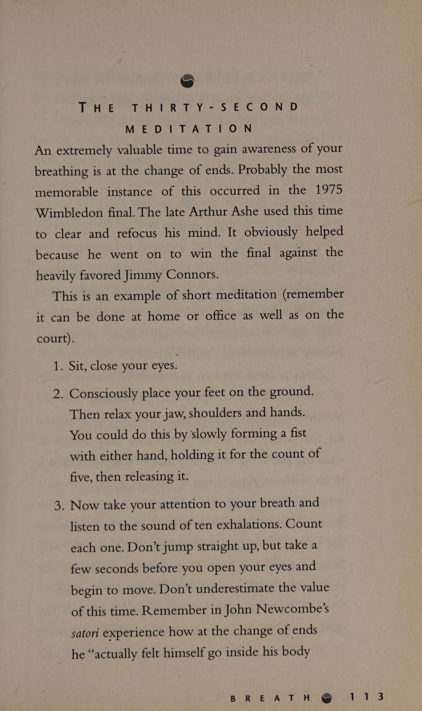
Đến bây giờ, rõ ràng là một trong những tác động của cạnh tranh là nó khơi dậy niềm tin của chúng ta về thắng và thua. Chúng ta cũng đã thảo luận về nhiều phương pháp khác nhau để thách thức những niềm tin không phù hợp và cách chúng ảnh hưởng đến nhận thức của chúng ta về quả bóng.
Tuy nhiên, giống như bất kỳ kỹ năng nào, nếu bạn luyện tập quá trình quan sát bóng một cách nhất quán, bạn sẽ phát hiện ra rằng các buổi luyện tập sẽ trở nên giống với thi đấu thực sự. Một sự tương tự hữu ích cho quá trình này xuất phát từ truyền thống Ấn Độ.
Một đạo sư được hỏi về giá trị của thiền trong cuộc sống bận rộn. Ông so sánh quá trình thiền định với quá trình nhuộm vải. Ở Ấn Độ, khi một mảnh vải được nhuộm, nó sẽ được nhúng vào màu đã chọn và phơi dưới nắng cho khô. Một số màu vẫn còn nhưng một số cũng nhạt dần. Sau khi khô, vải lại được nhúng vào màu và phơi nắng một lần nữa. Một lần nữa một số màu nhạt đi, nhưng lần này nó đậm hơn một chút so với trước. Quá trình này được tiếp tục cho đến khi thuốc nhuộm ngấm sâu vào vải đến mức hầu như không phai màu khi phơi dưới ánh nắng mặt trời.
Tương tự như vậy, bạn càng luyện tập nhiều như khi thi đấu thì quá trình theo dõi bóng sẽ càng dính chặt hơn. Sẽ có ít sự khác biệt hơn giữa tập luyện và thi đấu.
eae TCH
NG ee Spee
CẢI THIỆN KỸ THUẬT Có những tình huống xem bóng sẽ cải thiện kỹ năng kỹ thuật của tay vợt.
Một ví dụ về điều này có thể là khi một người chơi đánh một Cú trái tay (backhand) tay. Một vấn đề khi chơi trái tay là người sắp thực hiện cú đánh sẽ thả vợt quá mạnh khiến đầu họ nhanh chóng nâng lên. Điều này thường đi kèm với việc trọng lượng cơ thể dồn lên chân sau và bóng được nhấc ra khỏi sân.
Có nhiều hướng dẫn có thể khắc phục vấn đề này.
1. Thả vợt nhẹ nhàng. Bằng cách thả vợt theo cách này, đầu của bạn ít có khả năng bị giật lên trên, do đó dẫn đến việc căn thời gian tốt hơn và cú đánh nhịp nhàng hơn.
2. Giữ yên đầu. Bằng cách này, nhiều khả năng bạn sẽ thực sự nhìn thấy quả bóng. Vấn đề duy nhất với điều này là bạn có thể cảm thấy hơi cứng và lúng túng khi giữ đầu không thể di chuyển.
3. Giữ trọng lượng ở bàn chân trước. Bằng cách giữ chân trước vững chắc trên mặt đất, nó có thể giữ vững cú đánh của bạn. Nó có thể giúp giữ cho đầu của bạn không bị nâng lên và tạo ra một cú đánh cân bằng hơn.
4. Quan sát bóng sau khi nảy.
Nếu bạn nhìn quả bóng sau khi nảy, đầu của bạn không thể bay lên không trung. Nếu đầu được giữ hướng xuống, trọng lượng cơ thể thường giữ cân bằng và chúng ta buộc phải thả vợt theo cách có kiểm soát hơn.
Tôi tin rằng điều này cực kỳ hữu ích vì dù sao chúng ta cũng cần nhìn thấy bóng và vì vậy thay vì làm phức tạp thời điểm đánh bóng bằng những suy nghĩ bổ sung như “giữ đầu cố định” v.v., chúng ta có thể giữ toàn bộ quá trình đơn giản.
Rõ ràng là nếu có những vấn đề kỹ thuật rõ ràng, chúng sẽ cần được giải quyết bằng cách tiếp cận có kỷ luật thông thường.
Chúng ta càng có thể lập trình nhiều khía cạnh trong trò chơi để chúng tự động hóa thì chúng ta càng thấy rõ những phần đòi hỏi sự chú ý có ý thức. Bal MiLNSG. ANE Do OT OME Hãy xấu đi
“Bạn nhớ nhất điều gì?” Alice
đánh bạo hỏi. “Ồ, những chuyện đã xảy ra vào tuần sau,”
Nữ hoàng trả lời với giọng điệu bất cẩn. “Ví dụ như bây giờ,” cô tiếp tục, “có Sứ giả của Nhà vua.
Anh ta hiện đang ở trong tù và đang bị trừng phạt; và phiên tòa
thậm chí còn chưa bắt đầu cho đến thứ Tư tuần sau; và của
tất nhiên tội ác đến sau cùng.” Trong Con Đường Thiền Alan Watts viết về việc Sokei-an Sasaki quá cố đã nhận thấy Alice ở xứ sở thần tiên là một cẩm nang đáng ngưỡng mộ để diễn đạt quan điểm chứa đựng trong một số công án (koan).
Thời gian và thời điểm là gì? Tổ tiên của chúng ta đo lường thời gian trôi qua bằng cách quan sát các chu kỳ của Thiên nhiên, Ngày và Đêm, Thủy triều. Ngày nay các nhà vật lý có những dụng cụ chính xác, chẳng hạn như đồng hồ nguyên tử, đáng tin cậy đến mức phải mất cả triệu năm để hai chiếc đồng hồ như vậy không đồng bộ với nhau dù chỉ một giây.
Tuy nhiên, điều thú vị là nhận thức của con người về thời gian có thể thay đổi đáng kể. Trải nghiệm tương đối về thời gian này là một trong những lý thuyết khiến Einstein nổi tiếng. Để đơn giản hóa khái niệm, Einstein đã nghĩ ra lời giải thích đơn giản, có phần mang tính phân biệt giới tính dành cho thư ký của mình: “Một giờ ngồi với một cô gái xinh đẹp trôi qua như một phút; một phút ngồi trên bếp lửa nóng dường như một giờ”.
Ngày nay các nhà sinh vật học và vật lý học đang nói với chúng ta rằng thời gian là một khái niệm chịu ảnh hưởng của các giác quan của chúng ta. Có ngày thời gian dường như bay đi, có ngày nó dường như kéo lê, trong khi có lúc nó dường như đứng yên. Điều thú vị hơn nữa là các nhà sinh lý học đang phát hiện ra rằng cơ thể chúng ta đang nghe lén cuộc giao tiếp mà chúng ta đang thực hiện với chính mình và cơ thể chúng ta đang phản ứng với cuộc trò chuyện này. Như Tiến sĩ Deepak Chopra (nhân vật hàng đầu về y học tâm trí/cơ thể) nói trong bài giảng “Thời gian và sự bất tử” của mình: “Nếu sinh lý học của chúng ta nghe thấy chúng ta tự nói với mình rằng ‘không còn thời gian’ hoặc ‘Tôi sắp hết thời gian’ và có cảm giác cấp bách về trải nghiệm của chúng ta về thời gian thì sinh lý học của chúng ta sẽ phản ứng bằng cách sản xuất ra adrenaline, bằng cách tăng nhịp tim, huyết áp, v.v.”
Một cách để khám phá hộp thoại nội tâm của bạn và cách bạn trải nghiệm thời gian là xem bạn phản ứng thế nào với thời gian sau khi quả bóng nảy lên. Tức là, bạn có cảm thấy vội vã như chú Thỏ trong Alice ở xứ sở thần tiên đã nói: “Không có thời gian để nói xin chào hay tạm biệt, tôi đến muộn, tôi đến muộn, tôi đến muộn”? Hay bạn cảm thấy có nhiều thời gian từ lúc nảy đến khi vợt của bạn? Tất nhiên, điều này về mặt nào đó phụ thuộc vào tốc độ và vị trí của quả bóng đang được đánh vào bạn. Tuy nhiên, nếu bạn tiếp tục quan sát quá trình này mỗi khi chơi, bạn có thể bắt đầu nhận thấy rằng một quả bóng được đánh ở cùng một tốc độ từ phiên này sang phiên khác có thể xuất hiện, một cách chủ quan, di chuyển với các tốc độ khác nhau.
Tôi nhận thấy sau khi thử nghiệm quá trình này rằng thời gian từ khi nảy đến khi vợt của tôi có thể có cảm giác rất khác nhau. Thường thì điều này phụ thuộc vào những gì đã diễn ra trước khi tôi bước ra sân. Tôi có thể cảm thấy như thể mình có tất cả thời gian trên đời, đủ lâu cho một tách trà, hoặc ngược lại, thời gian dường như đầy khẩn trương như thể tôi đang đối mặt với một quả lựu đạn sống. Quả bóng dường như đóng vai trò như một tấm gương phản chiếu lại trạng thái tinh thần và cảm xúc của tôi.
Hãy thử trải nghiệm quá trình này. Nếu bạn thấy rằng dường như có rất ít thời gian kể từ khi nảy trở đi và thông điệp từ não bạn đang kêu gọi khẩn cấp để đánh nó, hãy xem điều gì sẽ xảy ra nếu bạn có thể liều lĩnh không nghe giọng nói này và bắt đầu giữ cú đánh lâu hơn một chút. Thật thú vị khi lưu ý rằng có rất nhiều vận động viên thể thao hàng đầu xuất hiện một cách muộn màng và đôi khi gần như bình thường.
Đừng ngại thử nghiệm cảm giác về thời gian của bạn. Câu nói “có bóng trên dây” có cơ sở từ ý tưởng này. Quả bóng thực sự có thể lơ lửng trên một sợi dây. Trải nghiệm này thường có chất lượng vượt thời gian, như thể chúng ta có một chiếc máy quay phim và đang đóng khung khung hình quả bóng từ lúc này sang lúc khác.
Khi thời gian dừng lại, hơi thở cũng vậy. Thời gian và hơi thở là sự chuyển động của suy nghĩ và khi suy nghĩ dừng lại, chúng ta có Satori hay “trải nghiệm đỉnh cao”.
Những khoảnh khắc ngoạn mục này là nơi mà thơ ca, nghệ thuật và mọi nguồn cảm hứng đều bắt nguồn.
ĐỐI THỦ:
KHÔNG TRẢ TIỀN
THERA QUÁ KHỨ ? Sau khi rèn luyện kỹ năng quan sát bóng trong một khoảng thời gian, bạn có thể bắt đầu nhận thấy rằng nhiệm vụ của đối thủ là cố gắng thực hiện một cú đánh thực sự làm rối loạn khả năng kiểm soát bên trong của bạn và khiến bạn không chú ý đến quả bóng. Những gì họ có thể làm là tăng cường thái độ và nỗi sợ hãi của bạn. Như đã thảo luận trước đó, những nỗi sợ hãi này luôn ở đó, chôn vùi trong tiềm thức của bạn. Nhưng phải đến khi cú đánh của đối thủ làm bạn bối rối thì họ mới nổi lên. Ở một khía cạnh nào đó, họ đang thực hiện công việc của một nhà trị liệu, nạo vét và bộc lộ thái độ tự giới hạn của bạn.
Một lần nữa, đây chính là lúc quả bóng trở thành sự trợ giúp vô giá. Nếu bạn có thể tiếp tục tìm kiếm quả bóng, nó có thể trở thành một chiếc neo tâm lý, giống như bị ném một sợi dây khi bạn trượt xuống hố cá sấu của sự nghi ngờ và sợ hãi bản thân.
Daod là gì
DO''IN Oc Toiobor WoT reali 2 Nếu cha hoặc mẹ của chúng ta có tính cách nổi trội và chúng ta gặp khó khăn trong việc khẳng định bản thân với họ, chúng ta có thể thấy rằng mô hình này lặp lại trong các tình huống thể thao. Chúng ta có thể vào vai một người có tính cách mạnh mẽ hoặc hung hãn tương tự và cảm thấy choáng ngợp trước họ. Việc chúng tôi không thể giữ vững lập trường này sẽ cần phải được khắc phục để nó không tiếp tục làm suy yếu màn trình diễn của chúng tôi.
Một tình huống khác gây ra một số vấn đề cho những người chơi quần vợt trẻ tuổi là khi động lực của cha mẹ mong con họ thành công quá mạnh mẽ đến mức có thể gây áp lực cho trẻ nhiều hơn mức chúng có thể giải quyết được. Điều này có thể dẫn đến sự oán giận vì đứa trẻ cảm thấy lòng tự trọng của chúng và tình cảm của cha mẹ có liên quan đến việc chúng có thắng hay không.
Trừ khi được xác định rõ ràng rằng cha mẹ đang hỗ trợ và khuyến khích đứa trẻ bất kể kết quả thế nào thì đến một lúc nào đó trong cuộc đời của đứa trẻ, vấn đề chúng sẽ chơi cho ai sẽ xuất hiện. Trẻ chơi để thực hiện ước mơ chưa thành của cha mẹ hay trẻ chơi để đạt được thành tựu và sự hài lòng?
Tôi đoán thông điệp ở đây dành cho các bậc cha mẹ là họ cần phải vượt qua ranh giới mong manh giữa việc khuyến khích và quan tâm đến sự phát triển của con mình và việc quá bị thúc đẩy hoặc bị ám ảnh.
Một quy trình hữu ích có thể giúp giải quyết bất kỳ xung đột nào trong cuộc hội thoại nội tâm này là tạo cơ hội cho sân đấu được nghe những tiếng nói nội tâm khác nhau này. Điều này rất hữu ích vì nó mang lại cho mỗi người cơ hội nghe chính xác những gì họ đang nói với chính mình và học hỏi những câu trả lời mới khi cần thiết.
25. Những 'nghi thức' trên sân quần vợt (Tennis 'Rituals')
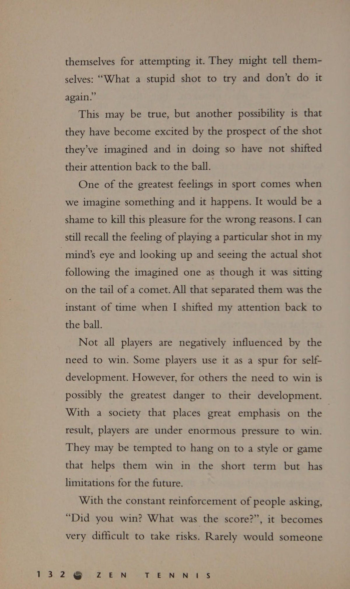
Nhiều người chơi cho rằng chỉ khi chơi tệ thì mới xảy ra sai sót. Tuy nhiên, điều này không đúng. Đã bao nhiêu lần bạn chơi một điểm tuyệt vời chỉ để theo sau nó bằng một điểm tệ hại? Chúng ta có thường xuyên nhìn thấy hai điểm tuyệt vời nối tiếp nhau không? Không thường xuyên! Điều có thể xảy ra sau khi bạn đã chơi và giành chiến thắng trong một pha giao bóng bằng một cú đánh xuất sắc là bạn cảm thấy rất hài lòng với bản thân đến nỗi bạn vẫn đang nhớ lại điểm đó trong đầu khi điểm tiếp theo bắt đầu. Khi tiếp tục hưng phấn ở điểm cuối cùng, bạn sẽ gặp may nếu nhìn thấy quả bóng tiếp theo.
Một lần nữa đây là nơi mà nghi thức và kỷ luật xem mọi quả bóng rất quan trọng. a 5 Sy ER acs PO) Fp Tôi nhận thấy ở bản thân mình và những người mà tôi huấn luyện rằng trong sức nóng của sự cạnh tranh, chúng tôi trở nên phấn khích hơn bình thường một chút và vì điều này mà chúng tôi có xu hướng vội vàng. Vào thời điểm đó, điều này có thể khó đánh giá, biết hoặc giám sát một cách khách quan. Đây là lúc điều quan trọng là phải có một bộ “nghi lễ” được xây dựng sẵn để giúp điều chỉnh Nhịp điệu trận đấu của chúng ta trên sân.
Hai trong số những khoảnh khắc quan trọng nhất trong quần vợt là những khoảnh khắc trước khi chúng ta nhận giao bóng và những khoảnh khắc trước khi chúng ta giao bóng. Đây là những khoảnh khắc lý tưởng để chúng ta tự giám sát và kiểm tra xem Sự tập trung của chúng ta có ở đúng nơi hay không. Chúng tạo cơ hội để vẽ Bóng, Cơ thể và Hơi thở.
Tầm quan trọng của nghi lễ là điều đã được biết đến từ hàng nghìn năm nay. Nó tăng thêm sự ổn định cho hành vi và hành động của chúng ta và là một phần của mọi nền văn hóa.
PHỤC VỤ Trước khi giao bóng, việc có một danh sách kiểm tra suy nghĩ nhỏ sẽ rất hữu ích. Những điều tôi cho là quan trọng
1. Quyết định nơi bạn sẽ giao bóng, đó là trái tay hay thuận tay? Mặc dù điều này có vẻ dễ hiểu, nhưng trong nhiều năm, tôi đã thấy nhiều người chơi đứng ở vạch giao bóng và thực hiện cú giao bóng nhanh nhất và tốt nhất của họ thẳng vào sức mạnh của đối thủ. Hãy nhớ rằng một cú giao bóng đúng vị trí thường tốt hơn sức mạnh thuần túy.
2. Bạn vào lưới hay ở lại? Trong hầu hết các trường hợp, quyết định này cần được đưa ra trước khi bạn giao bóng. Nếu bạn giao bóng và sau đó quyết định, bạn sẽ thường bị mất vị trí.
3. Bạn định thực hiện kiểu giao bóng nào? Bạn sẽ sử dụng một cú giao Cú đánh phẳng hay Xoáy lên mạnh mẽ? Tốt hơn hết bạn nên xáo trộn cú giao bóng để đối thủ không bắt nhịp khi Trả giao bóng?
4. Thư giãn tay cầm vợt và hít một hơi thật sâu. Nếu bạn quan sát kỹ bàn tay giao bóng của nhiều người chơi hàng đầu, bạn sẽ nhận thấy rằng họ thả lỏng các ngón tay trên cán vợt trước khi bắt đầu thực hiện động tác giao bóng của mình. Điều này cho phép bạn thực hiện một cú xoay nhẹ nhàng thoải mái và duy trì nhịp điệu.
5. Ký ức cuối cùng phải luôn là “xem bóng”. Đây có lẽ là điểm quan trọng nhất trong tất cả. Đối với nhiều người chơi, cú ném giao bóng thay đổi một chút và vì vậy nếu chúng ta tự động vung bóng mà không nhận thức rõ ràng về quả bóng thì thời gian của chúng ta có thể bị sai lệch. Việc quan sát quả bóng có nghĩa là cú swing này tính thời gian cho quả bóng này.
Cần có một lịch trình rõ ràng vì hai lý do. Đầu tiên, rõ ràng là chúng ta cần đưa ra quyết định về cách chúng ta sẽ chơi quan điểm nhưng điều quan trọng không kém là bằng cách có kỷ luật kiểm tra một cách có ý thức những gì chúng ta đang làm, quá trình này đóng vai trò như một tác động ổn định khi chúng ta bị áp lực và bị cám dỗ để vội vàng. Nếu chúng ta xem xét danh sách kiểm tra của mình một cách tôn giáo thì trong thời gian đó, sự chú ý của chúng ta sẽ tập trung vào những gì chúng ta cần làm và loại bỏ mọi suy nghĩ tự giới hạn hoặc tiêu cực. Do đó, nghi lễ đóng vai trò như một chiếc neo cảm xúc. Bằng cách đếm các món đồ và trả lời các câu hỏi một cách có ý thức, sự chú ý của bạn sẽ được tập trung ở nơi cần đến vào thời điểm hiện tại. ee CVIN GG
8 ET-U ALS Trước khi nhận giao bóng, chúng ta có thể xem lại danh sách kiểm tra để thử và chuẩn bị cho điểm sắp tới.
1. Thư giãn cầm nắm và kiểm tra hơi thở đều đặn. Sử dụng điểm kiểm tra này để kiểm tra xem bạn có thoải mái không. Thật thú vị khi lưu ý rằng sự thư giãn và gắn bó với kết quả ảnh hưởng như thế nào đến việc Trả giao bóng. Điều này được nhấn mạnh đặc biệt trong lần giao bóng đầu tiên. Trong nhiều trường hợp, cú giao bóng đầu tiên của một đấu thủ nhanh hơn nhiều so với cú giao bóng thứ hai của họ. Đã bao nhiêu lần bạn chờ đợi để trả lại quả giao bóng đầu tiên và đó là một lỗi. Nó thậm chí có thể rất dài và bướng bỉnh nhưng vì đó là lỗi và không thành vấn đề nên chúng tôi xoay người thoải mái và đánh trúng thứ mà lẽ ra sẽ là người chiến thắng mù quáng. Quả giao bóng thứ hai diễn ra với tốc độ chỉ bằng một nửa, giúp chúng tôi có nhiều thời gian để xem nó và chúng tôi thực hiện một cú sút thẳng vào lưới. Vì thắng/thua và sợ sai mà chúng ta thắt chặt và phạm sai lầm.
2. Có ý thức quan sát cú ném bóng của đối thủ. Đây là thời điểm để kiểm tra. (Rất dễ tập trung vào một suy nghĩ mà không nhận ra nó, vì vậy sẽ rất hữu ích nếu bạn nhìn thấy quả bóng này một cách có ý thức để bạn không bị đánh thức đột ngột khi quả bóng đến.)
3. Nhớ quan sát bóng nảy lên trước khi đánh nhé. Nhiều người mất đi nhận thức về thời gian khi giác quan của họ nhận ra rằng quả bóng đang đến rất nhanh. Họ hoảng sợ. Thay vì sử dụng thời gian sẵn có, họ phản ứng thái quá và hành động sớm. Điều này dẫn đến việc đánh bóng sai thời điểm hoàn toàn.
Học cách phản ứng phù hợp có thể khó thành thạo. Một bài tập hữu ích để thực hành là nhờ ai đó Giao bóng / Cú giao bóng nhanh cho bạn. Ban đầu hãy hài lòng với việc chỉ dừng bóng bằng vợt của bạn mà không cần lo lắng về việc cố gắng đánh trả nó. Chú ý thời gian sau khi bật lên. Một khi bạn cảm thấy rằng bạn có thể nhìn thấy rõ ràng thì hãy bắt đầu cố gắng trả bóng trong khi quan sát nó.
Nếu bạn vẫn cảm thấy áp lực, bạn có thể tạo thêm thời gian cho bản thân bằng cách lùi xa hơn ra sân. Khi bạn trở nên Sự tự tin hơn với quá trình này, hãy thử nghiệm việc tiến về phía trước một lần nữa. Hãy vui vẻ một chút và xem bạn có thể đứng được bao xa và bóng vẫn đứng yên. Hãy nhớ đây là bài tập THỰC HÀNH. Qua nhiều năm, tôi nhận thấy rằng nhiều người thực sự có xu hướng vung vợt sớm khi Trả giao bóng. Có vẻ như đây là một cảnh quay khó chờ đợi. Điểm cuối cùng về những khoảnh khắc này trước khi nhận giao bóng và giao bóng: Luôn đợi cho đến khi bạn sẵn sàng thực hiện điểm trước khi bắt đầu. Điều quan trọng là thiết lập sự hiện diện của riêng bạn trên sân đấu. Nếu một tay vợt đối phương có thể lao tới và gây áp lực buộc bạn phải chơi trận đấu theo Nhịp điệu trận đấu của họ, bạn có thể cảm thấy như thể mình không thể hòa nhập vào nhịp điệu của chính mình. Gần đây, tôi đã tham gia một khóa học nói trước công chúng và mỗi người trong chúng tôi đều nhận thấy rằng việc thu hút sự chú ý của khán giả khi bắt đầu bài phát biểu là khó khăn như thế nào. Sự căng thẳng thần kinh đã thúc đẩy chúng tôi bắt đầu cuộc nói chuyện trước khi chúng tôi thực sự sẵn sàng. Một đêm nọ, chúng tôi dành thời gian luyện tập chờ đợi trên bục giảng trước khi phát biểu. Ban đầu thật khó để tiếp tục cho đến khi chúng tôi thu hút được sự chú ý của khán giả nhưng khi chúng tôi đã có được một chút Sự tự tin thì mọi thứ trở nên rõ ràng rằng khoảnh khắc này có thể mạnh mẽ đến mức nào. Tương tự như vậy, bạn có thể dễ dàng bước lên hàng để giao bóng và được thúc đẩy bởi lượng adrenaline bổ sung vào thời điểm đó. Vì vậy, hãy luyện tập kiềm chế sự cấp bách này để sớm thiết lập được rằng bạn HIỆN TẠI.
26. Chơi bóng với bộ cân bằng đồ họa (Graphic Equalizer) (Playing with the Graphic Equalizer)
Sau khi dành chút thời gian làm quen với các chương trước, điều quan trọng là phải quyết định, tại bất kỳ buổi thực hành cụ thể nào, điểm nhấn của bạn cần nằm ở đâu. Bạn có cần quan sát bóng kỹ hơn sau khi nảy lên không? Bạn có cần dành nhiều thời gian hơn để thư giãn và theo dõi khả năng cầm nắm của mình không? Và vân vân. Ví dụ, bạn có thể cảm thấy rằng bạn đang tập trung vào quả bóng và nhìn thấy nó rõ ràng sau khi nảy lên, tuy nhiên bạn có thể cảm thấy rằng mình đang đánh bóng không tốt. Nếu đúng như vậy thì bạn có thể cần dành nhiều thời gian hơn để thư giãn bàn tay của mình. Cuối cùng, bạn có thể thấy mình đang chơi với các mặt số của âm thanh nổi, tăng âm trầm hoặc âm bổng cho đến khi bạn đạt được mức điều chỉnh như ý muốn. Việc tinh chỉnh này có thể hơi khác mỗi lần hoặc bạn có thể bắt đầu nhận thấy rằng bạn cần phải làm việc trên một lĩnh vực cụ thể nhiều hơn những lĩnh vực khác. bóng Mỗi điểm, bộ trò chơi và trận đấu bị trượt bởi Tất cả những người chơi không được chú ý Hấp thụ, bận tâm Hoặc bị mất Trong cùng một két an toàn Nhưng mô hình chết chóc Cho đến khi một ánh sáng bí ẩn chiếu sáng Khoảnh khắc này, Cú đánh này, quả bóng này Rõ ràng là mới Ah Ha!! Người quan sát trở nên Nhận thức được chính nó Và nhận ra Tâm trí đi đâu Con mắt dõi theo Điều này người chơi nhìn thấy.
LỜI BẠT (EPILOG)
27. Khóa tu quần vợt (A Tennis Sesshin) (A Tennis Sesshin)
Những ngày đầu tập luyện quần vợt, tôi đã muốn đưa ra quá nhiều chỉ dẫn. Mỗi học sinh đều có vẻ khao khát thông tin và thật hấp dẫn khi cung cấp cho các em một bản tường trình chi tiết về mọi thứ trong trò chơi của các em cần phải thay đổi.
Thật không may, mặc dù điều đó khiến tôi tỏ ra rất hiểu biết nhưng hiếm khi dẫn đến kết quả tốt. Nhiều lần, học sinh ra về với tâm trạng lạc quan, được trang bị một cuốn sách công thức tinh thần để giải bất kỳ vấn đề quần vợt nào, sẽ quay trở lại vào tuần sau với tâm trạng thất vọng và chán nản khi thấy trận đấu của họ thực sự đã trở nên tệ hơn chứ không phải tốt hơn.
Theo thời gian, tôi học được cách giữ lại thông tin cho đến khi họ sẵn sàng tiếp nhận thêm. Quản lý sự thay đổi trong trò chơi của họ có nghĩa là tạo ra sự cân bằng giữa việc loại bỏ cái cũ và duy trì sự ổn định trong quá trình này. Bằng cách này, họ có thể đạt được tiến bộ bền vững. Tuy nhiên, đối với những người cực kỳ nhiệt tình với việc bắt tay vào công việc, tôi khuyên họ nên cố gắng dành nhiều thời gian hơn cho cách tiếp cận tập trung. Sự thay đổi bền vững cần phải được thực hiện dần dần hoặc đòi hỏi nỗ lực tập trung để mang lại sự thay đổi đó. Nếu trò chơi của bạn đã đạt đến trạng thái ổn định hoặc bạn muốn đột phá nền tảng mới, tôi khuyến khích bạn thử một Sesshin (khóa tu thiền) (khóa tu thiền) quần vợt để giúp quá trình chuyển đổi trò chơi của bạn diễn ra suôn sẻ và nhanh chóng hơn. Trong truyền thống Thiền, các Sesshin (khóa tu thiền) (khóa tu thiền)s (chuyên sâu) được thiết kế để mang lại cho các hành giả cơ hội đạt được những hiểu biết sâu sắc hơn về sự thực hành của họ. Từ Sesshin (khóa tu thiền) (khóa tu thiền) thực sự có nghĩa là hợp nhất tâm trí. Trong các khóa nhiếp tâm này, các tu sĩ hoặc những người thực hành Thiền sâu sắc sẽ thực hiện các giai đoạn thiền định, tụng kinh và nghi lễ chuyên sâu hơn. Một buổi Sesshin (khóa tu thiền) (khóa tu thiền) quần vợt mang đến cho bạn cơ hội luyện tập và kết hợp các kỹ thuật được thảo luận trong cuốn sách này và hy vọng có được cái nhìn thoáng qua về trò chơi của bạn ở cấp độ cao hơn. Nồi AON
NOG vO OLUR
TE NN TS
OS ES SCION Điều quan trọng trước khi bắt đầu học chuyên sâu là bạn phải lên kế hoạch cho từng chi tiết để không thấy mình phải đưa ra quá nhiều quyết định trong thời gian đó. Bao lâu?
Quyết định đầu tiên cần đưa ra là bao lâu và như thế nào
một trải nghiệm mãnh liệt mà bạn mong muốn. Các khóa thiền
thường kéo dài trong bảy ngày. Ngày được cấu trúc từ
từ sáng sớm đến tối. Bạn định dành bao nhiêu thời gian cho
chuyên sâu? Bạn có cả ngày, cuối tuần hay một tuần? Với ai?
Sẽ thật lý tưởng nếu có một nhóm người cùng chí hướng
những người tham gia vào nhiếp tâm. Có sức mạnh trong
số. Rõ ràng, vì đây là môn quần vợt chuyên sâu nên nó sẽ
trợ giúp nếu đối tác đánh của bạn ở trình độ tương tự.
Tuy nhiên, miễn là mỗi người trong nhóm có
một người có khả năng tương đương để đánh nó sẽ không
sẽ quan trọng nếu có các tiêu chuẩn khác nhau trong nhóm.
Rõ ràng là dành cho thiền định, ăn uống và đi bộ
thành phần, khả năng chơi quần vợt là không liên quan. Ở đâu?
Khi bạn đã có thể tổ chức một nhóm, hãy làm việc
nơi diễn ra khóa nhiếp tâm. Quần vợt nào
sân đấu? Bạn có thể về nước và biến nó thành một
rút lui? : Thức ăn
Việc chuẩn bị và mua thực phẩm cần phải được thực hiện
được cân nhắc trước để công việc thường ngày không bị gián đoạn. Sau khi gặp khó khăn trong việc tổ chức thời gian này, hãy cố gắng làm cho bữa ăn bổ dưỡng trở nên thú vị.
Do thời gian tập luyện nhiều trong ngày, điều quan trọng là phải hấp thụ nhiều carbohydrate phức hợp. Những thực phẩm này bao gồm ngũ cốc nguyên hạt, trái cây, bánh mì, rau, mì ống và khoai tây. Điều này sẽ cung cấp nhiên liệu cần thiết cho các hoạt động trong ngày. Hoạt động thiền nào? Hai vấn đề quan trọng được thảo luận là:
1. Thiền định thần chú, rất hữu ích cho việc giải tỏa tâm trí và là một quá trình tương tự như việc xem bóng.
2. Thư giãn dần dần có thể giúp bạn đạt được một số nhận thức về cơ thể và thư giãn để bước vào sân.
Xuyên suốt cuốn sách, chúng tôi đã xem xét các bài tập khác nhau được thiết kế nhằm nâng cao nhận thức hơn về thái độ, suy nghĩ, cơ thể và hơi thở của chúng ta. Bài tập nào trong số này hấp dẫn bạn? Bạn có thể muốn thực hành một kỹ thuật trong suốt thời gian tập luyện chuyên sâu của mình hoặc bạn có thể muốn thử nghiệm nhiều kỹ thuật khác nhau. Hoạt động quần vợt nào? Khi lập kế hoạch cho khía cạnh này, hãy xem xét một số hoạt động được thảo luận trong cuốn sách. Một số trong số này là:
Xem bóng (xem trang 137).
Theo dõi độ căng (xem trang 77).
Tổng hợp tất cả lại, ví dụ như bài tập giao bóng và nhận bóng (xem trang 145-48). Hãy bám sát thời gian biểu của bạn, nếu không bạn sẽ phải cắt giảm và thay đổi thời gian quá nhiều. Khi bạn đã quyết định được thói quen của mình, điều quan trọng là bạn nên hòa mình vào đó với ít phiền phức nhất có thể.
6 giờ sáng Bắt đầu sớm. Trong một khóa thiền, một ngày thông thường có thể bắt đầu lúc 4 giờ 45 sáng. Đây có lẽ là một cú sốc đối với hầu hết chúng ta, vậy nên chúng ta hãy thử dậy lúc 6 giờ sáng. Mất nửa giờ để tắm rửa và thức dậy.
6h30 sáng. Cá nhân hoặc theo nhóm thực hiện một số động tác giãn cơ nhẹ hoặc đi bộ nửa giờ. Vào thời điểm này trong một nhiếp tâm Thiền, những người tham gia sẽ ở giữa một buổi thiền Zazen (tọa thiền)/Kinhin (thiền hành) (thiền hành) kéo dài hai tiếng rưỡi. Làm điều này rất dễ dàng và nhẹ nhàng. Đó là một hoạt động đánh thức cơ thể một cách chậm rãi chứ không phải là một hoạt động aerobic.
7 giờ sáng. Đây là giờ thiền. Bạn đã chọn bài tập nào? Một số khả năng là:
• Thiền tọa thiền (trang 114)
bài tập quán tưởng (trang 100)
• thư giãn dần dần (trang 91);
Bạn có thể muốn sử dụng kết hợp. Hãy quyết định điều này trong buổi lập kế hoạch của bạn trước khi bắt đầu khóa học chuyên sâu.
8 giờ sáng Ăn sáng. Hãy cố gắng làm cho nó khỏe mạnh. Thức ăn sáng điển hình sẽ là ngũ cốc nguyên hạt (muesli), trái cây, bánh mì nướng và bánh nướng xốp nguyên hạt có nhiều chất xơ. Đảm bảo uống nước thường xuyên trong suốt buổi sáng, đặc biệt là trong điều kiện ấm áp.
9 giờ sáng Tập quần vợt — 90 phút
Làm nóng từ từ. Sẽ rất hữu ích trước khi bạn đánh một quả bóng, hãy tập Thái Cực Quyền và từ từ thực hiện thói quen chơi quần vợt. Tập trung vào cảm giác những cú đánh của bạn trôi chảy một cách dễ dàng. Bây giờ cơ thể bạn đã ấm, hãy bắt đầu với động tác đánh chậm và thư giãn. Bạn có thể làm theo Kế hoạch đánh sáu giai đoạn và bắt đầu bằng cách quan sát quả bóng như ở Bước 1. Xem cảm giác của thời gian sau khi nảy. Bạn có cảm thấy cấp bách hoặc thư giãn. Sau đó thêm
chuyển động của Bước 2. Cảm nhận bản thân đang di chuyển dễ dàng
xung quanh sân, theo đường bay và cú nảy của
quả bóng.
Nửa giờ cuối cùng của thời gian này có thể được sử dụng để thực hành các nghi thức Giao bóng / Cú giao bóng và tiếp nhận.
10h30 sáng
Nghỉ uống trà buổi sáng — 30 phút
Trong thời gian nghỉ giải lao này bạn có thể nói chuyện với
thực hành đối tác kinh nghiệm của bạn vào buổi sáng. Cái này
có thể là thời điểm hữu ích để ghi chú một số thông tin khác
ý tưởng, suy nghĩ cho lần thực hành sau này.
Nước ép trái cây hoặc trái cây dễ tiêu hóa như chuối
sẽ giúp duy trì lượng đường trong máu ở mức cao.
11 giờ sáng
Luyện tập quần vợt — 90 phút Nếu bạn cảm thấy thoải mái với các quy trình trong
phiên trước thì bạn có thể chuyển sang sử dụng
các bước tiếp theo của Kế hoạch đánh sáu giai đoạn. Điều này liên quan đến
điểm chơi. Lúc đầu chơi điểm không cần lo lắng
về điểm số. Hãy xem liệu bạn có tập trung vào
quả bóng. Bạn có thể kiểm tra xem bạn có thả lỏng tay trên
vợt giữa các cú đánh. Sau đó chuyển sang tính điểm. Một lần nữa
quan sát xem bạn có thể duy trì Sự tập trung và
thư giãn. Nửa giờ cuối cùng có thể xoay quanh việc ở lại
thư giãn và tập trung vào lưới. Luôn kiễng chân, thả lỏng tay và tìm bóng. Rõ ràng, bạn sẽ có ít thời gian hơn để nhìn thấy bóng khi ở trên lưới. Bài tập này thường được thực hiện trong thời gian ngắn.
Trong một nhiếp tâm Thiền, phần này của buổi sáng có thể được lấp đầy bằng việc tọa thiền, tụng kinh hoặc nói chuyện.
12h30 trưa. Bữa trưa
Bữa ăn ít chất béo, nhiều carbohydrate cho bữa trưa có thể bao gồm bánh mì sandwich, salad, trái cây sấy khô. Kiểm soát số lượng bạn ăn vì bạn sẽ phải chạy xung quanh trong vòng chưa đầy một giờ. Hãy nhớ uống một vài ly nước.
2 giờ chiều. Luyện tập quần vợt - 2 giờ
Bắt đầu bằng khởi động. Sau đó, nếu bạn hài lòng với sự tiến bộ của mình sáng nay, bạn có thể chuyển sang chơi các trận đấu với tính điểm quần vợt bình thường. Một lần nữa hãy chú ý đến cách bạn phản ứng với áp lực. Bạn có thể duy trì sự chú ý của mình vào quả bóng và đồng thời cảm thấy thư giãn không?
Để lại mười lăm phút cuối cùng để làm ấm cơ thể. Bạn có thể quay lại Cú đánh nhẹ (dink) hoặc bạn có thể thực hiện một số động tác giãn cơ nhẹ.
4 giờ chiều. nghỉ 30 phút
Sau khi chơi quần vợt xong trong ngày, có lẽ sẽ rất hữu ích nếu sử dụng thời gian này để tắm rửa. Tắm rửa và thay quần áo nhẹ nhàng, thoải mái để sẵn sàng cho buổi thiền buổi chiều.
4h30 chiều. Thiền - 1 giờ
Sử dụng kỹ thuật hòa giải mà bạn đã chọn.
ước
cái này
sân khấu
lặp lại kỹ thuật thiền bạn đã sử dụng sáng nay hoặc bạn có thể muốn thử điều gì đó khác. Nếu bạn gặp khó khăn với một khía cạnh của trò chơi trong ngày, việc sử dụng hình ảnh trực quan, Gặp gỡ Huấn luyện viên Nội tâm, có thể hữu ích.
5h30 chiều. Thời gian rảnh - 1 giờ
Đây có thể là thời gian quý giá để bạn điền vào nhật ký để mang đến buổi học buổi tối. Viết một cái nhìn tổng quan ngắn trong ngày. Trải nghiệm thiền như thế nào? Bạn có thể tập trung vào sân tennis được không?
6h30 chiều. Bữa tối
Bữa tối có thể bao gồm nhiều carbohydrate phức tạp hơn như mì ống, rau, cơm, khoai tây, đậu lăng và salad trái cây. Nếu cường độ tập luyện của bạn kéo dài hơn một ngày thì bữa ăn này sẽ cung cấp một phần nhiên liệu cho các hoạt động của ngày mai.
7h30 tối. Hãy tận dụng thời gian này để họp nhóm. Bạn cảm thấy thế nào ở giai đoạn này trong ngày? Mệt? Thư giãn? Có ai có bước đột phá nào không? Có ai đạt được bất kỳ hiểu biết mới nào về trò chơi của họ không? Có điểm tương đồng nào giữa phản ứng của bạn trước áp lực lên sân đấu và phản ứng của bạn trong các lĩnh vực khác không? Nếu chỉ là một buổi nhiếp tâm một ngày, bạn có thể tập trung vào khía cạnh nào trong trò chơi của mình khi trở lại câu lạc bộ của mình? Bạn có thể sử dụng thời gian này để điền vào bảng ước mơ/mục tiêu hoặc bảng Satori và sử dụng chúng để thảo luận.
10 giờ tối. Tắt đèn
Trong mỗi ngày của khóa nhiếp tâm, bạn có năm giờ tập luyện kết hợp với hai giờ thiền định. Những khoảng thời gian này sẽ đòi hỏi sức chịu đựng cả về thể chất và tinh thần. Được nghỉ ngơi tốt là điều quan trọng.
Thời gian tập trung do một buổi nhiếp tâm quần vợt mang lại sẽ cho bạn cơ hội thực hành các quy trình và kỹ thuật được mô tả trong cuốn sách này để bạn trải nghiệm:
khả năng quần vợt có thể được sử dụng như một phương tiện: để khám phá và biến đổi
_ thái độ vô thức
giá trị của việc hoàn toàn tập trung vào thời điểm hiện tại
tiềm năng thực sự của bạn với tư cách là một vận động viên quần vợt
mối liên hệ giữa triết lý quần vợt và triết lý sống của bạn
kinh nghiệm ngộ.
28. Bài thơ kết: Vệt màu bừng sáng (Closing Poem: A Splash of Color)
Một vệt màu Bùng nổ từ vợt của người chơi Một cây bút vẽ của nghệ sĩ Trên một tấm vải hình chữ nhật Quả bóng Để lại dấu ấn Những chấm tròn Của nghệ thuật thổ dân Những chuyển động theo dấu chân của Một vở ballet hiện đại Được biên đạo bởi những sợi dây vô hình Những cú đánh đối lập Với bàn tay siết chặt Giơ lên trong chiến thắng và tuyệt vọng Các diễn viên hét lên đầy nhiệt huyết vang vọng khắp đấu trường Nhà hát của niềm vui và nỗi buồn Trình diễn những bi kịch và chiến thắng của tinh thần con người